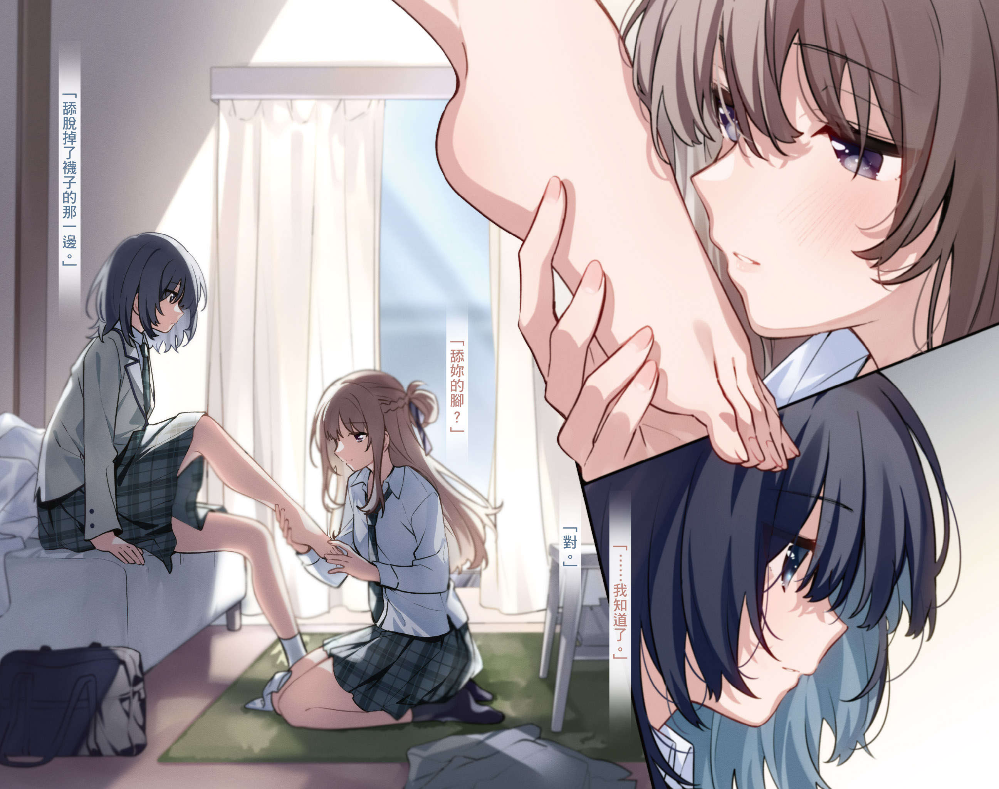
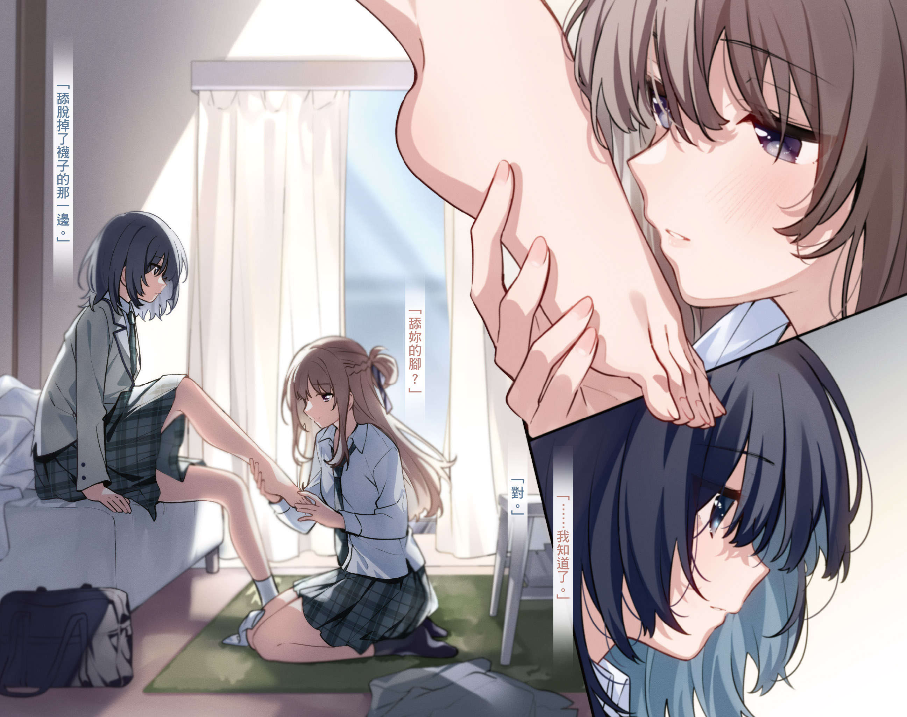
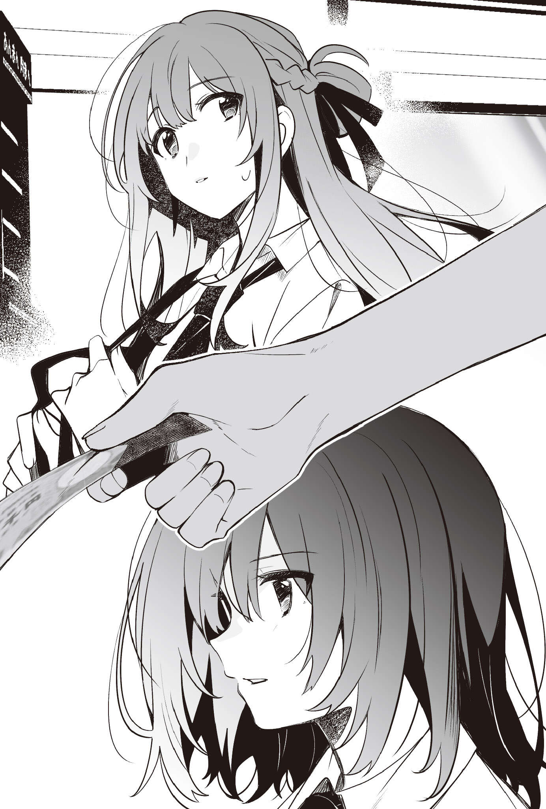
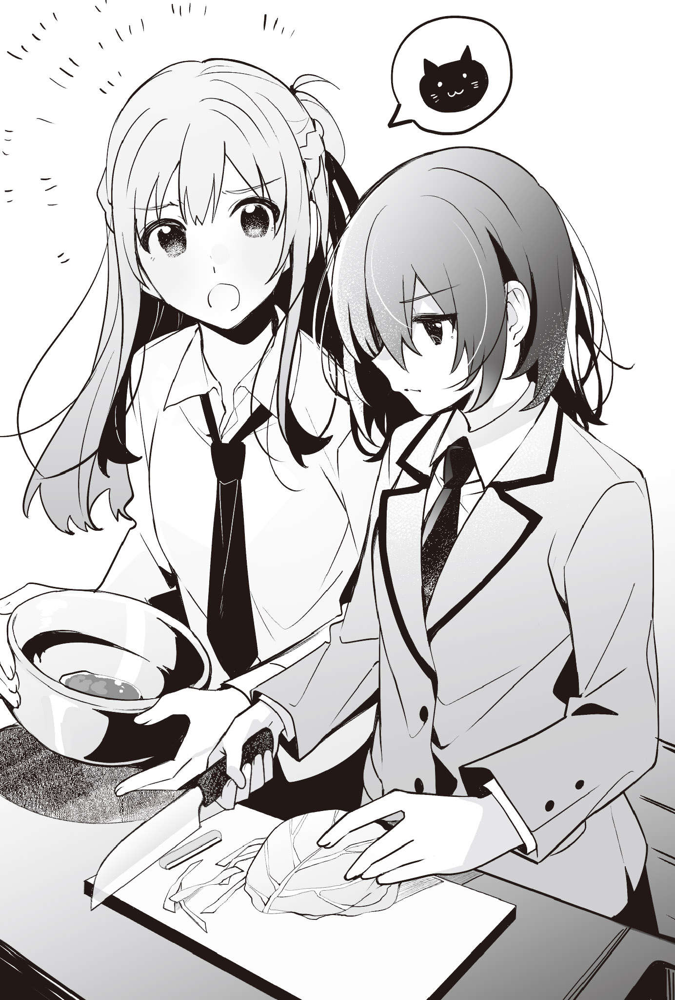
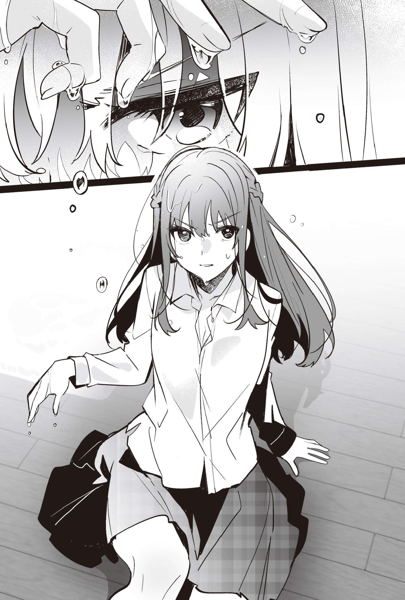
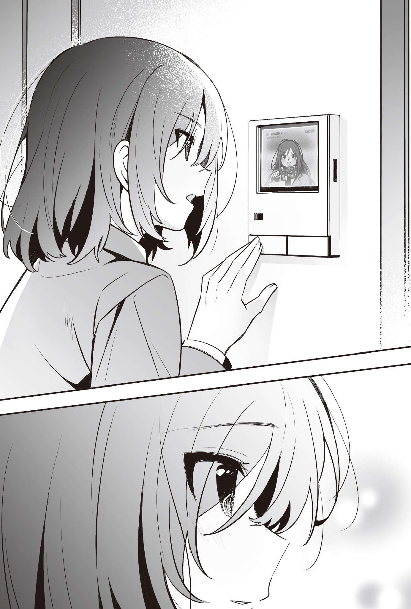
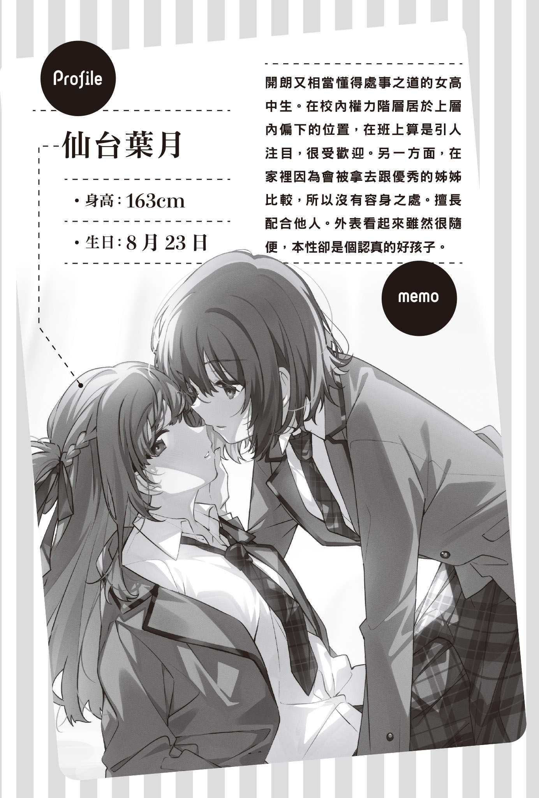
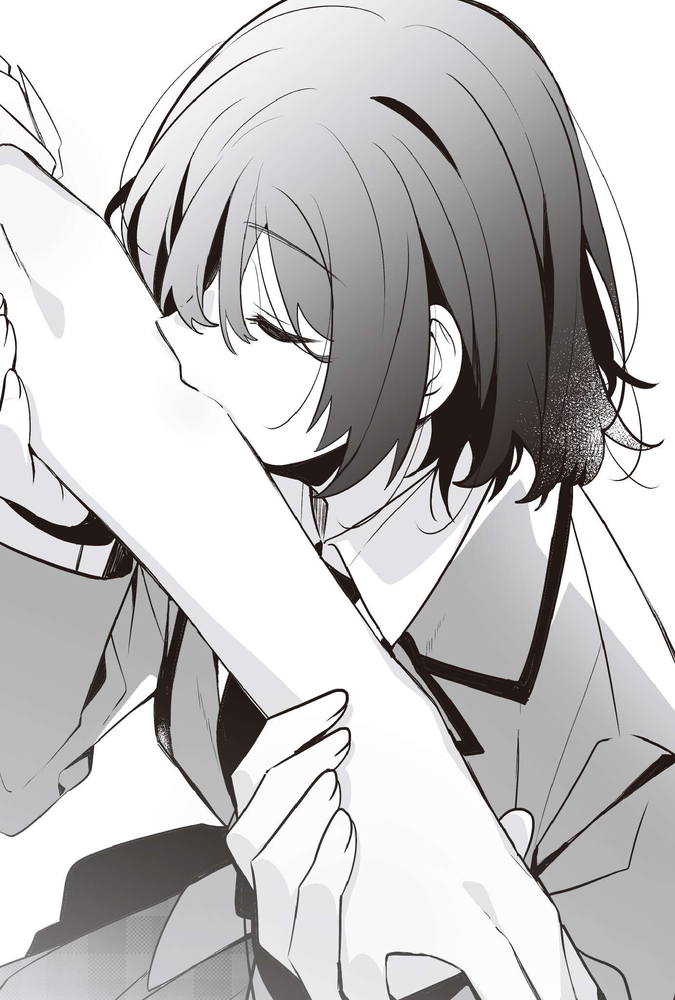
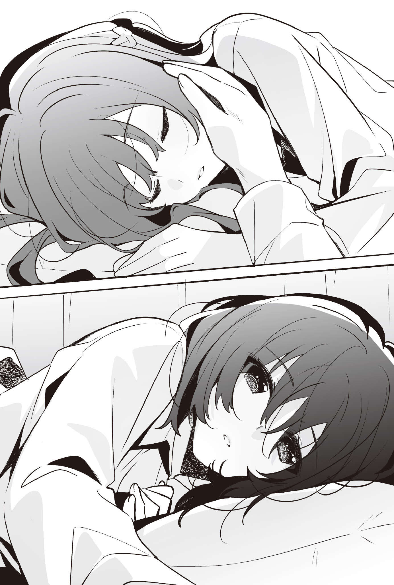

羽田宇佐（著） U35（插画）
 

其实也没有非要仙台同学不可的理由。换成市尾同学也好，后藤同学也可以。就算是个未曾谋面的陌生人也无所谓。
即使如此，我仍选上了仙台同学，是出于命运的安排……要是我能这么说就好了，然而实际上只不过是偶然。许多偶然重叠在一起，再加上我的一时兴起，所以现在仙台同学在我的房间里。
一周一次，每次三小时。
我会付给她五千圆。
这就是我们之间的契约。
不，其实我们没订定这些明确的规范。
有过两小时支付五千圆，也有过三个半小时支付五千圆的经验。有时一周一次，也曾经一周有过两次。时间与次数不一定，不过五千圆这个金额不会改变。总之不管时间与次数，我会用每次五千圆的代价，买下仙台同学放学后的时间。
这是个不争的事实。
「宫城，拿这个的下一集给我。」
躺在我床上的仙台同学用一副理所当然的态度这么说，敲了敲我的肩膀。
靠着床铺坐在地板上的我回过头，发现敲在我的肩膀上的是她刚看完的漫画。
在十二月一个冷到不行的日子里，为了抵挡外头的寒意而开了电暖器升温后的房间，对她而言似乎有些热，只见她脱掉了制服的制服外套。没系好的领带，解开了从上面算来两颗扣子的衬衫，再配上比校规规定更短的裙子，她用这身打扮在房里软烂着的模样，实在很不像样。我想只要我有那个意思，应该能直接欣赏她的裙底风光。
看到在学校保有清纯形象的仙台同学这副模样，班上同学可能会感到幻想破灭吧。
「你自己拿啦。」
我把上面标示着第三集的漫画，推回给正一派轻松地霸占了床铺的仙台同学。
尽管不到顶尖，却也列居前茅。
如果卸掉脸上的淡妆，说不定其实只有中上程度，不过仙台同学就是有着这种水准的美貌。而且她的脑筋也很好，成绩在全年级当中也是前段班的，应该啦。
当然她也满受欢迎的。
──好像是这样。之所以说得这么暧昧，是因为我也没目睹过她受人簇拥的场面。
她是所谓的现充，在校内权力阶层中属于上层的人。
虽然说是上层，她在那些人之中的地位算是比较低的那一群就是了。
即使如此，她在班上还是很醒目，就算有人追捧也不奇怪。
「小气鬼。你帮我拿一下又不会怎样。」
仙台同学的手突然伸过来，把第三集丢到我的大腿上。
「……仙台同学，你到底把我当成什么了？」
「离书柜最近的人。」
「自己拿啦。」
我冷漠地回话，把第三集放到床上。
如果这是在学校，位于校内权力阶层的底层，或者说勉强才能搆上二军边缘的我，当然不可能用这种嚣张的态度跟仙台同学说话。
是因为在这个房间里。
因为我付了五千圆买下仙台同学，所以才能做出这种事。
但是我不懂她为什么会这样逆来顺受地任我买下她。以仙台同学的资质，我觉得只要她有心，在同样的时间内，别说五千圆了，她想赚个一、两万圆都不是什么难事。
顶着女高中生的头衔，再加上她的姣好外貌，应该有人愿意支付那样的价码才对。
所以像我这种无论是脑筋还是外貌都很普通的人，竟然能获得自由使唤仙台同学的权利，现在这恐怕是绝无仅有的状况，这段时间也变得格外宝贵。
「唉～好啦，我自己拿。」
仙台同学用一副觉得很麻烦的口气说完后下了床，随即坐到书柜前，嘴上一边嘀咕着：「第四集在哪啊？」一边开始找起书来。
虽然不爽，但我觉得光看她的背影，就能够想像她的脸有多正。
长及背部的头发绑成公主头，左右两侧的头发编成辫子固定在脑后。发色与其说是黑色，更接近棕色，可是老师并没有因此指责她。当然这违反了校规，不过或许是因为她在服装仪容上拿捏得恰到好处，加上选择了乾净清爽发型的形象策略奏效，我从没看过老师抓她违反校规的场面。而且她又被分在成绩比较好的那一边，老师可能也不会特地去盯她吧。
说这是老师刻意偏袒她也不为过，这社会真的是很没道理可言。
我整个人倒在仙台同学离开的床上。
我也不是想变成她那样，但是确实有些羡慕她。
我今天因为搞错作业范围，交错了东西而被老师骂。如果弄错的是仙台同学，老师应该不会骂她吧。
「我说宫城，书柜里没有第四集耶。没有的话你早说没有就好了嘛。」
进入高中生活后，过得比其他人更轻松愉快的仙台同学不悦地看着我。
「明明就有。」
「没有啊。」
「骗人，有吧。」
「就说没有了。」
见她说得这么坚定，我开始回想。
我记得第四集的发售日，可是不太有印象自己到底买了没有。
「第四集是上周发售的，所以我以为自己买了，但我有可能忘了买。」
我自言自语般地嘀咕道，决定明天去买。
我把脸贴在棉被上，感受到一股不属于我的好闻香气，激起了我的不满。
「原来你有在记发售日喔？」
「有啊。」
「好宅喔。」
「要你管。」
我抬起脸看着仙台同学。
她的说法其实不是那么带刺，甚至可以算是在开玩笑，却令我备感烦躁。我起身看向窗外，天色已稍稍暗了下来，几户之外的大楼也已亮起灯光。
夜晚即将到来。
我拉上窗帘，开灯。
坐回床上，将两脚的脚底贴在地板上。
今天过得不太顺遂。
我的心情跟天色一样阴暗。
「仙台同学，你过来这里，坐下。」
我喊了人在书柜前的仙台同学。
「你说坐下，是要我坐在你旁边？」
「坐在地板上。」
「命令时间到了？」
「没错。」
当白天过得不顺遂时，我就会在放学后叫仙台同学来，并命令她。
自从跟她建立了这样的关系之后，我便这么决定了。
我跷着腿，看着仙台同学。
我的裙子虽然比仙台同学的长一点，不过还是略短于校规规定的长度。我是不像她有一双修长的美腿可以给人看，但这也无可奈何。
「所以要做什么？」
仙台同学坐在我面前如此问道。
我放下刚跷起来的腿，平静地开口。
「脱掉。」
我把右脚放到仙台同学的大腿上，指了指袜子。
「好好好。」
「『好』说一次就够了。」
我才说完，仙台同学又用「好好好」来回应我。我是不至于要她连回话都遵照我的方式来回，所以没说什么。接着她便照我的命令脱下了袜子，然后问我：「左脚也要脱吗？」
「左脚不用。舔脱了袜子的那一边。」
我用光脚轻轻戳了戳仙台同学的肚子。她露出诧异的表情。
「舔你的脚？」
「对。」
我大概是从梅雨季结束那时开始花五千圆买下仙台同学的时间，但还是第一次下这种命令。平常我下的都是叫她念书给我听，或是帮我写作业这种无伤大雅的命令。
花五千圆就能让仙台同学对我唯命是从。
只有这才是重点，内容并不重要。所以我才没有下过这种很「刻意」的命令。可是今天，我不想命令她做那些无伤大雅的事。
我想下个她会不想遵从的命令。
只是我也不认为习惯遵从无聊命令的她，会遵从这种跟平常不一样的命令。
「……我知道了。」
尽管没有立刻回覆，仙台同学却与我的预测相反，接受了这项命令。她的语气之中不带任何感情，却仍用手扶着我的脚踝和脚跟，捧起了我的脚。
仙台同学凝视着我的脚。
我的背脊一阵麻。
命令虽然是我下的，眼前这不真实的景象却让我的身体有些紧绷。
在班上属于引人注目的那一群，又备受老师疼爱的仙台同学，竟然如此乖巧地任凭毫无优点的我命令她，准备像个仆人那样舔我的脚。
接下来即将发生的事情让我的情绪高昂起来。
「仙台同学，动作快。」
我催促迟迟没有行动的她。
电暖器持续吹送温暖的空气，仙台同学有些燥热似的把领带拉得更松。制服外套被她脱在稍远处。从已经解开两颗扣子的衬衫领口处，可以看见她暴露在外的锁骨。
我的脚被她轻轻地抬起，温暖的气息呼在我的脚背上。
然后是一股柔软的触感。
应该是仙台同学的舌头碰到了我的脚。
「可以了吗？」
「不行。」
我强硬地对想马上抬起头的仙台同学说，并用脚背挑起她的下巴。
「我只舔一下不够吗？」
仙台同学推开我的脚，狠狠地看了过来。
「不够。」
「那我要舔到什么时候才行？」
「舔到我满意为止。」
「变态。」
「因为你的工作就是要听从这个变态的指令。」
我已经在事前付了五千圆给她。
那就是束缚住仙台同学的锁鍊，她没办法违抗我。
在这个房间里存在着这样的约定。而她只能遵从这个要听命于我的约定。
◇◇◇
「仙台同学，住手。」
约莫五分钟。
说不定有将近十分钟。
我没有计时，所以不是很确定，但应该差不多过了这么久之后，仙台同学突然咬了我的脚。我的脚拇趾明确地感受到，她做出舔这个命令以外的动作所带来的牙齿感触。
「仙台同学。」
我用比方才更强硬的语气说道。
好痛。
仙台同学没有听从「住手」这个命令，用牙齿咬住了我的脚趾，用力到几乎要留下齿痕的程度。
「别做命令以外的事情啦。」
在我的视线前方，可以看到她的发旋。
我抗议地抓着她的脑袋摇晃了一下，她才松开原本咬在我脚趾上的牙齿。然后她的舌头像是在确认齿痕似的舔了上来，弄湿了我的脚趾。温暖的舌头感觉很恶心。但是我意识到自己心中不单只有这种感觉，为了甩掉那份感情，我用过去未曾有过的强硬语气对仙台同学说道。
「我不是叫你住手了吗？结束了。」
仙台同学抬头，拿起袜子。
「把脚给我，我帮你穿。」
通常应该是乾燥的部位却湿答答的感觉，其实满不舒服的。我也没打算要她一直舔下去，所以对于穿上袜子这件事是没有意见，但我只想反驳她刚刚那句搞不清楚谁才能下达命令的发言。
「袜子不用穿，你把这边也脱了。」
我说完并把左脚放到仙台同学的大腿上后，她默默地照做了。
「所以宫城，被人舔脚很好玩吗？」
「还算好玩吧。」
尽管不如杂志上的模特儿，仙台同学仍有着出众的外貌。即使被这么漂亮的人用舌头舔脚背，感觉也实在称不上有趣，不过仙台同学在舔我的脚，这个情境本身倒是相当有趣。
「宫城你真的很变态耶。」
「照着命令舔我脚的人才变态吧。」
「如果我在学校跟其他人说宫城命令我舔她的脚，我觉得大家都会说你是变态。」
「如果是这样，我就会去跟大家说仙台同学真的遵照命令舔了我的脚。让大家来判断我们到底谁才是变态就好了吧？」
「宫城你才下流又变态吧。」
「我倒是觉得仙台同学你才变态。」
要是今天我命令她的内容在学校曝光，勉强还算是二军吊车尾的我，应该会整个人倒栽葱，一口气跌落到最底层，肯定无法再继续过着目前这种还算普通的校园生活。不过仙台同学也一样，要是让人知道她竟然跑来舔我这种不起眼人物的脚，别说维持现有的地位了，她甚至有可能会被分到比我更低的阶层去。
所以就算我下流又变态也无妨。
反正就算是仙台同学，在这里也是下流变态的同夥。
「不然明天到学校问其他人，我跟宫城谁比较变态好了……开玩笑的啦。在学校泄漏这房间里发生的事情可就违反契约了，放心吧，我不会说的。」
我们一开始就定下了几条规矩。
为了让我支付五千圆之后可以随心所欲地差遣仙台同学，我们有事先说好几件事，其中包含了不对任何人透露放学后所发生过的一切。
所以刚刚发生的那些事情，是只属于我们两人的秘密小游戏，我当然不会告诉任何人。而仙台同学也不会泄漏出去的小游戏。
「宫城，还有其他命令吗？」
「没有。」
我斩钉截铁地回话，站起身来。
好冰。
房间里面虽然很温暖，光脚踩着的地板却一点都不暖。不过她方才舔舐着我的脚的舌头，既火热，又柔软──
我轻轻呼出一口气。
「要喝点什么吗？」
我看着桌上的空玻璃杯问道，她简短地回了我一句：「不用。」
「要吃晚餐吗？」
我要回家。
我知道她会这样回答。至今为止我问过好几次同样的问题，全都得到一模一样的答案，所以今天照理说也不会有不同的答案吧。况且若她回我说要吃晚餐，我也很伤脑筋。
即使如此我还是顺口提出了这个问题，结果我第一次听到了「要」这句答覆。
我光着脚穿上拖鞋，领着仙台同学来到厨房，打开灯，按下空调开关，从超市的塑胶袋里拿出泡面，然后开始烧开水。我把两杯撕开一半杯盖的泡面和免洗筷，放到坐在开放式厨房另一侧吧台前的仙台同学前面后，只见她露出困惑的表情。
「这是什么？」
「泡面啊，你看不出来吗？难道家里很有钱的仙台同学没看过泡面吗？」
「如果我家真的有钱到让我从没看过泡面，那我就不会来念现在这所高中，早就去念那种会用『祝您平安顺心』当问候语的贵族学校了吧？」
仙台同学说得一副很受不了我的样子，不过我听说她的家境确实还不错。
虽然不至于一身名牌，可是她用的东西感觉都很高级。我想她家恐怕从没端出泡面来当晚餐过吧。她一定都是吃人家亲手做的料理。
仙台同学感觉就是个受到家人宠爱的孩子。
在正常情况下，我跟仙台同学根本连话都说不上吧。
──好想吐。
我直盯着正在煮两人份热水的快煮壶。
「而且泡面这种东西我还是吃过的好吗？啊，宫城你家该不会很穷吧？」
「我的零用钱足够让我一周付你一、两次五千圆也不会有什么问题，如果说这样算穷，那就是穷了。」
我没好气地回答感觉是故意要调侃我的仙台同学。
我家虽然会吃泡面当晚餐，但不是因为我家很穷。单论财力，我的家境算是富裕的。
「……嗯，确实不算穷。所以晚餐吃这个？」
「你觉得吃便当比较好的话可以去买。还是你要回家吃？我都可以。」
因为我没有母亲。
而且我不会做饭。
晚餐之所以吃泡面的原因，就是这两点。
我的确有个还算擅长烹饪的父亲，但他工作太忙，几乎没有在孩子入睡前回家过。或许是出于让女儿在这种环境下生活的罪恶感，父亲给了我明显比一般高中生还多的零用钱。
「就吃这个吧。」
仙台同学一边把玩泡面的杯盖，一边这么说。这时快煮壶的水烧开了。
把热水加到容器内侧的水位线高度。
用料理计时器计时三分钟。
两个人一起吃拉面。
无论是一个人吃，还是两个人一起吃，泡面就是泡面，味道不会改变。即使如此，我仍旧觉得比自己一个人吃来得好些。
「多谢招待。时间也不早了，我先回去了。」
把免洗筷放到泡面杯上后，仙台同学站了起来。
「嗯。」
我跟她之间没有共通的话题。
我们在班上所属的小圈圈不同，兴趣也不一样。
既然无话可聊，那也只能默默吃饭。而泡面这种东西很快就吃完了，所以在我还没感受到我们真的一起吃了晚餐的情况下，仙台同学就要回家了。
「第四集买了之后记得借我看。」
我们为了拿仙台同学的制服外套和大衣而回到房间后，她看着书柜这么说。
「你下次来应该就有得看了。」
「那应该是下星期吧。」
我不会再来了。
想想我今天要她做的事，就算她这样说我也无可奈何，但她似乎没打算要结束这段关系。
仙台同学真是个怪人。
她不像是因为想要钱才听从我的命令，所以我不清楚她到底在想些什么。换成是我，绝对不会想舔其他人的脚，也不会想再到会下这种命令的人房里来。
「我送你。」
我穿上大衣，一如往常地和她一起走出玄关。然后搭电梯到一楼，走到入口大厅。
「那下次见。」
仙台同学并未停下脚步，对我挥手。
「拜拜。」
我对着她远去的背影说道。
二年级剩下的时间不多了。
这个冬天结束，春天到来，即使升上了三年级重新分班后，仙台同学还会愿意让我用五千圆收买她吗？
我一边思考在梅雨季特别早结束的七月开始的这段关系，未来将会何去何从，一边搭上了电梯。

在梅雨季特别早结束的七月──
高二的夏天也跟去年一样，书店里陈列着许多以一身夏季打扮的偶像或模特儿为封面的书籍杂志。
我从那当中拿起了一本封面上乱糟糟地放满闪亮文字的杂志。
羽美奈说的是这本吗？
之所以没把握，是因为我话只听了一半。
我「唉～」地大叹了一口气之后，凝视着手上的杂志。
如何运用少数单品做重复穿搭这先姑且不论，上面还有一些例如会受异性欢迎的服装、提升自我价值这种感觉很浮泛的标语。
不管怎么看都不合我的喜好。
虽然才刚进入七月，离暑假还早，不过我想买一些新衣服在暑假期间穿。但也不是买什么衣服都好。
明年的暑假跟现在高二的暑假不一样，一定得忙着准备大考。感觉只剩下今年可以好好享受夏天了，可是这本杂志里介绍的衣服似乎无法帮助我提升暑假的愉快心情。
我穿制服不是很遵守校规，但还在不会被老师骂的程度。而羽美奈总是誇张到会被老师骂，看来我们的喜好原本就有落差。
「就算说这样穿会受异性欢迎，也没什么意思啊。」
我开口评论封面上的一条标语。
比起能讨好异性的衣服，我更想穿自己喜欢的衣服，提升自我价值什么的，也不急于这一时吧。而且如果真的想看书，比起这种没内容的流行杂志，挑一本能静下来好好看的书比较实在。
不过吸收这类杂志的资讯，也是交朋友必须的手段之一，再说我的零用钱也是多到每个月都有剩。
想顺利维持在学校里的人际关系，不仔细动点脑筋可是不行的。以现在班上的风气来看，得要讨好茨木羽美奈。不对，这样说可能太誇张了。应该说必须恰到好处地搭上她的话题，这样比较贴切吧。
羽美奈很高调，是个比起读书，会把更多精力投入在玩乐上的朋友，位于校内权力阶层中的最上层。她个性急躁又容易生气，所以忤逆她会很麻烦，不过只要能顺着她的毛摸，在学校里就能拥有不错的地位，过着快乐的学校生活。
也有人会说我八面玲珑，只会讨好别人，不过随他们去说。
会说这种话的人都只是在嫉妒我吧。
我想说既然都来了，就在书店里晃了一圈。然后拿了一本小说放在杂志上，走向收银台。虽然不到要排队的程度，不过我还是依序等了一下，才把书放在收银台上。
收银机上显示出金额，我找起放在书包里的钱包。
「咦？」
钱包、钱包。
应该在里面的钱包不见了。
我记得我早上有把手机放进书包，它也确实在里面。
那钱包呢？
我又仔细找了一遍，还是没看到钱包的踪影。
可能是忘在学校了。
不，应该是根本就没带出门。
我不记得自己有把它放进书包里。
我瞥了收银姊姊一眼，她一脸狐疑地看着我。
糟糕，我得快点。
「啊～呃……」
虽然很丢脸，但我只能把书还给她。
「这些书──」
「我付。」
「咦？」
在我说出「因为我忘了带钱包，所以不买了」之前，从后面伸出的手将一张五千圆纸钞放在了收银用的托盘上。
「仙台同学，这你先拿去用吧。」
我回头，看到一个穿着跟我同样制服的女生站在那儿。
况且不是不认识的同校学生，而是尽管没说过话，却每天都会碰面的人。
「……你是宫城，对吧？」
我应该没叫错。
我有记住班上所有同学的姓氏。
名字我实在没办法全都记住就是了。
「拿那张钞票去付吧。」
她没说我有没有叫错，只说了她拿出这五千圆的理由。
「没关系啦，这样对你很不好意思。」
「不用介意。」
不，我当然介意啊。
我不想跟没那么熟的同学借钱。再说我原本就讨厌跟人有金钱上的借贷关系，更不想只是为了买应付人际关系用的杂志就跟人借钱。
「不，这还你。」
我从托盘上拿起五千圆，交给宫城。接着这五千圆又再次回到了托盘上。
「请问您是要用这笔钱付款吗？」
收银姊姊一脸困扰地看着我。
「是的，麻烦你了。」
开口回答的人不是我。而是宫城。
可是不想借的钱，我就是不想借。
我又伸手想拿走那五千圆。然而收银姊姊在我拿走之前，就把那张五千圆收进收银机里了。
结果我手里多了杂志和小说，以及三张千圆钞和几枚零钱。
「宫城，谢谢你。我好像忘了带钱包，幸好有你帮忙。」
我在与收银台有些距离的地方向她道了谢。
虽然她无视我不想跟人借钱的意愿，但我毕竟向她借了钱，所以尽管这样做非我本意，我还是觉得该跟她道个谢。可是她什么都没说。不过她没开口纠正我，所以我可以确定自己没叫错她的姓。
「这是找回来的钱。用掉的部分我明天到学校再还你。」
我本想把在收银台找回的钱还给宫城，她却不收。
「不用还我没关系。找回来的钱也给你。」
她说完之后就转身背对我，往前走去。
「咦？等等，这样我很困扰耶。」
「我真的不需要，仙台同学你就收下吧。」
「我不能收啊，还给你。」
「那你丢掉吧。」
「你说丢掉，这可是钱耶？」
我快步向前，一把抓住宫城的肩膀。
我在学校没有跟她说过话，所以不知道，但看来宫城的脑袋有那么一点点异于常人。一般人根本不会有丢掉钱的念头。真要说起来，只有公司的高阶主管会说「不用找钱了」这种话，女高中生才不会这样讲。
而且她说要把这些找回来的钱给我，认为我是那种会说「那就多谢你的好意了」并收下的人，这点让我很不爽。
「啊～不然这样吧，这些钱我收下，就当作我跟你借了五千圆，明天一起还你吧。」
我其实很想发脾气，不过我忍了下来。
要是宫城在学校大肆宣扬「仙台同学对我发脾气」这种事，有损我的形象。
「无所谓，不用还我。」
宫城甩开我抓住她肩膀的手，又继续往前走。
我们穿过自动门，来到外面。
我追在她身后，出声对她说。
「我会还你。包含找钱在内的五千圆，我会在学校还你。」
「……不然你替我做事，来抵这五千圆好了。」
在要还钱跟不用还这一来一往的争论中，话题突然转向了意想不到的方向，让我反射性地停下脚步。
「咦？做事？」
「总之你先来我家。」
原本径自往前走的宫城也停下脚步看着我。
「啥？去你家是什么意思？我都说钱我明天会还你了。」
「你不来的话，钱就给你，你收下吧。」
宫城一个转身背对我。
什么跟什么啊？
这个人到底搞什么？
别说脑袋有那么一点点异于常人了，根本就有问题吧。
超奇怪的。
我在心中诅咒宫城。
我不打算收下她的五千圆，但也不想替她做事。可是如果我不替宫城做事，她就会径自返家。而且以后八成也不会收下我还她的五千圆。即使我把五千圆放在她的抽屉里，她也一定会退回给我。
她还真难搞耶。
我一边叹气，一边仰望天空，进入书店前还没看到的层层乌云，已经遮住了大片蓝天。毕竟梅雨季刚过，我也没带伞，于是我又叹了一口气。这时宫城开口了。
「我家有伞喔。」
「啊～真是的。你家在哪里？在附近吗？」
不然我今天就帮宫城做事好了。
毕竟我不希望学校传出我从宫城那里收了五千圆的流言，更不希望传出我大骂宫城后硬是塞钱给她的八卦。
「不远，跟我来。」
宫城低声说完后迈步前进。
我不情不愿地跟在宫城身后。
我们走着、走着、走着……
明明有两个人，却默默地走着。
我不擅长面对沉默。
如果有两个人，我会想要和对方聊点什么，也会担心对方沉默不语是不是因为我惹对方不高兴了。虽然宫城就算不高兴我也不在乎，但我是会在意自己是哪里惹人不高兴了的那种人，所以我希望她能说点话，可是她始终保持沉默，没有开口。
说点话啊你。
即使我暗自发送意念给她，宫城还是不说话，于是我们从离开书店后就一直默默地走着。
早知道回家就好了。
真不该想说就去宫城家一趟的。
在阴暗的天空下，我为自己的一时轻率感到懊悔，同时默默地走着，最后来到了一栋看起来就很昂贵的住宅大楼。
难怪她可以轻松掏出五千圆。
这栋高级到让我不禁这样想的大楼其实离我家不远，走路大概十五到二十分钟吧。我没想到有班上同学就住在离我家这么近的地方。
不过仔细想想，这也是理所当然的。毕竟宫城是在书店和我巧遇，又打算直接走回家，那她家当然不会离我家太远。
「我家在这栋六楼。」
宫城一边走进电梯一边说。
「是喔？」
我没有告诉她我家离这里不远。
我想这不是什么需要特地告诉她的事情，我也没打算要和宫城交好，就算说了也没有意义吧。
我看着电梯的面板，数字依序变为四、五之后，在六停了下来。我跟在宫城后头。她打开走廊最边角那一户的大门进屋后，带我来到她的房间。
「你随便坐，我去拿点东西来。」
我对着刚进房间，就打算出去招呼我的宫城说：「不用麻烦了。」但她还是径自走了出去。
她的房间感觉跟我的差不多，或者是再大一点，以高中生的房间来讲算大了。房间整理得乾净整齐，里面有一张偏大的床、小小的桌子、电视，墙边则是誇张地塞满了书的书柜，以及书桌椅。
在我因为好奇她的书柜上都放了些什么书而靠过去时，宫城打开房门走了进来，然后将两个装有透明液体的玻璃杯放在小小的桌子上。
「原来你有在看漫画啊？」
我看着书背这样问，宫城只平淡地回了我一句：「有啊。」接着突然又大声地说了：「对喔。」
「不然就请你读漫画吧。仙台同学，你来这边坐下。」
宫城说完这句话后走到我这边来。看到我就算她这样说了仍旧站在书柜前，她便拍了拍我的肩膀，对我说：「去那边。」
我一边想着她不是说要我帮她做事吗？一边坐到桌前，喝下透明的液体，嘴里传来一股气泡往上冲的感觉。知道这甜腻的液体是汽水后，我放下了玻璃杯。
我不太喜欢碳酸饮料。
当我想着像这种时候，平常跟我玩在一起的朋友才不会端汽水出来的时候，宫城已经坐到了我对面。
「你读一下这个。」
她递给我一本漫画，封面上画了看起来很自恋的男孩跟内向软弱的女孩。我随手翻了几页，内容看起来是恋爱漫画。
光是读这个就可以获得五千圆？
我无法理解宫城在想什么。
不过既然她都要我读了，我便乖乖地翻开书页，这时宫城一脸无趣地开口了。
「不是这样。我是要你读出声音来。」
「读出台词吗？」
「旁白跟内心独白也要。」
「把漫画上所有文字都朗读出来的意思？」
「没错，这就是我付你五千圆要你做的事……或者说是我下给你的命令。」
「不是要我帮你做事，而是你要命令我？」
「嗯。」
我不知道从什么时候开始，帮她做事被改成了要遵从她的命令，不过我想就算追问她也没用吧。宫城根本没想太多。她一定只是顺着当下的状况还是心情什么的，随便做出决定。
「不管是帮你做事也好，接受命令也罢，只是把漫画内容朗读出来这么简单的事情，就要给我五千圆？」
我想快点回家，便顺着她的话说下去。
「没错，不过你要全部读完，读到最后一页。」
「OK～」
只要把漫画内容朗读出来就好的话，那不过是小事一桩。
我随意回应，出声朗读出诸如「我爱你」啦、「我只要你」之类的肉麻台词。如果要我朗读完一整本小说，我可能会觉得很累人，但因为漫画字数不多，所以可以很顺畅地读下去。不过我马上为自己随便答应她而后悔了。
「……这本漫画是不是有点色啊？」
我放下朗读工作，先翻到后面确认了剧情，结果不管我怎么翻，书中的登场人物几乎都没穿衣服。
这本漫画根本有一半是床戏嘛。
台词也都是些喘息声或是类似的玩意儿嘛。
内容本身也很煽情，宫城竟然要我朗读这种东西，她脑袋是有什么问题啊？
我不是讨厌情色内容，可是也不会想朗读出来。应该说，几乎没人会想把这种内容朗读出来吧。虽然得知像宫城这样不起眼的女生也会看这种漫画，让我有种未曾有过的惊奇感，可是我更后悔自己居然答应她要朗读这本漫画。
「很色啊。」
宫城乾脆地回答。
「后面的内容我也都要朗读出来？」
「全部朗读出来。」
「你的兴趣该不会是听人说色色的话吧？」
「我没这种兴趣，不过我也想不到其他能命令你做的事了。」
「你也没必要命令我吧？只要从我手里收下找回的钱，明天再收下我还你的书钱，不就解决了？」
我不知道宫城为什么不肯收下那些钱，但她这人也太麻烦了。顽固又难搞。
「五千圆不重要，我也没有希望你还我。快点读。」
宫城似乎真的觉得那笔钱无所谓，只管催促我。
虽然我没义务要陪她做这种无聊的事情，却也不想没来由地从她手中获得五千圆。而且我已经答应她要做价值五千圆的事来偿还这笔钱了，所以我得做完这件事才行。
没错，我自己也是个麻烦的人。
「──我明白了。」
像什么「再多一点」、「要去了」之类的。
还有什么啊啊嗯嗯的，这样那样的。
这堆没完没了，根本不想说出口的台词令我头晕目眩。
我到底在干嘛啊？
在这个只是同班，至今连一次都没讲过话的宫城面前，我到底被迫朗读了些什么啊？
宫城一定是个笨蛋。
毫无疑问，是个变态的笨蛋。
我记得她的成绩──
她的成绩怎么样啊？
我并不了解宫城。
「仙台同学，太小声了。」
我的意识飘到了漫画以外的地方，被她指责了。
「这不是可以大声读出来的内容吧？」
「今天家里没其他人在，你再大声都没关系。」
就算你没关系，我也有关系好吗？
今天真是糟透了。
有够倒楣。
钱包忘在家里，还被迫朗读色情漫画。
我尽管心中抱怨连连，还是确实地把所有包含娇喘在内的台词都读了出来，用一点都不想喝的碳酸饮料润喉。
「与其说你意外地读得很烂，不如说语气很死板耶。我还以为你玩这么大，应该很擅长这种的说。」
宫城逼人读完一整本色情漫画后，还若无其事地说出了更过分的话。
「我基本上是走清纯路线的，也没在玩，请修正你的认知。」
我纠正宫城的失礼发言。
「但你是因为男生喜欢那一型的女生，才会那样做吧。」
「才不是。」
我在学校之所以会走清纯路线，并不是因为男生喜欢，而是算准了老师对清纯的学生会比较睁一只眼闭一只眼。
「大家都说你看起来清纯，背地里其实玩很大耶。」
「原来大家对我有这种印象啊。」
我不知道原来宫城所在的小圈圈认为我玩很大。
应该说居然有这样的八卦在传吗？
我觉得知道了一件令人不开心的消息。
「所以你的命令就这样吗？」
总之先把那个不光彩的八卦抛到一边去，我问宫城。
「这样就好了。」
「接下来我该做什么？」
「你可以回家，也可以留下来，随你高兴。」
「那我要回家了。还有，我可以跟你借这套漫画后面的集数吗？还满有趣的。」
既然书背上面标示着「一」，那应该有「二」吧？我没有朗读漫画内容的癖好，但倒是满在意这故事的后续发展。然而宫城却用毫无情感的声音，说出了违背我期待的话。
「不行。」
「哇，你很小气耶。借本漫画给我看又不会怎样。」
「……五千圆。」
「什么？光是借一本漫画就要跟我收五千圆？我自己去买还便宜得多了吧。」
「不是，是我会给你五千圆。」
「哈啊？」
她出乎意料的话害我不小心发出了愚蠢的怪声。
「我是说我每次会付五千圆，买下仙台同学你放学后的时间。所以后面的集数你只要在来我家的时候看就好了。」
「不是，我没有要卖给你啊。应该说，你买我是想干嘛？上床？那样只付五千圆未免太少了吧？还有我对女生没兴趣喔。」
竟然想用五千圆买下同班同学，太扯了吧。
虽然这次宫城对我下达的是把色情漫画朗读出来这种莫名其妙的命令，但她今后要是真的打算也付五千圆来买下我放学后的时间，下次就未必是这种命令了。我觉得就算她说她其实是觊觎我的身体，那也没什么好奇怪的。
「仙台同学你才是，想到哪里去了？我没打算要跟你做那种事喔。」
「那你是想怎样？你想用五千圆叫我干嘛？」
「每个星期一到两次，放学后来我家，听从我的命令。就像今天这样。」
宫城不苟言笑地看着我。
「你又打算叫我朗读色情漫画？」
「我有可能下达跟今天一样的命令，也有可能叫你帮我写作业之类的。」
「那是怎样？啊，是要我当打杂小妹？」
虽然她如果是要我用五千圆卖身，我会很伤脑筋，可是花五千圆要我帮她写作业感觉也是有什么毛病。
「不是打杂。我不就说我会命令你，然后你要遵从吗？」
「问题在于命令的内容吧。你要是打我，我也不知道该怎么办才好，我也拒绝跟你上床。」
我真的不懂宫城的脑袋里都在想些什么，无法预测她会说出什么样的命令，所以还是事先声明一下我不卖身。
「我也不喜欢使用暴力。而且我刚刚就说了，我没打算要跟仙台同学你发展成那种会上床的关系。」
「如果我拒绝了，你会去买其他人吗？」
「不会。要是我跑去跟别人说『我会付五千圆，你要听我的命令』这种话，一定会被当成怪人吧。」
不不不，现在这状况就已经够奇怪了。
我甚至已经把「宫城有病」这个情报输入到脑海里了。
不过我也不是对此毫无兴趣。感觉比起我为了配合学校小圈圈里其他人的话题，特地去买些一点都不想看的杂志来看，或是讨她们开心，答应宫城会发生一些更有趣的事。
「对我就可以喔？」
「不是说对你就可以，只是顺水推舟，就变成这样了。」
「……唉，算了。我就一次收你五千圆，听你的命令，当作打发时间吧。假日我没办法配合就是了，平日放学后的话可以。」
如果你只是顺水推舟，那我就跟着顺势而为吧。
我是不想再朗读色情漫画了，不过命令游戏的极限大概也就是这样，稍微陪她玩玩也无伤大雅。
我对宫城这个人有点好奇。
我想知道这个怪人会命令我做些什么。而且如果我真的不想做，只要把五千圆还给她就好了。
──虽然我觉得她不会收下。
「那就这样。还有，毕竟我在学校里不会找你说话，我们就用手机联络吧？」
宫城以平淡的声音说道。
「好啊。」
尽管我觉得自己之后可能又会后悔，却还是轻易地答应了宫城的提议。然后在交换联络方式之后，离开了她的房间。
宫城很老实地送我到一楼大楼入口处，说了声：「下次见。」之后，转身回家。
外头没有下雨。
我仰望着原本阴暗的天空，云层不知何时已然消散。
◇◇◇
我轻轻叹了口气，放弃回溯七月记忆的行为。
那个夏天在书店发现自己忘记带钱包的我，在短暂的寒假结束，举办了开学典礼的今天，依然在宫城的房间里。
因为她叫我来。
简单来说，就是我们那天订下的契约还没结束。
我躺在床上翻看漫画。
而宫城还没开始她一贯的命令游戏。
我进入房间，收下五千圆。
接下来会有一段像是自由时间的空档，宫城不会对我下命令。我一开始很不习惯这段什么都没有的空白时间，可是自从我在书店遇见宫城之后，她每周都会像这样把我叫来个一到两次，所以这段空档现在成了一段我过得比在学校时还要放松的时间。
排放在书架上的书我大致上都看过了，我已经熟悉这个空间到了会拿着喜欢的漫画躺在床上的程度。
「仙台同学，你寒假都在干嘛？」
背靠着床坐在地板上的宫城用不带感情的声音问道。
「念书。」
我没说谎。
为了准备大考，我参加了升学补习班的寒训班。念书的空档还要跟羽美奈她们碰面，一起去新年参拜或是陪她们去逛街，所以我这个寒假过得还挺忙碌的。
「宫城你有念书吗？」
她的成绩是不算差，不过也好不到哪里去，常常会把不擅长科目的作业塞给我写。
「没有。」
「你寒假作业都写了吗？」
「写是写了，但我其实很想拜托你。」
「毕竟照契约规定，放假期间你不能叫我过来嘛。」
我们只会在放学后相见，没有上学的日子就不会碰面。
一开始就是这样说好的。
「我知道。」
宫城显得很遗憾地叹了口气后开始看起漫画，我们的对话到这里就断了。
我跟她之间没有共通话题。
我虽然曾经试着提过学校、影剧、杂志内容等话题，可是宫城不知道是不是对这些话题都没兴趣，有些厌烦地随口应了我几句而已，根本聊不起来。所以我放弃好好跟她聊天了。要找到让宫城打开话匣子的方法，应该跟大海捞针一样困难。
跟她聊天一旦出现句点，就算勉强想找话题接下去也没用。我在这几个月之间，学会了一旦话题中断，就这样任它断掉，直接结束对话即可这件事。
在静下来的房内，我起身脱掉制服外套，丢到床下。宫城可能很怕冷吧，这房间里面总是很热。我松开领带，把来这里之前就已经解开了一颗的衬衫扣子又解开了一颗。
正当我打算再躺回床上看漫画时，宫城说话了。
「过来这边。」
「命令吗？」
「嗯，坐在这里。」
宫城起身，指了指她原本坐着的位置。
接下来会发生什么事呢？
不用说我也知道。但是我下床坐在地板上之后刻意问她。
「我该怎么做？」
「脱掉。」
坐在床上的宫城淡淡地说。
她的话一如我预料，她的脚放到了我的大腿上。
去年十二月，她下达了一个比以往更超过的命令，我因此第一次舔了宫城的脚。而今天我似乎又要舔她的脚了。
眼前摆着一条不到黝黑，但也算不上白皙的健康小腿。我褪去袜子，触碰那平常总是隐藏在袜子下的脚底。她的脚底有些湿润，但摸起来的手感还不错。我温柔地抚过足弓，再让手指滑到脚拇趾的趾根处，眼前的脚抽动了一下。
「舔它。」
宫城可能不喜欢我这样摸她的脚底吧，她用低沉的语气说道。
「知道了。」
我简短地回答，把手放在她的脚跟上。
轻轻吸气，吐出。
指尖稍稍用力，确认脚跟的触感。
将脸凑近，舌头贴在略微冰冷的脚背上，缓缓滑过。
我不知道宫城在想些什么，不过居然要我舔她的脚，她还真是从相当小众的项目开始着手呢。以宫城平常在学校的形象来看，根本无法想像她会要我朗读色情漫画，甚至进化到叫我舔她的脚。
朴素又不起眼，我甚至只记得她的姓氏。如果没有发生我在书店忘记带钱包的事件，我们可能一辈子都不会说上话。
而我现在正在舔这个女孩子的脚。
柔软又滑顺。
然而并不美味。
毕竟我舔着的不是糖果，而是人的脚，这也是理所当然的。说是这样说，但我也不排斥这行为。
我将舌头抵在趾根处，朝着脚踝往上舔。
慢慢地花时间来完成这个动作。
原本乾燥的脚背逐渐变得湿润起来。
我在脚踝下面一点的位置收起舌头，抬头看向宫城。
她的脸微微泛红。
上次也是这样。
说她一副很舒服的样子也不为过。
她脸上就带着那样的表情。
「不要看我，继续啊。」
不悦的声音落下。
宫城没发现自己脸上现在是什么表情。
「仙台同学，继续舔。」
我没有回答，用牙齿咬着宫城的脚尖。
用力地，用会留下齿痕的力道咬了下去。
宫城抵抗似的动了动脚，抓住了我的头。
「会痛。我之前就说了，别做命令以外的事情。」
我乖乖地松开她的脚趾后，便听到她「呼」地轻轻呼出一口气。
她第一次命令我舔她脚的那天，我会咬她的脚趾是出于反抗。
遵从命令这件事情本身我是不抗拒。即使如此，要我舔她的脚这命令感觉很瞧不起人，让我有点不高兴，所以我才咬她。
但是现在不同了。
我是因为想看宫城的反应才咬她的。
我伸出舌头触碰我刚刚才咬过的脚尖，舔舐并缓缓地濡湿她的脚趾。
我的唇轻轻触上她的脚背，像是在亲吻似的反覆触碰又离开后，宫城拉了拉我的头发，逼得我抬起头来。
「仙台同学，不要这样，感觉很恶心。」
她的眼神虽然很尖锐，拉着我头发的动作倒是不至于弄痛我。
「是吗？感觉你还满享受的耶？」
「才没有，恶心。」
她松开抓着我头发的手。
宫城虽然皱着眉头，脸颊上仍带着些许红晕。
我不讨厌她的长相。
她长得没有特别可爱，不过还算是可爱的那一型吧。如果上点妆感觉会变得更可爱，不过她大概是对化妆没兴趣，所以没在上妆。我是觉得有点可惜，但也没必要特地跟她说这种事。
我亲吻宫城的脚。
宫城的呼吸没有变得急促，所以她可能是因为房间太热才会脸颊泛红。就算是这样，宫城还是让我看到了有别于平时的一面，让我开始觉得舔她的脚好像也不算什么了。
「你认真舔。」
她轻轻踢了我的肩膀。
「使用暴力可是违反契约的喔。」
「这又算不上暴力。」
宫城又轻轻踢了我一下，并用脚抵着我被踢了也不痛的肩膀，再说了一次：「认真舔。」我默默地用舌尖碰触她的脚背。
只要我想，我随时可以违抗她。
她可能以为是她可以命令我，要我听令于她，然而实际上只是我纵容她可以对我下令罢了。
我随时都可以毁约，离开这里。不过因为这房间待起来很舒服，我才愿意留在这里。
我的舌头滑过她有些冰凉的脚背。
用嘴唇轻触那被我濡湿的脚背。
宫城的脚微微一颤。
我想就算升上了三年级，重新分班之后，宫城还是会付五千圆叫我来她家。而我也会收下那笔钱。
我并不是想要那五千圆。
我只是想要再观察深信自己能够命令我、让我听话的宫城一段时间看看，所以打算在高中毕业前的这段时间里，继续配合宫城玩这无聊的游戏。
反正我们八成不会上同一所大学，也就只有现在了。
一想到这是有期限的，那现在的关系倒也不坏。
我将嘴唇离开她的脚背，轻轻呼了口气……
然后咬了宫城的脚一口。
我不特别喜欢，也不讨厌学校。
因为不管怎样都得去，所以是喜欢还是讨厌根本没有意义。今天也一样，尽管没那个心情，我仍在被无聊事扰乱了情绪的状况下，来到了学校。
浏海剪太短了。
我在洗手间的镜子前面叹气。
稍微盖过肩膀长度的头发还不需要去剪，可是浏海很烦，所以我想说自己拿剪刀修一下就好，却不小心剪多了。就算去拉扯剪太短的头发，头发也不可能恢复原状。不管怎么做都于事无补，我只能认命接受这个浏海了。
可是我每次看到剪太短的浏海，心情就很郁闷。这种时候该做的只有一件事。我回到教室。
『今天来我家。』
我用手机传出讯息。
输入的内容总是一样。
我传讯息的时间可能是第二堂课结束后的下课时间，或是午休。也有可能会在放学后才发。不过无论是什么时候，这则讯息都只会传给仙台同学。
那是从去年七月开始约莫过了半年多左右，到了现在仍旧不变的事情。
仙台同学有时候会马上回覆，也有隔了一段时间才回覆的时候，但是她从没拒绝过我。不过她曾经回覆过我，说她有约在先，所以会晚一点到。今天似乎就是那个另外有约的日子，仙台同学回给我的讯息里写着『我已经有约了，会晚一点，可以吗？』这样的内容。
『我在家等你。』
我送出碰到这种情况时固定会回覆的内容给她，开始上课。
先跟她有约的，一定是茨木同学。
我从窗边的座位瞥了一眼坐在靠走廊那一侧的茨木同学。
她是个高调的嗨咖，是班上的中心人物。平常总是爱讲些某某某很帅啊，或是某某某很可爱之类的话。因为听起来都是些我没兴趣的话题，我只觉得她跟我是不同世界的人。而且她会因为一些莫名其妙的理由生气，我所在的小圈圈都觉得不要随便接近她比较好。
仙台同学跟这种人相处，不觉得累吗？
我一边听着老师讲课的声音，一边看着最前面的座位。
映入眼帘的是扎成公主头的长发，扎得很漂亮。
她在我房间里虽然很没规矩，但在学校不一样，个性温柔又懂得体恤他人，还很擅长念书，总是笑咪咪的，从未表现出不悦的神色。或许是因为这样吧，仙台同学明明属于班上的高调小圈圈，却没有人说讨厌她。
不过倒是有人会在私底下说她八面玲珑，只会讨好其他人。
我是不确定看起来正在认真听课的仙台同学本人知不知道这件事。
我拉了拉剪得太短了点的浏海。
一堂课不过就五十分钟，我却觉得格外漫长。老师的声音就像和尚念经那样，引人入睡。
我在脑袋一片混沌的情况下上了两堂课之后回家。
就算我一边打开家门，一边说：「我回来了。」也没有人会回应我。毕竟家里没有其他人在，这也是理所当然的。
我走进房间，没换下制服就往床上一倒。我没有急着从学校赶回来，门铃却迟迟不响。
我打起瞌睡。
就在我任凭袭来的睡魔摆布时，手机的讯息提示声音叫醒了我。我边揉眼睛边看向手机萤幕，只见上面显示着一段简短的文字。
『我现在过去。』
在那之后又过了三十分钟。
让我一直等待的她终于出现在房间里。
「对不起，我来晚了。」
收下五千圆的仙台同学脱掉大衣与制服外套，在桌前坐下。
「没关系，反正只是你会晚回家而已。」
我知道她会回答什么。
我把汽水放在仙台同学面前，坐在她对面，倚靠着床铺。
「无所谓。」
因为我家对小孩采取放任主义。
如同我听过好几次的这句话所示，仙台同学今天也不在意回家的时间。她就算晚归也不会被家人叨念，或许是因为她的家人相当信任她吧。
「我说宫城，你知道今天是什么日子吗？」
仙台同学突然这样说并打开书包。
「──饿一食之日。」
二、一、四，饿、一、食。
二跟一是还好，但硬把四改成食好像有点凹太大。不过所谓的谐音就是这么回事吧。就算有点硬凹，只要坚持二月十四日是饿一食之日，我想大多数的人都会认同，如果是全国节食协会制订的纪念日，那就更没话说了。
不过仙台同学似乎是不能接受的那一型。
她皱起眉头，不悦地说道。
「我不想听这种不受欢迎的男生才会说的答案，你认真点。」
「是情人节对吧？」
尽管大家都沉醉在过节的气氛中，我倒是觉得这天很无聊。
跟昨天也没什么差别。
「答对了。我跟羽美奈她们说好要交换友情巧克力，才会这么晚来。是说我也带了你的份来。」
「咦？」
「我昨天做了要给羽美奈她们的份，就顺便连你的一起做了。」
仙台同学一派轻松地这么说，把仔细包装过的盒子放在桌上。
花朵图案的包装纸配上粉红色的缎带。
里面放着她亲手做的巧克力。
这一切的女子力都太高了，让我背上一阵痒。
「你不要吗？」
看我一直盯着盒子却不伸手拿，仙台同学露出狐疑的表情。
「我没有可以回送给你的巧克力。」
「你都不送朋友的吗？」
「我没这个习惯。」
我是有因为想送给喜欢的对象，所以做了情人节巧克力的朋友。我也有送过生日礼物给朋友。可是我没有会因为今天是耶诞节或万圣节这种每当有什么节日，就兴奋地顺着节日的气氛互相送礼物的朋友。
朋友之间互相交换巧克力这种习惯，对我来说简直是异国文化。
「这样啊。没差，反正我也不是要跟你交换巧克力，所以没有巧克力可以给我也无所谓。你就收下它吧。你要是不收，那我就带回家。」
「你打算怎么办？」仙台同学带着灿烂的笑容问我。
「……我要吃。」
「请用。」
我拿起桌上那个太过可爱的盒子，解开缎带。避免撕破而小心翼翼地拆开包装纸，打开盒子。
白色、咖啡色、粉红色。
比市售商品略小一点的六个松露巧克力躺在盒子里。
「这是仙台同学做的？」
「我刚才不就说是我做的吗？我还做成了方便一口吃下去的大小喔。」
仙台同学难得一脸得意地说道。
这些松露巧克力的确都做成了可以一口吃下去的大小。看起来就像是外面店家贩卖的巧克力，在不谙厨艺的我看来，她说这是亲手做的简直就像在说谎。
神真是不公平。
仙台同学长得漂亮、会念书，又会下厨。同样是人类，她所拥有的许多事物我都没有。
太狡猾了吧。
我忍不住瞪了一眼巧克力，这时仙台同学说了。
「我觉得应该做得还满好吃的啦。」
她的话让我把手伸向松露巧克力。
可是我马上收回了手。
「你拿给我吃。」
「这是命令？」
「对，命令。」
不知道仙台同学最近是不是已经习惯被我命令了，她变得很爱恶作剧。在那之后我又命令她舔过我的脚好几次，但她一定会做命令以外的事。
像是啃咬、亲吻之类的。
我并不希望她做那些事。
该遵从命令的是仙台同学，会觉得痛、产生奇怪感觉的人也应该要是她。
所以我今天也要对她做一样的事。
「过来这边。」
我背靠着床铺叫仙台同学过来，她很老实地来到我身旁坐下。
「你想先吃哪一个？」
「白色的。」
我指了指撒满细砂糖的松露巧克力。
「好。」
仙台同学用食指和拇指拿起白色松露巧克力。
犹如小雪球般的团块立刻靠近，抵着我的嘴唇。我张大了嘴，打算连同仙台同学纤细漂亮的手指一起咬下去时，舌尖碰到巧克力，细砂糖的甜味害我一时分了心。差点忘记原本目的的我咬住松露巧克力，并一把抓住仙台同学的手腕。
「你不吃吗？」
仙台同学这问话只是做做样子，她无视我的意愿，将松露巧克力塞进我嘴里。我放开她的手腕，细砂糖的甜味在口腔里扩散开来。
还有五颗巧克力。
我决定先不去想要对她的手指恶作剧的事，专心咀嚼巧克力。
好吃。
虽然很甜，却不是会一直残留在嘴里的甜腻感。如果是这种会在舌头上滑顺地融化的松露巧克力，感觉要我吃多少个都没问题。
「你的嘴唇变白了。」
仙台同学笑了笑，伸手过来。
她细长的手指抹过我的唇，我拍开了她的手。
「太甜了吗？」
仙台同学没抱怨我粗鲁地要她的手指离开我唇上的行为，只问了我对味道的意见，这让我更是烦躁。
眼前的仙台同学，是我在学校看到的仙台同学。
她在教室里总是笑咪咪的，我从没看过她生气的样子。即使不是在学校。而是在这个房间里，仙台同学也跟我划清了界线，表现得好像只有她自己身处在不同世界一样，这让我很想拉下她，拉到跟我一样的位置。
「这里不是学校。」
我把电暖器的温度往上调高了一度，喝下汽水。
「什么意思？」
「你在装好人。」
「我才没有装，我就是好人啊。」
仙台同学毫不害臊地如此断言，露出笑容。

「你在这里才不是好人吧。我认为所谓的好人，是像这颗巧克力一样甜美的人。」
「那我是好人啊。我不但甜美又体贴，还带了友情巧克力来给你喔？」
「什么友情巧克力，真要说起来，我们──」
我说不出「根本就不是朋友」这句话。
我想一定是因为这不是需要特地说出口的事。我们是不是朋友并不重要，友情巧克力也无法證明彼此的友情。
没错，这些事全都不重要。
「我们怎样？后半句话呢？」
「再给我一个。」
我试图转移话题地说完后，仙台同学也没继续追究，拿起粉红色的松露巧克力。
「这个可以吗？」
「可以。」
我看着她的手指。
涂了透明指甲油的指甲不长也不短。有经过修整保养，非常漂亮。不过比起手指，我更在意她的脚趾。
我第一次命令她舔我脚的那一天，她咬了我的脚趾。
她的牙齿深深地咬进了我的肉里，还一直咬到我严正命令她住手才停下来。
不仅如此，她还顺着齿痕舔了我的脚趾。
很痛，还有种浑身发毛的感觉。
明明很恶心，我却不如自己所想像的那么厌恶。其他日子也发生过类似的事，我仍有同样的感觉。
仙台同学带来了我并不想要的情感，我也想回敬她，让她产生同样的情感，可是我绝对不要像她那样去舔别人的脚。所以我才想说换成是手的话，应该就可以。当然我也可以不要拐弯抹角地利用巧克力，直接命令她。但是那样就太无趣了。
无法理解的情感，必须是突如其来的。
「请用。」
我在柔和的声音引导之下张大嘴，连同仙台同学的手指一起咬下松露巧克力。我用根本不是吃巧克力的强劲力道咬下去之后，咬住的肉传来的柔软触感，带给我一股兴奋感，就像是拿刀切进厚实的牛排里那样。
虽然我最近根本没和爸爸一起去吃牛排就是了。
「宫城，这样很痛。」
仙台同学出声抗议。
但我没松口，用可以感觉到骨头的力道继续咬着她。
「等一下，宫城，我都说会痛了。」
跟在学校听到的声音不同，更低沉强硬的声音刺激着我的耳膜。
原本不热的房间变得格外燥热。一道声音在我的脑海中回荡，说想要感受更多、更多巧克力的甜味，还有骨头的坚硬触感。
我又在咬着她手指的牙齿上稍稍加重了力道。
牙齿嘎吱嘎吱地嵌进皮肤，仙台同学的手指微微颤抖。
「宫城！」
听到这尖细的声音，我松开了她的手指。然后悠哉地品尝留在口中的巧克力。
「……你这是在报复？」
仙台同学看着自己的手，静静说道。
她看起来不像是在生气，但好像觉得很痛。
「谁知道呢？把手给我。」
等整块松露巧克力融化入腹后，我开口催促她。仙台同学似乎察觉到接下来将会发生什么事，露出有些厌恶的表情。可是她没有违抗我的指示。尽管我没有命令她，但她默默伸出来的手，仍直接落到了我的唇上。
我用舌尖触碰她的手指。我缓缓舐过自己咬出的齿痕后，仙台同学拉了拉我剪太短的浏海。
「你剪了头发？」
虽然说剪太短了，也只是多剪了一点点而已。
我剪掉的长度没有多到和我在学校根本没交集的仙台同学会发现的程度。
我们两个之间的距离，就像隔了一条恒河。
──我不记得恒河实际上有多宽，但能将两侧清楚地划分开来。仙台同学明明离我这么远，却注意到我只是多剪了一点点的浏海，让我内心一阵躁动。
我打算用力咬住她的手指代替回答。可是在我采取行动前，她的手指已经直接塞进我口中，甚至深入到接近第二指节的位置。手指像是在我口中探索般地动着，指尖碰到我的口腔内侧，让我的背脊感到一阵酥麻。
无法控制的情感涌上心头。
明明觉得恶心，却不希望她停下动作的奇异情绪在我的心中不断扩大。
讨厌。
我软软地咬住在我口中动来动去的手指。在我用舌头抵着并舔舐她的手指后，她强行抽出了手指。
「好吃吗？」
我看着若无其事地问我话的仙台同学。
她是否也像被咬了脚趾的我一样，觉得很痛，又有股浑身发毛的感觉呢？
我不知道。
仙台同学的脸上贴着一张笑脸，覆盖、隐藏了名为感情的事物。
没能获得预期的反应，我平淡地回答。
「巧克力比较好吃。」
「我想也是。你还要吃吗？」
仙台同学依然带着笑容说。
我讨厌她一副不把刚刚发生的事情当成一回事的样子。
手指被人咬到会喊痛的程度。而且还被舔了，她不可能完全不觉得讨厌吧。所以我要让她没那个馀力再装出若无其事的样子。
「我要那个。」
我指了指外面应该是覆上了一层可可粉的咖啡色松露巧克力。
「张开嘴。」
仙台同学这么说，并依照我的要求拿起第三颗巧克力。
接下来将会发生的事。
她在心知肚明的情况下，将咖啡色团块送进我口中。犹如照着操作手册上的流程般，巧克力碰上我的唇，我也像是遵守着事先已经决定好的事项，连同仙台同学的手指一起咬下松露巧克力。
「宫城，会痛。」
仙台同学开口说道，简直像手上有一本脚本要她讲出这句台词。不过她也只是说出这句话而已，话中没有真的感觉到痛的情绪。
那是当然的。
因为我还没咬得很用力。
我使力，想在犬齿接触到的手指上留下痕迹。
一点一滴，嘎吱嘎吱地用力。
我的牙齿埋进仙台同学的指尖，巧克力在舌尖融化，感觉就像是她的手指本身吃起来很香甜美味。我因为想连松露巧克力一起吃下，更用力咬紧犬齿时，我的额头被推了一把。
「我就说会痛了。」
这次的话听起来不假，传来的声音里面带着情绪，按在我额头上的手也有在用力。
「放开。」
仙台同学没有权力命令我。
所以我不会听她的话。
我故意用力咬下。
结果可能是真的很痛吧，她用命令的语气又说了一次：「放开。」然后抽走了手指。只剩下巧克力留在我口中，我等它融化后咽下。
即使我跟她不是朋友，但她做的友情巧克力很好吃。虽然这友情巧克力的用途想必跟她原本预期的不同，但对我而言派上了用场。反正是她顺便多做的，这些巧克力会有怎样的下场，也不是什么大问题。
不过我看了看制作者本人的脸，只见笑容已经从她脸上消失了。
「拿面纸给我。」
仙台同学用比平常更低沉的声音说道。
套了鳄鱼盒套的面纸盒就在我的斜前方。若要论远近，仙台同学还比我更近一点。
我看着她的手指，上面沾了应该是可可粉的东西，还有巧克力。
涂了透明指甲油的指甲也弄脏了。
要擦乾净它们，也不是非得用面纸才行。
我无视仙台同学的话，让舌头爬上她的食指。虽然这是个愚蠢的程序，不过弄脏仙台同学的我正在让她变成原本乾净的仙台同学。
「宫城。」
我假装没听到她的声音，将嘴唇压在她的指尖上，舔着自己咬出来的齿痕。舌头滑到第二指节上，吸吮她的指根，微弱地传出「啾」的一声，仙台同学的身体颤抖了一下。
「等一下，你这样很恶心。」
她的声调毫无起伏。
不过我想仙台同学现在的心情，一定跟之前的我一样。
尽管觉得恶心，却不仅是如此的感情。
我彷佛能从她不带起伏的声调中感受到这些情绪。我将舌头抵在她的手指上，但是巧克力带来的甜味早已消失了。
我觉得人类的皮肤跟我至今曾放入口中的任何东西都不像。不特别烫，也没有特别冰凉，人类的手指不是什么美味的东西。
就算是这样，今天一整天下来，现在仍是我感到最愉快的时间。
我让舌头爬上她的拇指。
如同我对食指做过的那样，舔着她的手指。我像是要融化巧克力那样，让舌头慢慢地滑过后，仙台同学轻叹了一口气。
「宫城，你闹过头了喔。」
我的肩膀随着这句话被用力推了一把。我放过她的手指，然后把背上长出面纸的鳄鱼丢给仙台同学。
「做这种事情好玩吗？」
仙台同学一边擦手指，一边看着我。
「当然。」
我笑着回她，鳄鱼被她一把推过来还给了我。
「这什么嗜好啊，难道你喜欢吃人？」
「我没那种嗜好。」
「那就不要咬我啊。真的很痛耶。这样不算违反契约吗？」
仙台同学傻眼地说，喝了一口汽水。
「这又不算是对你施暴。而且你对我做过一样的事，所以你也该忍耐一下吧。」
「你说一样的事是指？」
「你不是咬过我的脚吗？」
「我才没有咬得这么用力。我还以为手指要被你咬断了。」
「我只是想吃巧克力，结果却变成这样罢了。」
「你还想吃吗？」
「你希望我怎么做？」
「……随你高兴。」
仙台同学像是丢垃圾那样抛出这句话。
我并不是想跟她成为朋友。
我们的关系单纯是靠金钱来维系的，也只要靠金钱来维系就够了。
所以不管仙台同学在想什么，那都不重要，我有权力可以随意使唤她。
照理来说是这样的。
可是，尽管这样想，我脱口而出的却是意想不到的话语。
「你要一起吃晚餐吗？」
「要。」
仙台同学立刻回答。
比起一个人，两个人更好。
虽然味道不会变，但是我觉得跟某人一起用餐，好像更有在吃饭的感觉。
我起身走向厨房。不用我说，仙台同学也会跟着过来。我开了灯，按下空调开关，让仙台同学坐在开放式厨房靠客厅那一侧的吧台边。
我从冷冻库取出冷冻薯条，连着包装整袋丢进微波炉。将两个盘子并排放好，放上从冷藏库拿出来的汉堡排调理包。待微波炉警示音响起后，把炸薯条拿出来，换汉堡排进去。
我所做的事情说起来就只有这些，晚餐很快就弄好了。不过还是比只要三分钟就能上桌的泡面多花了点时间。
「弄好了。」
我把盛有汉堡排和炸薯条的盘子连同白饭一并放在仙台同学面前，她发出欣喜的声音。
「有两人份啊。」
说得简直像是我事先买好了仙台同学的那份汉堡排。
「这是我爸爸的份。」
今天就是这样的日子。
我多买了一份要给爸爸吃的汉堡排。
就只是这样，这不是为仙台同学准备的。
「我吃掉了的话，你爸爸怎么办？」
仙台同学没问我母亲的事，只问了父亲的状况。
「他还有其他东西可以吃。」
我这话其实不对，冰箱里面跟空的没两样。不过爸爸几乎不会在家吃饭，因此冰箱里面有没有东西都没差。
「所以你就吃吧。」
我淡漠地回答，坐到仙台同学身旁。小声地说了句：「我开动了。」之后，我听到旁边传来同样的话语，彷佛与我的话重叠在一起。就算是这样，毕竟我们也不是特别合得来，接下来两人就只是默默地用餐。
对我来说没有聊天并不是那么难受的事，甚至比刻意迎合他人的话题来得轻松。我咀嚼着远比仙台同学的手指更为柔软的汉堡排。两人之间只有筷子与餐具碰撞的声音。汉堡排和炸薯条渐渐减少，当盘子差不多要清空的时候，仙台同学开口了。
「下次我做晚餐给你吃吧？」
「干嘛突然这样说？」
「不要吗？」
因为松露巧克力很好吃，我想仙台同学做的菜应该也满好吃的。可是我没道理要让她做晚餐给我吃，也不希望她做我没有命令她做的事。
让我们这段关系得以成立的，理应只有「命令」才对。
「不用做没关系。」
「这样啊。」
仙台同学未显失落地回答，把汉堡排送入口中。
只要静静地吃，晚餐很快就吃完了。跟我们在十二月冷到不行的日子里吃泡面时没两样。我们把餐具放着，打算晚点再洗，先回到了房间。
「你还想命令我做什么吗？」
「没有。」
「那我要回家了。」
仙台同学穿上制服外套和大衣，走向玄关。
「我送你。」
我们一起走出玄关，踏进电梯。
「松露巧克力很好吃，谢谢。」
我边看着数字从五到四地逐渐减少，边告诉仙台同学我收到东西的感想并道谢。我好歹还是懂得这些做人的基本常识。
「不客气。」
耳边传来仙台同学的声音，电梯停了下来。我们走到入口大厅，仙台同学挥挥手，对我说：「下次见。」
「拜拜。」
我一如往常地对着她的背影道别后，只见仙台同学回过头来。至今为止她从未像这样回头过的。而她现在竟然回头对我说了：「拜拜。」又挥了挥手。
◇◇◇
情人节过去，剩下的三颗巧克力也早就不见踪影。我倒不是说还想再吃，只是觉得再多个两、三颗也无妨吧。
毕竟我喜欢甜食，有再多都不是问题。
不过那也未必要是仙台同学亲手做的东西。毕竟不管是谁做的，只要东西好吃就好。而且只要不是难吃到不行的程度，就算没那么好吃我也不在意。仙台同学说要做的晚餐也一样。不论好不好吃都无所谓。只要进了胃里，不管什么东西都是一样的。
……算了，我想仙台同学也只是随口说要做饭而已，天晓得她是不是真的有打算要下厨。
我听着老师讲课的声音在远处回荡着，按着自己的胃。
我看了一眼挂在黑板上方的时钟，从开始上课到现在还没过多久，至少得再忍耐个三十五分钟才能午休。
「下一个，宫城。」
老师用彷佛游戏中会出现的催眠咒文般的声音叫了我。虽然我没有很专心听课，但我知道自己现在得朗读课文。
我起身，拿起英文课本。
我没打算要找需要英文能力的工作，也不打算离开日本，所以就算不懂英文应该也不会造成什么困扰才对，但英文课仍会毫不留情地到来，老师也会点到我的名字。
所以我心不甘情不愿地开始朗读课文。
一些不知道有没有看过的单字混在我记得的单字里，让我朗读的声音变得断断续续。老师虽然会不时从旁提点我，我还是不确定自己念出的发音是否正确。
「可以了，坐下。宫城，你上课要认真点。」
老师有些头痛地说。可是我不觉得只要认真上课，我的英文程度就会变好。
「那么仙台，你接着念下去。」
仙台同学回了一声「有」之后站了起来。
她挺直背脊，开始朗读课本。
毫无窒碍的声音清澈透亮。在没有读错、停顿的情况下，让课本上的文字化为了声音。如果要用文字来比喻，仙台同学的声音是笔记体，我的声音则是小孩子写出来的歪七扭八黑体吧。
大部分的事情，仙台同学都能做得很好。
我看着课本叹息。
我不懂。
头发显然偏咖啡色，而且也有化妆，裙子也比校规规定的长度还短。明明没有遵守校规，老师们却会袒护仙台同学。真要说起来，她本人虽然说自己走清纯路线，可是有化妆算是清纯吗？咬人脚算是清纯吗？这真的是个很大的疑问。
不过再怎么想这些事情，我们的处境都不会改变。我不可能变得像仙台同学那样，能够做好任何事情的。
我翻了一页课本。
过了一会儿，仙台同学的声音中断，传来粉笔在黑板上书写的声音。我想都没想地把黑板上的内容抄在笔记本上，度过这段漫长、漫长的时间。老师在占用了五分钟午休时间后才下课，我立刻从书包里拿出手机。
在我的朋友舞香从教室最后面走过来找我之前，传出讯息。
收件者是仙台同学。至于内容想也知道。
『今天来我家。』
我马上收到了回覆，这样我放学后就有约了。
在学校餐厅吃午餐，上完下午的课之后，转眼间就没有其他要在学校做的事情了。我跟说想绕去其他地方逛逛的舞香道别，回到家里之际，仙台同学传了『我马上到』的讯息过来。当我在床上打滚时，门铃响起，仙台同学来了。
「久等了。」
仙台同学这么说，脱下大衣和制服外套，在书柜前面坐下，开始找书。我将一张五千圆钞票放在她头上，离开房间，踩着「啪哒啪哒」的拖鞋声走向厨房。
我拿出两个玻璃杯，从冰箱取出汽水，倒入杯中。将汽水端进房间里时，仙台同学已经一副当这里是自己家的样子，躺在我的床上。
慵懒地躺着的她旁边放了三本漫画。因为我对这景象也是见怪不怪了，我将杯子放在桌上，从书柜里抽出几本漫画，然后靠着床铺坐在地上，翻开已经看过好几次的书页。
虽然我可以命令她，但命令的内容也没有太多变化。在这个房间的仙台同学就像是我的仆人，可是我们之间有一些基本规范，因此能做的事情也很有限。再说我也不是每次都会想恶整她，也没想要她做些奇怪的事情。
所以时间静静地流逝。
我看完一本漫画，又接着看下一本。
房间里面只有翻页声和电暖器吐出暖风的声音。当我拿起第三本漫画时，传来了仙台同学的声音，我便看向她。
「宫城你啊，不会玩游戏吗？」
「会玩啊。」
「玩那种被很多帅哥追的游戏？」
仙台同学的视线仍停在漫画上，继续说道。
「我不玩那种游戏。」
「是喔，我看你有很多恋爱漫画，还以为你喜欢那种的。」
我虽然喜欢看恋爱漫画，不过这点并未反映在我玩的游戏类型上。我常玩的是角色扮演游戏。比起体验虚拟的恋爱，我比较想玩体验他人人生的游戏。
「反正你一定是觉得我都玩些很宅的游戏吧？」
「不是这样喔？」
仙台同学从漫画上抬起脸，有些坏心眼地笑了。
我没回答她，径自起身。
我想她应该不是刻意的，可是她的言行举止中，透露着她认为自己的地位在我之上的气息。如果在学校，那确实是没错。可是在这里不一样，我不是很喜欢她那种态度。
「帮我写英文作业。」
我从书包里拿出课本和讲义，摊在桌上。不过仙台同学还是躺在床上。
「我看完这个就去写。」
「现在就写。」
「你很小气耶。」
她说完后，感觉有点不情愿地坐到我对面，然后从自己的书包取出讲义，开始解题。
「直接写在我的讲义上就好了啊。」
「我之前就说过了，那样一看笔迹就知道是我写的，所以不行。」
「你就模仿一下我的笔迹啊。」
「要是老师发现了，我也会挨骂，我不想这样。而且下达这种会可能会被大家发现的命令，可是违反契约的喔。」
我和仙台同学会在放学后碰面。
一起做些什么。
我们说好，我不可以下达会让这件事曝光的命令，所以仙台同学说得没错。但我觉得她要模仿出我的笔迹根本不是什么难事。
虽然做得到，但不想做。
应该就是这样吧。
我用自动铅笔的按压头戳了戳仙台同学的脸颊。
「干嘛？」
「舔它。」
因为只是看着认真解题的仙台同学也满无聊的，我藉此打发时间。
在桌子的另一侧，她抬起头，嘴唇碰上自动铅笔的按压头，然后让笔管滑过她的嘴角。仙台同学的唇缓缓地顺着笔管而下，毫不犹豫地舔舐并咬了笔管。
「我不太喜欢你这样。」
我把笔从她口中抽出。
「什么意思？」
「你做了我没要你做的事。」
命令是要她舔，没有要她咬。
我想要她做的只有舔这枝笔。
「仙台同学，你该不会很喜欢被人命令吧？我看你好像很开心。」
「我看起来像是很开心的样子吗？」
她是没有喜孜孜地听令行事，但至少看不出她有感到抗拒。
至今为止仙台同学从未拒绝过我的命令。
我的愿望应该已经实现了，我现在却不这样认为。
「──你起码看起来别这么开心吧。」
我硬把自动铅笔塞进她嘴里，用按压头戳了戳她的舌头，并像是要刮搔上颚内侧似的滑动。我顺势抽出自动铅笔后，只见仙台同学绷起面孔，眉头皱了起来，一看就知道她很不高兴。
「就该露出这种表情。」
我从没对朋友有过这种想法。
不过仙台同学不是我的朋友，所以就算有这种想法也无所谓。
「宫城你果然是变态。」
仙台同学以我在学校未曾听过的低沉语气说道，想抢走我的笔。但是我躲开了她，脸上摆出笑容。
「或许是吧。」
在学校从未表现过不悦的她，明显地露出厌恶的表情。
只会装好人的仙台同学消失了。
出现了没有任何人知道的仙台同学。
我觉得自己喜欢这个瞬间喜欢得不得了。
属于跟我没有任何交集的小圈圈、光彩夺目、看起来总是很开心，像这样把校园生活中的所有好处都拿在手里的仙台同学，在这里并不存在。
我用自动铅笔的笔尖戳了戳仙台同学的手背。
「喂，这样很危险耶。」
仙台同学不悦地出声抱怨。我把笔尖深深戳进她的皮肤里，到笔芯彷佛会折断的地步，听到她说了：「好痛。」
我让自动铅笔离开仙台同学的手背，抽了一张长在鳄鱼背上的卫生纸，擦乾濡湿的按压头。
「喂，你要做晚餐给我吃吗？」
我想确认她那天八成是随口说说的话，到底是不是真心的。
「你不是不想吃吗？」
仙台同学冷漠地说，轻轻叹了口气，然后像是要让自己的心情平静下来，先一度闭上眼后，才又睁开眼睛看我。
「不过，如果那是你的命令，我就会做。」
她平静地说完后，又开始动手把英文单字写在讲义上。
我付了五千圆来命令仙台同学。
但是我不会命令她做晚餐给我吃。
命令要用在别的事情上。
我像是在模仿她写下的漂亮字迹，在讲义上振笔疾书。
「我回来了。」
作为一个回到家的仪式，我对着客厅打招呼。从流泻出灯光的房间传出了笑声，但也就是如此。不会传来应有的回应，已经成了理所当然的事，我也懒得抱怨。
真要说起来，事到如今才突然有人对我说「欢迎回家」还比较困扰，所以没有回应比较好，这样比较自然。
我已经在宫城家吃过感觉不太健康的便当当晚餐，所以不饿。没理由要绕去客厅的我走回自己的房间。
我在不多也不少地备齐所有必需品的房间里脱掉制服，换上家居服。作业也已经在宫城家写完了，今天该做的事情已经全数完毕。我从书包里拿出钱包，抽出宫城给我的五千圆，然后把纸钞塞进那个放在五斗匮上，只要装满五百圆硬币，就能存到一百万的存钱筒里。
我到底塞了几张进去呢？
我每个星期大概会从宫城手上收到一、两次五千圆。我虽然不记得这里面到底装了多少张五千圆，但我跟她之间的关系既然是从去年七月开始的，也持续了好一段时间，应该存了一笔相当可观的金额吧。
我不想特地打开存钱筒确认金额。而且不管存了多少，我也没打算拿出来用掉。不过我有点在意，里头到底累积了多少我和宫城一起度过的时间？
我试着拿起存钱筒摇了摇，里头传出「咖啦咖啦」的响声。
这应该是在开始存五千圆之前就存进去的五百圆硬币所发出的声音，没办法用来判断里面累积了多少时间。
我把存钱筒放回五斗匮上。
宫城会为了下达一些小命令而付我五千圆。
五千圆对高中生来说不是小钱，她真的每次都给了我这样一笔理应不是可以随便拿出来的金额。虽然她说她不缺钱，然而我一想到存钱筒里面的五千圆，心情就觉得有些沉重。如果命令的内容值得她付这笔钱，那我或许就不会因为收下五千圆而想这么多有的没有的事了。
这样一想，就觉得今天宫城把自动铅笔塞进我嘴里，我露出不悦的表情时，宫城所说的那句「就该露出这种表情」，或许有符合五千圆的价值吧。
那时候的宫城，是我至今为止看过她最开心的样子。
然而假设那是值得拿五千圆来换的东西，我也实在没办法欢迎她这么做。我认为自己对她说的「宫城你果然是变态」这句话没有说错。而我也没有变态到会想主动去做自己讨厌的事。
要做那种事，还不如叫我像条狗一样乖乖听话。
竟然想看我不高兴的表情，只能说宫城这个人真的有病。
「她到底在想什么啊？」
我也不是想说给谁听，只是这样嘀咕了一句，放下扎起的头发之后，手机发出收到讯息的声音。我看了看萤幕，是羽美奈传来的，讯息内容只写了『看了吗？』这三个字。
这么说来，今天是羽美奈喜欢的电视剧播放日。
我打开电视，电视剧已经快要演完了，所以我先传了『我刚刚去洗澡了，等下会看录影』的讯息给她。
如果接下来得看一集电视剧，就算跳过广告，我也有将近五十分钟不能做其他事。
不用想都知道有够麻烦的。
这部我不得不看的电视剧是爱情剧。爱情这主题我是不讨厌，可是羽美奈喜欢的这部电视剧剧情不符我的喜好。我倒不至于说看这个很浪费时间，不过有空看这部无聊的电视剧，我宁可去做其他事。
宫城基本上不会连续找我过去，所以明天放学之后，我应该会跟羽美奈她们出去吧。那对我而言是再平常不过的放学后时光，我也不讨厌跟她们相处，只是要让这段时间变得舒适，要先做好的准备有一点点麻烦。
明天要是跟她们一起出去，一定会聊起电视剧。
「要是我说没看，羽美奈又会不高兴吧。」
如果对象是宫城，我根本不必特地看这部电视剧。
我躺在床上，伸出手。
我用手遮住房间的灯，看着自己的食指。
在情人节被宫城咬出来的齿痕早就消失了。
唉，留着我也很伤脑筋就是了。
那天我虽然很惊讶宫城竟然会毫不迟疑地这样咬别人的手指，不过齿痕其实到隔天就消失了。
一旦做出了会让大家发现我们之间关系的行为，就违反了契约。
假设我的手上留有齿痕，被羽美奈她们追问起来，就会变成宫城没遵守约定。所以她可能还是有控制一下力道。又或者齿痕本来就不是会残留那么久的东西，但我以前从没被人咬到会留下齿痕过，所以不知道究竟是宫城刻意控制的结果，还是单纯的偶然。
我试着抚摸原本留有齿痕的位置。
一点也不痛。
我用嘴唇触碰手指，顺着看不见的痕迹舔过去看看。
没什么特别的感觉。
想来也是。
从第二指节到指根附近。
我被宫城舔的时候觉得很恶心。可是同时也有一种柔软的舌头在抚摸着我神经的奇怪感觉。
──我那时的表情也跟宫城一样吗？
我舔了宫城的脚，还咬了她。
我记得当时的她是什么样的表情。
如果我也露出了那样的表情……
我轻轻叹了一口气起身。
还是来看电视剧吧。
我加快播放速度好缩短时间，接着按下播放按钮。
我不喜欢痛。
也不喜欢被粗鲁对待。
即使如此，待在宫城的房间里，还是比待在自己家里舒适。
我可能是被下蛊了吧。
就算没什么特别的含意，但我们做了这种互相舔舐对方肌肤的事，可能会让我们之间的距离感变得很奇怪。不过事到如今我也不想去处理这个问题，宫城也不会往更失控的方向发展吧。
我调大电视音量。
羽美奈喜欢的帅哥演员的声音变大。
我把意识集中在不觉得有那么好看的电视剧上。
◇◇◇
我想要男朋友。
最好是一个帅气又不会劈腿的男朋友。
男朋友、男朋友、男朋友。
放学后在KTV包厢里，羽美奈像是个只会说预设词汇的机器人，一直不停地说着「男朋友」。
在知道小圈圈成员之一的某人交了男朋友之后的结果就是这样，一月底被男朋友甩了的羽美奈变成了想要男朋友的机器。这种时候的羽美奈很难搞。枉费我还特地看了无聊的电视剧，今天却派不上什么用场。
「叶月你可好了，这么受欢迎。」
羽美奈叫到我的名字，我露出笑容。
受欢迎。
这个说法是否为真并不重要。我该说的话早就已经决定好了，她希望我给出的回应既不是否认，也不是肯定。而是要把话题导到「羽美奈比较受欢迎」这个结论上。
虽然女孩子就像鲜奶油上装饰着缤纷水果的蛋糕一样摆放在那里，内在却未必像蛋糕一样甜美。有时候会发生以为很美味地放入口中，才发现是剧毒的状况。所以我必须在不让人反感的情况下，一边表示自己没有那么受欢迎，同时吹捧一下羽美奈的身价。
不过心情很差的羽美奈不肯接受我的说词。
「情人节那天啊，叶月你不是途中就先回去了吗？你一定是去跟谁碰面了吧？饭田？还是佐佐木？莫非是我不认识的男生？」
「我之前也说过了，真的不是那样啦。只是我家人叫我回去而已。要是我真的交了男朋友，一定会第一个告诉羽美奈。」
因为情人节那天宫城找我，我提前离开，隔天羽美奈她们就开始怀疑我是不是去见男友了。关于这个误会之前应该就已经解释清楚了，但看样子她因为想找人迁怒，结果又翻起了旧帐。
羽美奈也不是什么坏孩子。
我失意的时候她会担心，也会鼓励我。只是她的情绪起伏比常人更剧烈。
然而要一直讨好她也很累。
在这个KTV包厢里面的四个人，其中一个人因为交了男朋友而心花怒放，还有一个已经被羽美奈整死了。这么一来，就只能靠我一个人来让羽美奈的心情变好──
有够麻烦的。
我心想，这种时候要是宫城联络我就好了。
虽然我也可以随便编个理由离开，但真的有事会更好走人。不过正如宫城过去从未连续找我的前例那样，她并没有联络我。
结果到了下周宫城才来约我，那天我们也一起吃了感觉很不健康的晚餐。再下一次她也端出了很不健康的东西当晚餐。宫城一次都没有开口要我做晚餐。
所以当我今天在书店看到宫城传讯息给我之后，我先绕去超市买了鸡肉，才前往宫城家。
便当和外面卖的现成配菜。
除此之外就是一直吃泡面或冷冻食品这些东西当晚餐，我觉得这样实在不太好。
而且我很想看看，当我做出命令外的事，那瞬间宫城会露出什么样的表情。像宫城这种会说想看我不高兴表情的人，我根本不需要顾虑她。不管我是在自己家下厨，还是在宫城家下厨都一样，所以我带着晚餐的材料走进宫城的房间里。
「你本来跟茨木同学她们在一起？」
宫城一边给我五千圆，一边用顺便一问的口气，问我为什么来晚了。
「今天不是。这个，拿去冰在冰箱里。」
我收下五千圆，把超市的提袋塞给宫城。
「这是什么？」
「做炸鸡块的材料。」
「你为什么带这个来？」
「因为我要在这里煮晚餐。」
「我没有这样命令你。」
宫城明显地露出不高兴的表情。
遵从她的命令。
我们虽然是这样说好的，可是没说我不能在这个家里煮晚餐。在她命令我之前，我可以自由去做我想做的事，所以照理来说，今天我要做晚餐这件事，不是一件该受到她指责的事情才对。
宫城自己或许也明白这点吧，她没有叫我不要做晚餐，只是不悦地皱着眉头。
我从没产生过想看别人不高兴表情的念头，不过看到宫城因为我要做些没被她命令的事情而一脸不悦地看着我，那模样倒是满有趣的。
「你是没有命令我，但这是我想答谢你总是请我晚餐的一点小心意。而且我偶尔也想吃点像样的东西啊。」
我说出她应该无法婉拒的理由，再次把超市提袋交给这个家的主人，宫城却不肯接下。
「你自己拿去放啊。」
宫城冷淡地说完后，走出开了电暖器后温暖到有些热的房间，往厨房前进。我脱掉大衣跟制服外套，跟在她身后。我拿着超市的提袋踏进厨房，打开那台大到让我很想问宫城家有几个人的冰箱，然而和外观给人的印象完全相反，里头简直没有东西到了可以用清爽来形容的程度。
「冰箱几乎是空的嘛。里面竟然只有果汁，这样没问题？」
「没问题。」
宫城压低声音，斩钉截铁说这样就可以了。
也是啦，我没什么资格嫌弃别人家的冰箱。
我默默把晚餐用的食材放进冰箱。当超市提袋即将变得空空如也，我在拿出因为觉得这个家里八成没有而顺便买来的面粉和太白粉时，向宫城搭话。
「你今天要下什么命令？」
「什么都好吧？」
「你不介意晚点再下命令的话，我想先做炸鸡块。」
「我还没想好，随你便。」
宫城不负责任地把事情都抛给我决定，说完后便打算离开厨房。
「等一下，我有材料想要你帮忙切。」
我从冰箱里拿出高丽菜，交给宫城。
「要我切吗？」
「除了你还有谁？」
「是仙台同学你说要做晚餐的，你自己做啊。」
「你该不会是不会切高丽菜丝吧？」
我一边清洗砧板和菜刀一边问，然后听到压低的小小声音传来。
「……我切。」
她到底是会切高丽菜丝呢，还是不会？
我不太清楚，但是宫城已经把高丽菜放到砧板上了。
我在宫城身旁磨了一些生姜泥，加进酱油和料理酒里。我不太喜欢蒜头的味道，所以没加，接着将已经切成合适大小，要用来做炸鸡块的鸡肉放入调好的调味料里揉捏入味。
这时我忽然有点在意宫城，往旁边看了一眼，只见她正要往自己的手指而不是高丽菜切下去……这样说是有些誇大，但我知道自己让一个不该拿菜刀的人拿起了菜刀。
「宫城，等一下，你那样太危险了吧？」
「哪里危险？」
「手啦，手！手指要弯成像猫的手那样啦！」
「猫的手是怎样？」
「你以前家政课上烹饪时没学过吗？」
把左手手指弯起来，压住要切的食材。
大家都应该有在课堂上学过。宫城却用指尖压着高丽菜，感觉很恐怖。
「我不记得了。」
宫城斩钉截铁地说完后切下一刀，然后在砧板上留下与其说是切丝，更像是切段宽度的高丽菜。
「你这样切会切到的不是高丽菜，而是你的手啊。况且你菜刀也拿太高了啦。」
用往下挥刀来形容是誇张了点，但是她真的把菜刀举到满高的位置才下刀。
「仙台同学，你在旁边一直念很烦。」
「啊～真是的，宫城，你去旁边。」
我光看都怕。
如果是这样，还不如全都由我自己来做比较好。然而她却不肯退让。
「我会切完，你不要管我。」
菜刀切开高丽菜，砧板发出「咚！」的声音。
我真不该找她帮忙的。
但不管再怎么后悔，时间也无法倒转回到我拜托她切高丽菜丝之前。结果我只能胆战心惊地把腌过的鸡肉裹上用面粉跟太白粉混合调成的粉末。
咚！
咚！
在听起来完全不像切高丽菜的声音数度响起后，我听到宫城发出微弱的呻吟。
「怎么了？」
没有回应。
「宫城？」
我看向她的手边，发现一抹红混在高丽菜的绿里。
「等一下，宫城，你流血了。既然切到手了，就早点说你切到手了啊。」
我洗掉沾在手上的粉末，抓住宫城的手腕。在我正打算把她的手拉到水龙头底下冲水的时候，水却被关掉了。
「这种时候不是应该舔受伤的手指吗？」
「你看太多漫画了。就算去舔伤口也不会好，仔细清洗伤口之后再贴上OK绷比较好。」
「那消毒呢？」
「消毒好像会让伤口瘉合得比较慢。所以说OK绷放在哪里？要是你家里没有，我去拿我的过来吧？」
伤口看起来不深。
但还是流出了几乎快从食指上滴落的鲜血。
我打算用自来水洗净伤口，贴上OK绷，然后把宫城赶出厨房。
每个步骤都很简单，宫城却全都不肯让我完成。
「舔我的手指帮我消毒。」
她这样说，把被菜刀切到的手指伸到我面前。
「你都流血了。而且舔伤口也不能消毒。」
「这是命令。」
「……你是故意切到手的吗？」
「怎么可能？」
宫城仍把手指放在我面前，叫我必须遵从命令。
鲜红的血液流出，染红了她的手指。
我光是看着，就觉得有一股铁锈味在口中扩散开来。
「仙台同学，快点。」
就算我有舔过自己的血，也从未舔过别人的。
不是自己的血，舔起来的味道会跟自己的血一样吗？
我马上就知道答案了。
舔完凑到嘴边的手指上的血之后，感想根本连猜都不必猜。
不管是谁的血都不美味。
宫城的血也跟我舔自己的血时一样，有着类似铁锈的味道。我没有实际舔过铁锈，所以不知道这样形容到底对不对，但依然不改它并不美味的事实。我不喜欢的汽水味道感觉还比较好一点。
「你再认真点舔。」
她随着这句话把手指推了过来，从她体内溢出的体液沾湿了我的唇。我反射性地闭上了嘴，宫城的手指却撬开了我阖上的牙齿，钻进我的口中。
手指接触到舌头，我比刚刚更明确地感受到血的味道。
是A型？还是B型？
还是其他血型呢？
我不知道宫城的血型，不过无论是哪种血型，都不是我会主动想舔的东西。但是我怎么想似乎不重要，她没有抽出手指，伤口抵在舌头上，让血的味道变得更浓了。
比以前舔自己的血时更清楚感受到的血腥味，果然一点也不美味。
我想我只会对宫城做这件事。
就算我以后有了交往对象，那个人割伤了手指，我也不会想要帮对方舔掉伤口上的血。毕竟血就是这么不美味，也一点都不卫生。我做这种事情的对象，宫城是第一个，也是最后一个。
我吞下在口中扩散的血液。
他人的体液经过喉咙进入胃部的感觉，其实满不舒服的。我为表抗议，用力地用舌头抵着她的伤口，宫城痛得发出微弱的气音。
然后像是铁锈的液体又弄脏了我的舌头，我再次吞下血液。
血液不断地从伤口涌出。
毕竟我不是在帮她止血，这也是当然的。
每当血液扩散开来，我就有种无论口中还是体内都遭到宫城侵蚀了的感觉，令我浑身发毛。
这样不好。
这是不健全的命令。
虽然有一方会下达命令，另一方会遵从命令，这件事本身或许就很不健全了，但我知道自己现在正在做的事不是什么好事。
尽管这么想，我仍用力咬了伤口。
口中染上了血的味道。
明明不想吞，宫城的血依旧通过了我的喉咙。
「张开嘴。」
宫城用压抑着感情的语气说道。
我没听从这句理应有听到的指示，宫城便强行拔出了手指，开口问我。
「人的血美味吗？」
口中仍残留着血的味道。
总觉得满嘴都是比汽水味道更糟、令人反感的液体。
「如果是吸血鬼或许会觉得不错，但我是人类，所以不觉得美味。」
「这可以补充铁质喔。」
宫城不负责任地说完后笑了。
我没有利用别人的血来补充铁质的嗜好。如果要成为自己身体的一部分，我宁可吃自己并不喜欢的猪肝。
──没错。
进入我体内的宫城血液，将会变成我的一部分。
一想到这里，我就觉得胃不太舒服。
「借我个杯子。」
我在宫城回话之前就打开餐匮，拿出平常用来喝汽水的玻璃杯，倒了半杯水。
咕噜。
我像是要把口中残留的血冲掉似的喝着水。
我喝光杯里的水之后看了看宫城，她的手指还在流血。
「手给我。」
我没打算听她的答覆。我不由分说地抓住宫城的手腕，把她的手指拉到水龙头底下洗去血污。这次宫城没有抵抗，乖乖地任水洗净她的手指。
「我去拿OK绷来，你就继续冲水。」
反正就算问宫城，她也不会告诉我OK绷放在哪里。既然这样，我去拿自己的过来还比较快。
我回到宫城的房间，从包包里面拿出据说可以让伤口更快痊瘉，比较好的OK绷，接着「啪哒啪哒」地踩着拖鞋回到厨房，看到宫城正在观察伤口。
「拿去。」
我递出拿过来的的OK绷。
「你不帮我贴吗？」
「你这话的意思是要我帮你贴？」
宫城伸手到我面前，代替回答。
要是太过宠溺，人就不会好好成长。
没错，会养出像宫城这种废人。
都上高中了，还是连个OK绷都不会贴的小废物。
不过我想这应该也是命令的一部分。
既然是这么回事，我就帮她贴上了OK绷。
「今天晚餐要吃的饭煮了吗？」
我把从注重功能，外观并不可爱的OK绷上撕下来的垃圾丢进垃圾桶，询问宫城。
「煮了。」
「那你到那边坐好。」
「高丽菜呢？」
「我来切就好。」
虽然不赶时间，但我也不想因为切个高丽菜丝就浪费那么多时间。而且要是她再切到手指也很麻烦。
我把宫城赶出厨房，一边把鸡肉下锅油炸，一边切高丽菜。
擅自拿出盘子盛装煮好的菜肴。
我把白饭跟盘子一起放到吧台桌上，与宫城并肩而坐，一起说完：「我开动了。」之后，身旁的宫城不悦地咬了炸鸡块。
一口、两口。
她的表情没有变化。
「不好吃吗？」
听我一问，她马上回答。
「好吃。」
亲手做的料理受到称赞，我其实满高兴的。
不过这还是我第一次看到用一副不觉得好吃的表情吃着美味料理的人。
「仙台同学。」
「嗯？」
「你为什么要这样做？」
「我刚刚也说了，算是答谢你至今请我吃晚餐。」
「你可以不用再这么做了。」
说了好吃的宫城用冷淡的语气这么说。
「你讨厌炸鸡块？」
「不管我喜欢还是讨厌，你都不用再做了。」
在学校的宫城看起来不像是会表现出负面情绪的那种人。我偶尔看到她，不是很开心地跟朋友聊天，就是在笑，和跟我讲话时大相径庭。不知道是不是因为待在家里这个自己的地盘上，跟我相处时的宫城看起来非常不稳定。
说是这样说，这也不代表她对我敞开了心房吧。
去弄清楚不知道在想什么的人现在到底在想什么，也只是徒增劳累。而且我要讨好的对象有羽美奈就够了。
「宫城你啊，都不做饭的吗？」
我想换个话题，藉此改变沉闷的气氛。
「因为不会做饭也没什么好困扰的。」
「要不要我教你？」
「不用，我没有要做饭。」
「这样啊。」
说得也是。
我就觉得她会这样回答。
我也没想要硬逼她学做饭，所以我让话题就此结束，咬下炸鸡块。
不是我要自誇，但真的满好吃的。
宫城不发一语，将放在桌上的晚餐纳入胃袋。比起做饭所花的时间，我们用更短的时间吃完了晚餐，回到宫城的房间里之后，她命令我朗读一本小说，像是故意要找我麻烦。我持续朗读出绵延不绝的文章。
读了几十分钟。
当然我不可能朗读到最后。包含晚餐时间在内，我大概在宫城家待了三个小时，才离开她住的大楼。
在那之后过了几天，宫城又找我过去，但她毕竟从没要求过我做饭，我也没再主动做过。不过我们还是会一起吃饭。白色情人节那天我们也一起吃了晚餐，不过她没给我回礼。
我今天也被宫城找去，度过了同样的时光后，回到说：「我回来了。」也没人会回应的家里，把五千圆纸钞放进存钱筒。
我到底对宫城有什么期待呢？
我拿起放在五斗匮上的存钱筒，它既不轻也不重。
◇◇◇
比起隆冬时期，电暖器的温度有设定得比较低一点。
即使如此，宫城的房间里面依然很热。
因为明天开始就要放春假了，就季节来看，说现在是春天也不为过，考量到这一点，我觉得应该可以把电暖器的温度再调低一点才对，宫城却连制服外套都没脱，就坐在那里看漫画。
她也太怕冷了吧？
觉得舒适的室温有落差的两人要同处一室，其中一方就必须妥协。一般情况下应该会优先顾虑我这个客人的感受，不过我似乎不是客人，所以总是以宫城的喜好为优先。
这点倒是无所谓。
然而已经脱掉制服外套的我没衣服可以再脱，衬衫最上面的扣子也在来到这里之前就解开了。我下床拿起汽水，桌上还放了一袋爆米花。
平常明明都只有汽水的，真难得。
我用不喜欢的碳酸饮料润喉后，又解开了衬衫上的一颗扣子，然后从爆米花袋里拿出两粒白色物体，丢进嘴里。
「你春假有要去哪里吗？」
我坐到正在看漫画的宫城身边问她，但她没回应我。
从我来这里以后，她的心情就不太好。应该说她这阵子心情都不好。要说得更精确一点，是自从我做了炸鸡块那天后，她的心情就一直都很差。
如果原因是那天发生的事，那宫城也太小心眼了。别说跟猫差不多小了，甚至比老鼠还小吧。
我从宫城手中拿走漫画，翻开画有手上拿着剑的男生的封面。翻了几页之后，旁边传来带刺的声音。
「仙台同学你有什么行程？」
「嗯～我会跟羽美奈她们出去吧，再来就是补习。」
「你寒假是不是也有去补习？」
「是啊。」
等到四月，我们就会升上三年级，变成考生。
我未来该走的路早就已经决定好了。
追随优秀姊姊的脚步。
但我不认为自己做得到。大我两岁的姊姊就读的是唯有脑筋非常好的人才能考上的大学。由于父母要求我要考上跟姊姊同样水准的学校，其实我就连现在都该去课后辅导班或升学补习班好好加强课业才行。我却不肯去，在这里游手好閒，要是放长假的时候再不去补习，我很有可能会被逐出家门。
「仙台同学你很喜欢念书耶。」
「我没那么喜欢。」
我不知道宫城是怎么看我的，但我所说的是事实。我以前还算喜欢念书，不过在父母把我当成用来跟姊姊比较的道具之后，我就没这么喜欢念书了。
「宫城你没有要去哪里玩吗？」
「我要跟朋友出去。」
「跟宇都宫？」
我说出总是跟她在一起的同学的姓。
宇都宫是一个把比宫城更长的头发扎在头后，看起来很善良的女孩。她也跟宫城一样不起眼，在教室里的时候总是埋没在班上同学当中。我在书店遇到宫城的那天，如果没来这个房间，我或许没有机会说出宇都宫的名字吧。
「对。」
宫城简短回答，从我手中拿回漫画。然后翻到比半本再多一点的地方。
对话到此结束。
虽然没有明说，但我看宫城专心看漫画的样子就知道了。无事可做的我拿起爆米花放入口中。
奶油口味或焦糖口味。
如果要吃爆米花，我个人偏好这两种口味，然而在这房间里却是普通的盐味爆米花。要说这样很有宫城的风格，那的确是没错，但我总觉得不太满足。尽管这么说，我仍为了打发时间而拿起一粒爆米花。这时宫城一把抓住我的手腕。
「干嘛？」
「我拿给你吃。」
开始了。
即使她没有明说这是「命令」，但只要看到宫城笑咪咪的样子，我也知道「命令游戏」开始了。然而对于接下来可能会发生的事，我却只有不好的预感。
宫城拿起袋装爆米花，倒了一些内容物在手掌上。
「来，转过来我这边。」
她这么说，将放有一些爆米花的左手伸到我面前。
大概想得到。
我大概想得到她想要我做什么。不过我在脑中抹去那个念头，转过去面向她，从她手中拿起一粒爆米花，放入口中。
「不要用手，像狗那样直接吃。」
在我咀嚼嘴里的东西之前，宫城清楚地对我下令。
果然是这样啊。
原来她是为了这么做，才会准备平常没准备的零食。虽然我曾经想过，她要我像条狗一样乖乖听话那还比较好，不过当她真的要我当一条狗时，还是让人有点不爽。即使如此，命令就是命令，我依旧会老实地遵从。
我转向她，把脸凑近她的手，用嘴唇叼起爆米花。
不用手，一粒一粒地吃。
叼进嘴里，吃下去。
试着实际从宫城的手掌上叼爆米花吃之后，我觉得这样与其说像一条狗，感觉更像是一只鸽子。就在我抬起头，心想着「要我做这种事情好玩吗？」的时候，只见宫城的脸上也挂着难以言喻的表情。
「全部吃掉。」
她拉了拉我的浏海，催促我。
看来就算是这么无聊的命令，她也没打算收手。
我就像一只从人类掌心上叼起面包屑吃的鸽子，接连叼起爆米花。宫城的手不时会摸摸我的头，像是要提醒自以为是鸽子的我，得认清自己是一条狗的事实。虽然觉得自己在做一件非常愚蠢的事，我仍一个也不剩地吃掉了宫城手上的爆米花。
最后还舔了她的手掌。
宫城的手吓得一颤，她试着想缩回那只手。
是宫城叫我要像狗一样的。
我抓住那条想缩回去的手臂，再度用力将舌头抵在她的手掌上。我慢慢从指根舔到手掌中央的位置，上面有着和爆米花一样的味道。
「我希望下次的是焦糖口味。」
我依照宫城的要求，表现得像条狗那样舔了她的手之后，提出了我的希望。
「没有下次了。」
宫城从套着鳄鱼盒套的面纸盒里抽出一张白色的面纸，擦拭自己的掌心。她将变成纸屑的面纸揉成一团，丢进了垃圾桶里，然后在没有任何预兆的情况下，抓住了我的领带。
在我有些防备地想着她要对我做什么的时候，她动作俐落地解开我的领带，并毫不犹豫地又解开了我衬衫上的一颗扣子，我忍不住拍开她的手。
「等一下，你这样违反规则了吧。我可不打算跟你发展成那种关系。」
因为我原本就已经解开两颗扣子了，我的胸口坦露出来。虽然被她看到也不会少一块肉，不过我跟宫城没有熟识到可以在她面前解开三颗扣子的程度。
「我只是解开你的领带，你就想到那里去，你也想太多了吧。」
宫城用「我根本没打算那样做」的口气回话。可是由我这个不仅领带被人松开，还被解开了一颗扣子的人来看，当然会觉得她想要对我做那种事。
「那你想干嘛？」
她对于我这个问题的回答超乎我想像地粗鲁。
宫城解开我绑好的头发，狠狠推了我的肩膀一把。
她这个人这辈子似乎不懂得什么叫做控制力道。
她之前咬我手指时，也用大得吓人的力道在咬。
现在同样用足以让我失去平衡，跌倒在地的力道使劲推了我。
「好痛。」
如果是跌在床上那还好，可是我被推倒在没有任何东西能当缓冲物的木地板上，所以手臂和背都觉得很痛。再加上宫城还整个人骑到了我身上，我甚至没办法起身。
「你果然想做那种事嘛。」
我试图推开她。
「不是喔。」
我看了看语气格外冷淡的宫城，她的表情确实不像是有性冲动，或是一时鬼迷心窍的样子。
那她接下来到底会对我做些什么？
硬要形容的话，表情看起来相当冷静的宫城把手伸向桌上。
咦？
宫城拿起了袋装爆米花──
下一秒，白色的物体落在我脸上。
简单来说，宫城把爆米花全倒在了我身上。
「宫城，你干什么！」
我的脸、头发、衬衫上全是爆米花。
这是怎样？这是怎样？这是怎样？
「这样一点都不好玩喔。」
我揪住宫城的领带。
我花了不少心思在照顾头发。我用的护发乳不是什么便宜货，吹风机也是用那种会释放负离子的高价品。
还好撒下来的东西只有爆米花，要是有小碎屑或是粉状物我可不能接受。那种东西沾到头发上简直糟透了，我会很生气。
「我没在闹着玩啊。我只是想让你多吃一点爆米花。」
宫城脸上的表情毫无变化，拿起一粒散落的爆米花塞进我嘴里。我像是要把怒气发泄到她身上，连同她进入口中的手指一起咬下去，吃掉爆米花之后，宫城拿起了放在桌上的玻璃杯。
「……不是吧？」
汽水在我头上摇晃。
宫城轻轻笑了。
杯子一斜，我不禁闭上眼，放开手中揪着的领带。我用双手遮住脸，手背彷佛被洒落的雨水沾湿，睁开眼一看，只见玻璃杯里头已经空空如也。
「你这样太过分了吧。」
我自然而然地压低了声音。
「原来仙台同学也会生气啊。」
我也是个人。
平常之所以不生气，只是因为我会忍耐。
「碰到这种事情，不生气才奇怪吧？」
「我觉得我已经很客气了。」
「哪里客气？」
「你的制服外套、领带和裙子不都没事吗？衬衫这么好洗。而且明天就要放春假了，应该没差吧。」
「……意思是你一开始就打算这么做？」
宫城起身，没有回答。
不再有重物压在身上的我也坐起身，拍掉身上的爆米花。
我的制服的确只有衬衫湿了，但就算是这样，也不代表她可以把爆米花和汽水撒在别人身上。别说抱怨个一句了，我不大肆抱怨一番是不会干休的。可是在我开口之前，一条毛巾和一件长袖针织衫已经飞了过来。
「这件送你，你换上吧。不用还我。」
宫城说完后走出房间。
没了对象可以抱怨的我，只能脱掉衬衫，用毛巾擦乾被汽水弄湿的手和头发，我看了宫城丢过来的衣服一眼，感觉是体格比宫城略大一点的我也能穿得下的尺寸。
我不想穿。
回想宫城的所作所为，让我产生了这样的念头，但我也没办法再穿上湿答答的衬衫。在我无可奈何地换上宫城给我的衣服后，房门打开了。
「我送你。」
宫城擅自认定我要就此回家，手里拿着用来让我装湿衬衫的提袋并如此说道。
我不得不怀疑在这种时候还这么老实地要送我下楼的她，神经到底有什么问题。不过宫城本来就是个怪胎，从她会问同班同学要不要玩命令游戏的时候，就可以知道她不是什么正常人了，所以我觉得自己应该要了解到宫城就是这样的人。
反正就算抱怨，她还是会我行我素地做她想做的事，不用期望她会改善。
不对，这不是该期望她改善的事。
下达命令的人跟遵从命令的人。
由于有五千圆这个东西存在于我们之间，所以也会有像今天这样的日子。我只要接受这个事实，应该就会觉得轻松多了。然而我心里仍不太能接受这件事。
「仙台同学。」
宫城彷佛在催促似的叫我，我穿上大衣。我们一如往常地两人一起离开她家，搭乘电梯，走到大厅。
「拜拜。」
宫城在我说「下次见」之前抢先道别，转身背对我。
「这件衣服我会还给你的。」
我对着宫城的背影大喊。
我的衬衫被宫城弄脏了。即使如此，我也不打算就这样乖乖收下她说要送我的衣服。该还她的东西就是要还。
明天开始放春假，我下次再见到宫城就是四月了。
我仰望天空，可以看见几颗星星。
外头没有风吹，以三月而言气候相当温暖。
只要用线串起点点繁星，还可以勾勒出星座。
如果没有发生什么事，我会觉得这是个不错的夜晚。
可是一回想起自己今天的遭遇，我只觉得今晚真是糟透了。
而且当我回到家，发现一本小册子放在我的桌上，内容介绍的不是仅限暑假或寒假期间那类的短期课程，而是从四月开始一直到大考结束，必须长期参加的补习班，让我心情低落。
真不想去。
我大大叹了一口气。
如果要我从后悔或是没有后悔这两者之间选一个出来，我会选后悔。
我就是这么后悔地想着最后见到仙台同学的那天所发生的事情。
那一天，被爆米花和汽水撒了一身的仙台同学难得生气了。她虽然曾经因为我的命令而露出不满的表情，或是变得不太高兴，却从来没有像那样明显地发怒过。
但那就是我期望得到的结果。
我像仙台同学那样躺在她总是躺着的床上，细细地长叹了一口气。
我是第一次对别人做出那种事。
至今为止，我连一次都没有把爆米花和汽水撒在别人身上过，也从来没有想过要做那种事。
要是我没那样做就好了。
我好几次这么想。
我必须要那样做。
我也好几次有过这种念头。
或许是因为即便在放春假，我依然没什么令人雀跃的行程，导致我脑中总是会浮现出一些我平常根本不会去想的事，害我很忧郁。如果要上学，那这些情绪也许会埋没或是消失在有不少事得做的每一天当中，然而在春假期间却不是这么回事。
我抱着要是这样能让自己开心点就好了的念头，把平常会拿来付给仙台同学的五千圆拿去买了漫画，却一直没能把漫画看完。无论是图片还是文字我都看不进去，就只是不断地翻页，这些漫画现在已经成了房里的摆设。
我躺在床上，伸手遮住从窗户洒落的柔和阳光。
仙台同学叫我切高丽菜那一天，被菜刀切到的伤口已经瘉合了。切到的时候确实很痛，被仙台同学咬住的时候更痛，所以我很高兴这伤口已经瘉合了。
只不过就算表面上的伤口消失了，我心里还是很在意舔了我的血的仙台同学，当时到底在想些什么？
不过无论我再怎么想，也不会有答案。
要说我对仙台同学的了解，大概只有她尽是在做些与她在校形象相去甚远的行为。
她明明不需要听从别人的命令也可以过得很好，却在这个房间里听从我的命令。原本以为她带着的会是可爱的OK绷，结果她拿来的却是重视功能性、一点也不可爱的OK绷。跟她在学校那犹如用亲和力雕塑出来的石膏像，总是挂着笑容的形象不同，在这里的她很懒散，也不在乎他人，把这里当成自己家一样，随便利用着这个房间。
真要说起来，她跟别人之间的距离感很奇怪。
她很会装熟，会无视他人的状况自己贴上来。
用理所当然的态度，介入了我的日常生活。
所以我的步调才会被她打乱。
「这样根本就像是朋友嘛。」
我坐起身来，双手抱膝。
摸了摸脚尖之后吐出一口气。
仙台同学舔了即使同班也不曾交谈过的我的脚。如果她不想这么做，她明明可以选择不做的，也可以选择再也不来我的房间，她却没选择那些选项。她为了得到我实在不认为她需要的五千圆，持续来我房间，害得我现在一直因为春假前那一天所发生的事情而后悔。
看着她这个只会笑脸迎人的人，在学校不为人知的一面。
原本明明就只是这种事，为什么会变成这样了呢？
我伸出手，拿起堆在地板上的一本漫画。
「为什么是第二集啊？」
我连第一集都还没看。
我接连拿起堆在从上面算来的五本漫画，想找出第一集，结果全都不是。我丢下漫画，拿起手机。一打开通讯软体就看到仙台同学的名字，我别开目光。
「对了，不知道舞香在做什么？」
因为舞香有说她春假要去补习班，现在可能也在补习。前天我们也是等她补习班下课之后才碰面的。即使不确定她会不会回讯息，但当我想找人一起做些什么的时候，第一个会联络的人就是舞香，所以我发了内容只有短短一句『我好閒』的讯息给她。
不出所料，她没有回。
我的脑海中浮现出仙台同学的脸。
现在是春假期间，因此我不会找她来。
我们说好只在学校有上课的日子碰面，假日不见对方。不过我们没说不能联络对方，所以就算我传了一、两条讯息给她，应该也不算毁约，但纵使没有这样的规定，我也没办法联络仙台同学。是我害自己无法联络她的。
我在放春假前一天所做的，就是这么过分的事。
我怎么可能在做了那种事情之后，还有脸传讯息给仙台同学？真要说起来，我跟她之间没有任何交集，我根本不知道该怎么跟她搭话。
如果我没有传讯息给她，她就不会来这里。
她至今为止从未主动传讯息给我过。
我看着手机。
没有任何人传讯息过来。
即使没发生任何事，我和仙台同学之间的关系，也终有一天会像被菜刀划伤的伤口瘉合一样，消失无踪吧。那一天可能是明天，也可能是一年后，不可能不会结束。总有一天，仙台同学将不会再来我的房间。
虽然我们之间的关系建立在五千圆上，但是仙台同学并不缺钱，所以一旦她感到厌倦，这段关系也就告终了。
打从一开始，我们之间的约定就没有期限。是有可能会长期持续下去，也极有可能会很快就结束，没有很明确的约定，因此即使最后像开始时那样随兴地结束，也没什么好讶异的。
所以我需要爆米花和汽水。
我有必要惹仙台同学生气，让她不想再来我这里，也让我认定自己没办法再找她过来。
我把手机萤幕朝下，放在床上。
小时候，我妈妈也是某天就突然不见了。
我们母女之间的关系就这样断开，至今仍没有复合。
就连母亲都能这样乾脆地抛弃小孩离开，跟我毫无瓜葛的仙台同学等到升上三年级，环境改变之后，变得不会再来找我，那也不是什么奇怪的事。
我不想每天都等着一个不会来的人。
如果能有个理由让仙台同学不想再来这里，也让我没办法再找她过来，我就不需要等待了。
只要有充分的理由，我就可以不用期望仙台同学有朝一日可能会过来，也不用害怕仙台同学有朝一日不会再过来了。
我就是为此才充分利用了爆米花和汽水，在放春假前自己斩断了跟仙台同学之间的联系。于是我获得了仙台同学不再想来，也让我自己不能再找她过来这里的理由，消除了等待这个毫无意义的选项。
然而我实际上获得的，却是一点都不舒畅的春假。
因为仙台同学待在这个房间里的时间实在太长，让我想在这里再见到她。即使是现在这个并非放学后的时间里，很会装熟的仙台同学也持续在我的脑海里强调她的存在。
我原本只是一时兴起，想要打发时间而已。
我明明是想稍微排解内心的郁闷。
只要坐在地板上，我就会回想起我们曾在这里吃过巧克力、写过作业。躺在床上，就会想起她曾在这上面躺着看漫画、滚来滚去耍废。我会想起这许许多多的事情，一直想着跟她有关的事。
这一切都是仙台同学的错。
我抚摸已经不见伤痕的手指。
即使舔舐手指，也没有血的味道。
我下床，在堆成一叠的漫画旁边坐下。
我随意拿起一本翻阅之后，舞香回了讯息说『我在补习班』。
『等你上完课要不要去看电影？』
『可以明天吗？』
『当然好。』
我待在家就会觉得意志消沉。
出门走走可以散散心，跟舞香在一起也很开心。
我觉得要是升上三年级也能跟她同班就好了。
如果跟仙台同学也──
不对。
跟她同班也没什么意义。
毕竟仙台同学真的生气了，不会再来我房间。既然事已至此，再怎么想她也无济于事。我明明是这样想的，她却仍在我的脑海中，挥之不去。
比方说，如果我们同班，我就一如往常地找她过来。
要是我们不同班，就到此为止。
倘若可以做出这样的决定，我的心情或许会平静一点。
虽然就算我找仙台同学过来，她应该也不会再来了。
我的内心深处躁动不已。
可是我现在也无计可施。
『我们要约哪里？』
舞香传了讯息给我。
我输入了和前天一样的地点后，传送讯息出去。
◇◇◇
春假不算长。
总是转眼间就结束了。
尽管如此，今年我却觉得春假格外漫长。明明度过了一段和以前一样的假期，我总觉得时间一直停滞不前。
遥远的四月终于到来，新学期开始。
升上三年级的我有一点紧张。
前往学校的脚步沉重无比。
虽然我不曾在学校跟仙台同学说过话，但我不知道该怎么样面对她。同时也因为四月会重新分班，我也不知道自己是否能见到她。
我的心情无法平静下来，一直很忐忑不安。
透过张贴在楼梯口前面的名册，可以知道自己被分到了哪一班。
穿过校门，稍微往前走一段路之后，就能在人群的另一侧看到一张不算大的白纸。我先低调地深呼吸之后确认名册内容，发现自己的名字混在一些熟悉的、陌生的名字当中。但是里头没看到仙台同学的名字。
我并没有抱着期待。
也没有因此感到失望。
我在心中嘀咕着，转身走向此时已经毕业的学长姊们过去使用的校舍。打开新班级的教室门后，我便看到春假期间碰过好几次面的舞香在里面。
「志绪理，这边！」
我举手回应喊我的舞香，往她的座位走去。舞香把比我长，但是比仙台同学短的头发扎成一束，看起来跟春假时没什么不同。看着不像仙台同学那样会上妆的她，令我安心许多。
「早啊。」
「早。我还在想说要是跟志绪理不同班的话该怎么办呢。」
「我也是。」
「你有看到吗？今年亚美也跟我们同班喔。」
一年级跟我们同班，升上二年级时却被分到不同班的白川亚美的名字也在名册上。我想跟她分享一下再度同班的喜悦，便在班上寻找起她的身影，却没见着她。
「我有看到。亚美还没来吗？」
「好像还没。」
「这样啊。」
既然亚美不在，教室里面就没什么我要找的人了。尽管如此，我的双眼还是想找到仙台同学的身影，但我根本不可能找得到。毕竟她的名字不在名册上，她要是出现在这间教室里那就奇怪了。
「喔，你有想跟谁同班吗？」
舞香模仿我在教室东张西望的动作，看了周遭的座位一圈。
「没有啊。」
「咦～你刚刚明明就在找人。该不会是跟心仪的对象同班了吧？」
舞香故意调侃我。
「我不是在找人，也没有心仪的对象啦。我只是想看看班上同学是些怎么样的人而已。」
「很可疑喔～」
「一点都不可疑啦。」
保险起见，我又对用狐疑眼神看着我的舞香说了一次：「真的没什么啦。」之后，轻轻呼出一口气。
既然不同班，我跟仙台同学的关系就到此为止。
我觉得自己应该要遵从春假时所想到的「小赌局」。
仙台同学之所以会来我家，是在单纯的偶然加上一时兴起所造就的结果。偶然和一时兴起都不是会长久持续下去的东西，所以我应该利用分班来做个了断。爆米花和汽水就是为此而存在的。
我之所以会觉得有些忧郁，应该只是因为教室里看不到之前还理所当然会出现的熟面孔，没有什么更深的含意。这也不是什么讨厌的事，不构成我找仙台同学的理由，我也没办法叫她来我家。
亚美走进新的教室，在那之后又过了一会儿，老师进来了。听完老师讲的催眠内容，熬过开学典礼之后，新学期的第一天很快就结束了。
虽然舞香和亚美约我去其他地方逛逛，但我婉拒了，直接回家。
我穿着制服躺在床上滑手机。仙台同学的联络方式还留在这个小小的物体里，可是我已经用不到了。
她一定很快就会忘记分到别班的我，只要我忽视那股隐隐约约、一点一滴地刺着我心脏一带的某种感觉，时间便会径自流逝。
第一学期开始后经过了几天，有发生几件讨厌的事情。虽然我曾反射性地伸手拿起手机，但也就只是这样。我很快就不再看手机了。
因为分到不同班而变得疏远是常有的事。
只要稍微想一下，就能找到仙台同学不再来我家的原因。而且追根究柢，是我自己主动疏远她的。所以我可以接受这个结果，也不会等待她的出现。
又过了几天，我拿起她第一次来我房间时，我要她朗读的那本漫画。
我想起那天，我本以为她会很顺畅地朗读出来，结果她却念得超级死板的事。我在书柜前面随便翻了几页，这句台词她念得很小声、念那句台词时则是一副难以启齿的样子，诸如此类的回忆涌上心头。
我叹了一口气，坐在床上。
我阖上漫画，放在枕头边。这时候门铃响了。
今天应该没有宅配会送货过来，也没人说好会来访。既然如此，在大厅的多半是推销员之类的人。反正不是需要特地去应门的对象，我便放着不管，打开了电视，可是门铃又接着响了好几次。
真不死心耶。
我不想为此跑去用监视萤幕确认大厅的状况，于是把电视音量调得更大声，结果这次换成手机响了。那是收到讯息的通知声。我从桌上拿起手机，一看画面，上头显示着仙台同学的名字和讯息内容。
『快来应门。你在家吧。』
从讯息内容可以得知，按门铃的是仙台同学。
我下意识地看了大门的监视萤幕一眼，又看了一次手机。
我传送讯息，仙台同学回覆。
虽然我们没有说好一定要这么做，但这已经变成一种潜规则了。所以至今为止，她从来没在我传讯息给她之前主动传讯息给我，也没像这样擅自跑来我家过。在我茫然地看着手机萤幕时，一条新讯息传来。
『我有事找你，你快点应门啦。』
我假装没看到讯息，放下手机后，门铃又再度响起。门铃像是有小学生在恶作剧那样响了好几声，我关掉电视起身，来到对讲机前，看到监视萤幕上显示出仙台同学的身影。可是我想不到在我没有叫她的情况下，她有什么事情需要特地来找我。
「你来干嘛？」
我透过对讲机跟她通话。
「你有看到我传的讯息吧？我想要你帮我开门。」
久违地听到仙台同学的声音，让我的心「噗通」地跳了一下。
不过我没打算要帮她开门。
「我不要。」
「我有东西要还给你，开门啦。」
「有东西要还我？」
「对。所以你快点开门。」
仙台同学语带不耐地说道。
尽管如此，她脸上的表情仍旧没变。或许是因为人在外面吧，她感觉还是在学校的那个仙台同学。
「你要还我的东西是什么？」
「你之前借我的衣服。我洗好了。」
听到她说借她的衣服，我这才想起来。
用汽水淋湿她衬衫那天，我拿了一件衣服给她换上，让她穿回家。没错，并不是借，而是直接给她了。我也毫无疑问地有跟仙台同学说过那衣服就给她。
虽然她似乎不打算收下，有宣告说：「我会还给你。」
仙台同学无谓地老实，有点难搞。我不想收下已经说要给人的东西，也不想收回自己之前说过的话。
「我不是说了你不用还吗？而且我今天又没叫你过来。」
「就是因为你没找我，我才来的。」
「为什么？」
「我不喜欢一直欠着人家东西不还。」
仙台同学斩钉截铁地说。
如果是送东西给她的朋友茨木同学，茨木同学肯定会直接收下，可是仙台同学似乎不是那种类型的人。我在书店打算给她五千圆的时候，我们也因为她坚持要还钱而僵持不下。
「我之前也说了，那件衣服就送给你，不用还我。」
仙台同学应该不会这么轻易就接受。
有够麻烦的。
就算继续讲下去，我们应该也找不到一个双方都能接受的妥协点，所以我打算挂断对讲机。可是在我结束通话之前，仙台同学说出了我意想不到的话。
「那你命令我啊。」
「……咦？」
「我说，你只要命令我就好了。」
「我不懂你在说什么。」
「我不能毫无理由地收下你的衣服。所以你如果坚持要给我，那你只要命令我收下就好。要是你不想这么做，那就把这件衣服当成五千圆，像平常那样命令我做什么事。」
仙台同学说得一副若无其事的样子。
我之前的确是以五千圆为代价，获得了命令她的权力。如果从这个角度来思考，用衣服当代价来命令她，也不是什么怪事。可是我也不想因为她叫我命令她，我就乖乖照做。
「为什么我非要为了区区一件衣服命令你啊？我都说要给你了，你乖乖收下就好了啊。就这样，你快回去。」
「我回去之后就不会再过来了喔，这样好吗？」
我叫住仙台同学。
透过对讲机传来的并非充满自信，而是不仅烦躁，甚至像是在生气的声音。
「居然特地跑来要我命令你，仙台同学你是变态吗？」
你快回去。
明明是已经说过一次的话，我这次却说不出口。
「没你变态。所以你要命令我收下吗？还是要命令我做别的事？」
她把选择权推给我。仙台同学照理来说应该看不见我才对，但她正隔着监视萤幕凝视着我。
我承受不了仙台同学没来由地再也不来我房间这种事，所以才在春假前帮她制造了一个可以不用再来的理由。然而她现在却出现在对讲机的另一侧。
要赶走仙台同学很容易。
可是她一旦回去，就不会再来了。
「──我帮你开门。」
我不知道仙台同学到底想干什么，但她毕竟来了。
所以我才让她进房间。
不是想要挽留她。
「谢了。」
仙台同学说完，身影便消失在监视萤幕里。没多久后门铃响起，我打开大门，就看到仙台同学站在门外。她在脱掉鞋子之前，先提起了一个纸袋给我看。
「这个，你打算怎么办？」
仙台同学这话彷佛是在向我确认。
纸袋里装着那天我拿给她的衣服，果然还是得由我来选择该怎么处置它。仙台同学在等待我的答覆。
「你是来听我命令的吧？别管衣服了，先进来。」
我没有接过纸袋就转身，身后传来关门上锁的声音。
「你就当是这么回事吧。」
我听到这不轻也不重的语调，像是要抛下她似的径自走向房间。身后理所当然地传来了脚步声。我打开房门后，仙台同学也跟着钻了进来，然后坐在她总是霸占着的床上。
「你的房间都没变呢。」
在那之后还过不到一个月，仙台同学却说得感慨万千，像是一年没来了一样。
「又没必要做改变。」
「说得也是。」
她说得像是随风飞舞的花瓣那样随意，拿起放在枕头旁边的漫画。
「这是那时候的漫画吧。你在看？」
早知道就先收起来。
我很懊悔，我居然把她第一次来这里时，我命令她朗读出来的漫画就这样放在床上。可惜为时已晚。
「我在看又怎样？」
「不怎样啊。」
仙台同学虽然没有笑出来，但说话的语调比方才高了些。
八成是觉得这件事很有趣。
我就讨厌她这一点。
「是说啊，明明开学了，你为什么过了一周都没找我过来？」
一副若无其事的样子。
仙台同学翻着没打算认真看的漫画，开口问我。
「之前也有过隔了那么久都没找你的状况吧。」
「可是不管是暑假还是寒假，假期结束后你都会马上叫我过来喔？这次不一样，一定是有什么原因吧。」
「因为升上三年级了。」
我说出不算正确，但也不能算错的答案。
「你有去补习吗？」
「……没有。」
我没打算去补习。
毕竟我没那么喜欢念书，也没有无论如何都想上大学的念头。要是能随便考上一间大学那就去念，真的考不上就到时候再说。
我不知道仙台同学是否接受了我的理由，她「嗯哼～」了一声，阖上本来在翻阅的漫画。
「你是不是跟宇都宫同班？」
「是啊。」
我没跟仙台同学说过我和舞香分在同一班，也没机会跟她说。尽管如此，她还是知道这件事，就表示她在开学那天，有可能特地从名册里找出了我的名字。
不对，我现在在二班，仙台同学在三班，更有可能是她在找自己的分班时，刚好看到了而已。
我从仙台同学手中抢过漫画。
那些事情都不重要。
我想赶走盘据在脑海中的多馀思绪，将漫画放回书柜。
「没有跟我同班，你很失望吧？」
我看着整齐地排在架上的书，听见像在调侃我的声音。
「没有。」
「是喔？我有耶。」
我因为这毫无分量的声音回头，只见仙台同学灿然一笑。
「你就会骗人。」
「我才没骗你呢。」
她非常刻意地说完后，来到我身边，从书柜里抽出一本漫画。我拿走那本漫画，放回原本的位置后，开口问她。
「你刚刚要我命令你，所以不管我下什么命令都可以吧？」
「你怎么事到如今了还问这种事？」
「毕竟今天不是付你五千圆，还是确认一下。」
「照之前那样就行了。」
仙台同学脸上挂着跟春假前没什么不同的表情说道。
我看了看窗外，天空已经染上了一片红。邻近的住宅和几户之外的大楼也和天空一样，被抹成了红色。
时序入春，白天变得比冬天时稍微长了点，我也没再开电暖器了。仙台同学还穿着制服外套，她不觉得热吗？我拉上窗帘，隔开这个房间与充满夕阳色彩的世界。然后开灯，坐在床上。
「你坐那边。」
我指了指床铺前面，仙台同学便依照我的指示坐在地板上，抓住我的脚。
「要我脱掉你的袜子，然后舔你的脚，对吧？」
「你很清楚嘛。」
「宫城你就喜欢下达这种命令啊。」
「不是我喜欢，只是没有什么其他合适的命令好下。」
「嗯哼～？」
仙台同学用狐疑的眼光看着我，我催她：「动作快。」并踹了她的肩膀一脚。
「反对暴力。」
「这才不是暴力。」
我原本以为她会反驳我，但她只是默默地抬起我的脚，褪去袜子，用手捧着我的脚跟。仙台同学呼出的气息吹在我的脚尖上，温暖且柔软的触感随之而来。
她抵上来的舌头濡湿了我的脚趾。
缓缓朝着脚背滑上来的舌头虽然有点恶心，可是看着仙台同学在舔我脚的模样，让我觉得心情很好。
我不清楚三班的状况。
但我想她在隔壁班也一定属于权力阶层的上层，和跟她同班的茨木同学过着开心的校园生活。那样的她现在却在舔我的脚。
她用舌尖抵着我。
我比以前更能从皮肤上感觉到仙台同学的体温。我们散发出的热度相互冲击、交融，化为我的一部分。舌头滑向脚踝。明明没有开电暖器，房间里却有点热。我松开领带，她用力地吸吮着接近脚踝的位置。
有别于舌头的感触让我握紧了床单。
「仙台同学，我不喜欢你这样。」
她的唇在我说出这句话的同时退开，接着突然咬了我的脚拇趾。
「好痛。」
牙齿陷入肉里。即使如此，她还是没有松口。
虽然不像手指被门夹到的时候那么痛，仍有一股强烈的痛楚刺激着我的脚。
「仙台同学，住手。」
她缓缓地松开咬着我脚拇趾的牙齿，痛楚逐渐消逝，然后改用柔软的舌头慢慢地舔舐。湿湿地贴上来的舌头，果然还是有点恶心。可是我并不排斥仙台同学的体温。
从脚尖传来的触感占据了我的意识，一股热气累积在腹部。总觉得连我呼出的气息都变热了。这感觉不太舒服，所以我拉了拉她的浏海，要她停下来。
「仙台同学，你打算来我家到什么时候？」
「天晓得？至少在毕业前都会来吧。毕竟我们应该会上不同的大学。不过你叫我别来的话，我就不会再来了，所以你觉得我不要来比较好吗？」
仙台同学抬起头，用非常正经的口气说道。
你来。
如果我这样说，直到毕业前她都会来。可是我不想拜托她来，所以放开抓着她浏海的手，说出毫无关连的话。
「你要上大学？」
「你不上吗？」
「我不知道。你打算上哪所大学？」
「还没决定。」
她是不想告诉我志愿大学是哪一所吗？
还是真的还没决定呢？
我还无法釐清她的想法，对话便就此中断。
我看了看遮住夕阳的窗帘一眼，发现窗外透进来的光线变弱了。
仙台同学的手指摸着我的脚踝，像是在排解无聊。脚跟被她轻轻抚过，让我的脚抽搐了一下。我轻轻踢了她的大腿一脚表示抗议后，仙台同学开口。
「宫城，我跟你说，我不喜欢喝汽水。」
仙台同学在我意想不到的时间，讲出了出乎意料的事，害我反射性地「咦？」了一声。
「你现在才说这种话会不会太迟了？」
「因为我一开始没想到会这样长期到这里来啊，结果就错过说的时机了。」
「……我下次也会拿汽水给你。」
「呜哇，你这人有够恶劣。」
「吵死了。话讲完了，舔我的脚。」
仙台同学的唇贴上我的脚背，发出微弱的声音。
舌尖滑过皮肤。
两人的体温交融，进入我体内。
她的热度在我体内逐渐累积。
湿润的舌头滑过，朝着脚踝移动。
这感觉果然还是有点恶心。
个子算高，还是矮？
会遵守决定好的事项，还是不会？
虽然有很多方式可以将人们二分开来，不过我今天想把人分成认识的人，跟不认识的人两种。
从一年级升上二年级。
由于升学年和重新分班这个四月的大活动，我们在无关个人意愿的情况下，被分到了新的班级里。
刚升上高中二年级的我，在张贴于楼梯口的名册上寻找自己的名字「仙台叶月」，并在同班同学里看到了茨木羽美奈这个名字。我不是会怕生的人，所以跟谁同班都无所谓，但是能看到可以分类在「认识的人」里面的名字，还是比没有好。更别说羽美奈的名字是个有出现比较好的名字，我觉得能跟她同班很幸运。
只要有她在班上，我应该就能度过跟一年级差不多的日常生活。这样我在班上的立场不会有什么大幅变动，想必能够过着还算是轻松愉快的日子。
我确认好一些比较熟识的朋友分别在哪一班之后，前往教室。
刚放完长假后的学校总有种静不下来的感觉。到处都会传来还在留恋假期时光的学生声音，有些人甚至像是把半个自己都忘在家里似的心不在焉。或许是因为今天有不熟悉的教室和陌生的同学在等着自己，也能听到混杂着期待与不安的声音，校内笼罩在一股特殊的氛围下。
我穿过吵杂的走廊，打开新教室的门。
我往里面看，亮眼的咖啡色头发立刻映入眼帘。
是羽美奈。
她不论在哪里都很醒目。
毕竟是她本人刻意想引人注目的，不醒目她才伤脑筋，不过像她这样能够去实践自己想做的事也是一种才能。尽管我跟她多少有些合不来的地方，但我认为她在这方面的特质很了不起。我想这个班级也会以羽美奈为中心运转吧，跟一年级的时候一样。
我迈开脚步，打算走到羽美奈身边。
一步、两步、三步。
正当我打算穿过桌子与桌子之间时，听到一道悲喜交加的声音传来。
「虽然能跟舞香同班是很好……」
「没想到只有亚美跟我们不同班。」
我瞥了一眼，是两个跟羽美奈完全不同类型的女孩子。
分班就是这样悲喜交加的事。
既然会高兴能和某些同学同班，也会因为和某些同学分到了不同班而伤心。
看来她们跟要好的朋友分到了不同班，没办法单纯地感到高兴，露出了难以言喻的复杂表情。我也不是不明白，如果三人团体之中只有一个人分到别班，剩下两个同班的人很难开心起来的心情。
虽然明白，但也无可奈何。
我跟那些女生没有熟到会特地过去打招呼的程度。要说她们该分在认识还是不认识的人里，应该算是不认识。不过我得记住班上同学的名字，所以还是先记下了她们的长相。
我动起停下的脚步，向羽美奈打招呼。
「早啊。」
「啊，叶月！今天开学典礼结束之后，大家一起出去玩吧。」
羽美奈被认识的人跟不认识的人包围着，在打招呼的同时直接告诉我放学后的安排。我心想着她就算上了二年级还是没变，开口问她：「已经决定好要去哪里了吗？」
「我们正在说要等你来了之后再决定。不过在那之前，跟我讲一下那件事情怎样了吧。」
「哪件事情？」
「就是你跟正木同学怎么样了啊？」
这个不太想听到的名字让我在心里叹了一口气。
我虽然早有心理准备，今天一定会被问到跟他有关的事情，但我没什么好报告的。
「什么怎么样？」
我用没发生任何事的态度反问她。
「正木同学应该有联络你吧？」
春假期间，那个我既没见过、也没讲过话的对象确实有联络我。但是我没跟他说过我的联络方式。
是羽美奈告诉他的。
羽美奈是告诉他之后才跟我说起这件事，也没有事先徵求我的同意，不过这也不是第一次了，过去也发生过好几次类似的事。羽美奈没有恶意，也觉得自己这样做没什么不对。帮别人介绍有机会成为男友的对象，对她而言就像是在做功德，她很喜欢用这种方式来关照朋友。只是对于不想交男友的我来说，这些多馀的善意只会给我添麻烦。
「他是有联络我，但也就只有这样。」
「咦？你们没有一起出去玩吗？」
「没有。」
「为什么？」
「我觉得跟他聊不来。」
「这种时候只要随便附和他一下就好了吧。只因为聊不来就不一起出去玩，你不觉得太浪费了吗？」
「聊不聊得来很重要吧。」
「不重要啦，你标准放太高了。我就说你应该适度妥协，赶快交个男朋友。要我帮你介绍多少个男生都行。」
「别管我了，倒是羽美奈你跟男朋友的状况怎么样？」
我随便带过这有点烦人的话题，提起羽美奈从一年级时就开始交往的男朋友。
「啊～对对对。我跟你说，发生了让人很不爽的事耶。」
听到羽美奈这番话，「是什么事让你不爽？」有人这样接了话。我一边听着她们交谈，一边环顾教室内。
教室就像可以观察、比较每个学生的低级水族箱。
从分班第一天开始，便能明确看出学生间势力关系。
像羽美奈这种高调的鱼，身旁不会有低调的鱼存在。只有跟她一样醒目的鱼，或是像我这种因为跟她在一起可以尝到甜头的鱼会在她身边。
不过这里不像大海的生态环境，强大的鱼不会去吞噬弱小的鱼。
大家会避免冲突，高调的鱼和低调的鱼都能游在水槽里。
这个保持着绝妙平衡的水槽，待起来其实也没有那么不舒服。虽然把班上同学拿来分类说起来实在有点没品，我也不太喜欢这么做，可是只要确保自己的立场，就能安然自得地悠游在水槽中。一旦接纳家人不愿意接受的自己，顾好人际关系，就能过上还算舒适的学校生活。比起勉强自己不断努力好多了。
「听说那间店的水果三明治很好吃耶。」
我听到羽美奈兴奋的声音，将目光转回去。
话题不知道什么时候已经从男朋友，变成了由于水果三明治的切面色彩缤纷又漂亮而大受好评的店家。
「开学典礼结束之后，我想去买粉底，然后顺便绕去那家店耶。」
放学后的行程因为羽美奈这句话而被化妆品和甜点给填满。我笑着配合她的话，回了句：「OK。」
虽然时间到了，水槽里面的鱼仍得回到名为家的另一个水槽里，但要是能尽量延迟回去的时间，那便再好不过了。只有名为家人的人偶等着我的那个家，对于没办法成为跟优秀姊姊同样人偶的我来说，实在不是什么好地方。
「啊～开学典礼好烦喔，乾脆跷掉好了。」
羽美奈说出不值得赞许的话。
「今天很快就放学了吧。」
「是这样没错，但我就不想参加嘛。叶月你也跷掉别去吧。」
「要是被老师盯上也很麻烦啊，所以我还是会去。」
我不想在开学第一天就做坏事，以后也不打算做。我只想尽量避免因为不守规矩而引人侧目的状况发生。
上课铃声响起，我回到座位。
倘若想跟一年级时一样，和高调的鱼一起享受还不错的高中生活，第一印象就很重要。不该特地去做会让老师留下坏印象的事，与老师为敌也是一点好处都没有。
从今天开始，我又要度过一模一样的日常生活。
恐怕到我高中毕业之前都是这样。
没有任何变化的世界，既自由，也不自由；既快乐，也很无聊。即使如此，我还是很满意这没什么不好，就是有一点点闷的日常生活。虽然我也曾想过，要是生活中能有些刺激也不错，不过那些不请自来的状况，大多是些不懂得客气，又令人不悦的事。我期望的那种适度的刺激几乎等于不存在。
所以还是不要有什么改变比较好。
一模一样这件事情本身就具有它的价值。
我并不想过着不同于现在的日常生活。
我想应该是这样吧。
我抱着相当不满的心情与勇气前往宫城家的那一天，是我们之间第一次没有五千圆的交易。从她家带回来的衣服，被我收进了上头摆着存钱筒的五斗匮里。
虽然我觉得能把这件衣服还给她是最好，但是这件衣服既然变成了她命令我的代价，那也没办法。就跟那些五千圆一样。我没打算要穿这件衣服。
可是特别的只有那一天。在那天之后过了几天，今天我又一如往常地收下了宫城的五千圆。
然而也有些事情改变了。
宫城不再端出汽水给我，改成麦茶了。而且她也变得比较愿意跟我聊天。
我知道她为什么会改拿麦茶给我，却不清楚她为什么会想跟我聊天。不过有聊天确实比两人一直沉默不语来得开心。
「那本书很无聊。」
总是突然低声抛出一句话的宫城又喃喃说道。坐在床上看恋爱小说的我抬起头。
「会吗？我觉得还不错耶。」
「而且最后又不是好结局。」
「等一下，你这样不是在泄漏剧情吗？我才刚开始看耶。」
「又没关系。」
「有关系。」
我们这种不自然的聊天实在没什么内容可言。可是看着宫城主动跟我搭话，我有种本来不亲人的野猫，现在变得愿意让我摸摸头的感觉。
这段关系是从初夏时开始的，所以已经过了半年多。
尽管花了一段时间，但我总算得以接近这只戒心很强的野猫。我不清楚这样能否算是成功驯服她了，心中仍是感慨万千。
即便如此，泄漏剧情还是不可原谅吧。
我阖上看到一半的小说，放在枕头边。然后拿走宫城正在看的漫画，翻身躺回床上，还因为她没有开口抱怨，就恣意翻起了漫画。这本虽然不是第一集，但我已经看过这套漫画好几次了，所以不介意。我看了三分之一左右时，原本背靠着床铺席地而坐的宫城站了起来。
「仙台同学，陪我玩游戏。」
「游戏？」
我放下漫画，看着宫城。
「没错，这个。」
宫城从我至今未曾看她打开过的电视底下拿出某样东西，回过头来对我说。她手里拿着一个封面上有Q版汽车图案的游戏外盒。
「这个自己玩也没意思。」
宫城这样说，手上拿着的八成是赛车游戏的游戏片。她稍微挪开小桌子，腾出一个空间。
我之前曾经问过宫城玩不玩游戏，她说她不玩那种有很多帅哥会追求女主角的游戏，但也没告诉我她会玩些什么游戏。她现在拿在手上的游戏，或许就是那个问题的答案。可是宫城看起来也不像是爱玩赛车游戏的人。
真是意想不到。
尽管我也不知道她要拿出怎样的游戏，我才会觉得比较合理，总之我很肯定宫城给我的印象不是会玩赛车游戏的类型。不过有个知名的角色和车一起出现在游戏外盒上，所以她有可能是喜欢那个角色，而不是赛车游戏。
「那是要开车竞赛的游戏吗？」
「没错，是要一边妨碍对手，一边朝终点前进的游戏。」
「我是不太了解，但是这种游戏应该可以连线对战吧？」
「……不想玩就不要玩。」
宫城语气不悦地说，打算把拿出来的游戏给收回去，让我一时乱了手脚。
能拿来消磨时间的东西变多，我是再欢迎不过了。我喜欢小说和漫画，但偶尔也想做点不一样的事。
「我不是不想玩，是不知道怎么玩。」
我下床坐在地板上。
「我现在教你。」
宫城打开游戏机电源，来到我身边，开始指导我。可是游戏的操作比我想像的更为复杂，我没办法全部记住。而且宫城可能是讲解到一半就开始嫌麻烦了吧，她的说明变得简略很多。我在这时打断了她的话。
「对了，我现在有在上补习班，有时候可能会没办法来。」
「补习班？」
「毕竟是考生嘛，唉，这也没办法。」
我父母只想要像姊姊那样优秀的小孩。如果能考上家人期望的大学，我想自己就能过着跟小时候一样的生活。
大学学测是我回归家庭的最后机会。
可是在此同时，我心中也有种家庭那种东西根本无所谓的念头。毕竟我考不上家人期望的学校，即使考上了我也不想去读。不过我还是在家人准备给我的补习班报名表上，填上了自己的名字。
──明明到了现在才去补习，也不会有什么改变。
我背靠着床铺，仰望天花板。
和自己的房间颜色不同的壁纸看起来格外地熟悉。
「没差，你就算比较晚才过来，我也不介意。」
宫城用听不出情绪的语调说。
「因为补习班很晚才下课，可能没办法。要是我去完补习班才过来，大概得拖到快半夜才能回家了。」
「那你要去补习的话，就隔天再来。」
「好。」
我这样回答之后，宫城也结束说明，开始游戏。可是我的车完全不照我的想法移动。在车子右转之前，我自己的身体就会先往右倾。左转也一样。我想要直线冲刺，车却开得歪七扭八，马上就被宫城给追过去了。
超不爽的。
这绝对不是我的问题，都是车子不好。
而且宫城很坏。
她会丢香蕉皮或类似炸弹的玩意儿来妨碍我。拜此所赐，每一场都是宫城获胜，我完全赢不了她。
「宫城，你让我一下啦。」
「不要。」
「我是初学者耶。」
「我知道。」
「啊～不玩了啦，我要休息！根本赢不了，不好玩。」
我在比赛途中就丢下了控制器。在这段时间里，宫城的车仍持续在画面内奔驰，最终拔得头筹。
「仙台同学，你太废了吧。」
完全不留情面的宫城放下控制器，伸展双腿。
虽然不到滔滔不绝，可是宫城今天真的比较多话。我不知道她通常都跟宇都宫聊些什么，但可能就是这样平常地聊天，再加点亲和力的感觉吧。
明天搞不好会下雪喔。
我一边想着这种失礼的事，一边看了看前所未有地多话的宫城。即使升上了三年级，她也没什么变。没有化妆，制服除了裙子稍微短了一点之外，基本上都有遵守校规。
要说这样是在打安全牌，那确实是很安全。
她踩在一条不会被老师关注的界线上。不过我觉得就算裙子再短一点，老师应该也不会盯上她。
大概这种长度吧。
我擅自拉了拉她的裙子，发现膝盖上方约十公分的位置有一块瘀青。
「你突然干嘛啊？」
宫城整理好被我拉上去的裙子，瞪了我一眼。
「你脚上有瘀青。」
「是在学校撞伤的。」
「会痛吗？」
我边问边戳了戳她腿上的瘀青。然而她马上拨开了我的手。
「不会痛，但说不定会痛，你居然还动手去戳。」
「我忍不住想戳。」
「你有空戳我的话，就继续玩啊。」
宫城一脸不满地把控制器递给我。游戏本身是满好玩的，但是我连一次都赢不了可不好玩。应该说我不想再输了。
我在思考有没有什么方法能让宫城分心时，想起了一件事。
「宫城，你知道用柠檬敷在吻痕上，能让吻痕更快消失吗？」
「我不知道。不过你这是经验谈吗？」
宫城显然是基于「仙台同学看起来清纯其实玩很大」的错误传闻在问我，所以我也明确地否定了她的说词。
「我没有那种经验。是羽美奈说想要消除吻痕的话，只要用柠檬敷在上面就好了。」
「难道你想叫我用柠檬敷这块瘀青？」
「毕竟这种瘀青算是内出血。而吻痕也是一种内出血，所以我想应该有效吧。」
「我觉得没用。而且茨木同学的吻痕，真的因为敷过柠檬就提前消失了吗？」
「她本人是说消失了啦，但是放着不管也迟早会消失吧。据说热敷或是冷敷也有效，你要不要试试看？」
「这瘀青两天前就有了，也不需要现在才来处理它。」
宫城一副嫌麻烦似的说，放下控制器，喝了一口跟麦茶一起端进来的汽水。她原本想继续玩赛车游戏的心情不知道上哪去了，只见她关掉了游戏主机。
我总算可以摆脱在赛车游戏中接连落败的角色，拿起刚才看到一半就那样放着的漫画。不过我连一页都还没看完，宫城便拍了拍我的肩膀。
「我们来实验看看吧。」
「实验？」
「对，实验。仙台同学，你先脱掉制服外套。」
宫城的声音听起来跃跃欲试，让我有种不好的预感。
「这是命令吗？」
「对，快脱。」
宫城以不由分说的口气说道。
我是不介意脱掉制服外套。我之前也在这个房间里脱掉过好几次。可是从没在宫城的指示下脱掉外套过。
「我想先问一下，你想做什么实验？」
我大概猜得到她命令我脱掉制服外套之后，接着打算做些什么。而且假设一切真如我所猜测，那我不太喜欢那样，也觉得那不适合我和宫城之间的关系。所以我才想先确认实验的内容。
「你脱了制服外套，我就告诉你。」
她果然会这样说。
我轻轻叹了一口气。
如果她是会老实告诉我自己打算要做什么的人，就不会下达这种命令了。正因为她心怀不轨，才要刻意隐瞒我。不过这项命令本身并没有违反我们之间的规矩，所以我乖乖脱掉了制服外套，放在床上。下一道命令接着传来。
「捲起袖子。」
解开衬衫胸前的扣子。
我以为她想做实验的位置会让我听到这个指示，但看来是我猜错了。
「所以你为什么要我捲袖子？」
我大概料想得到宫城想做什么，还是开口问她。
「你不是说可以用柠檬消除吻痕吗？所以我想用仙台同学的手臂来试试看是不是真的。」
宫城有时候……不对，是有很高的机率会说出难以理解的话。
先弄出吻痕，再消除吻痕。
我虽然有猜到她想这么做，可是完全不懂她为什么想这么做。
「要是实验失败了，我会很困扰耶。」
「如果是试在手臂上，就算没有消失也会被衬衫遮住，没问题吧。」
「有，问题可大了。」
在身上留下痕迹。
我跟宫城之间的关系不应该是这样的。尽管以前有过舔对方或是被对方舔手脚，也曾经咬过对方或是被对方咬，但那些都不是会留下痕迹太久的行为。
可是这次的情况不一样。
就算可以用制服遮住，但要是不能顺利消除宫城留在我身上的痕迹，那痕迹就会跟着我一段时间。这不是我乐见的状况。
「反正我又不是弄在这种地方，没差吧？」
宫城随意地摸了我的脖子。
她的指尖顺畅地往下滑，落在锁骨上。由于我原本就解开了两颗衬衫扣子，所以她想要的话，还可以碰到更下面的位置，我便拨开了她的手。
「你要是敢在这种地方留下痕迹，我就揍你。」
「说什么揍你，仙台同学是不是忘了自己走的是清纯路线啊？」
「宫城你也跟在学校里的形象不一样啊。我的形象怎样都没差吧？」
「是没差，但你快捲起袖子啦。」
宫城彷佛在强调命令是绝对的，态度强硬地说道，并抓住我的右手臂。
我有理由可以拒绝。
上体育课换衣服时会被看到。
这是依循规则、不算强词夺理的理由，应该可以说服宫城收手才对。然而我接受了她的指示，解开袖口的扣子，露出手臂。
「来，这样可以吗？」
我不认为跟她说这样违反规则，就会害我们的关系就此断绝，但宫城很随兴。本以为她想疏远我，今天却格外地亲近。就像她的心情如此变化莫测一样，即使她突然说再也不想付五千圆给我，也不是什么奇怪的事。
每个人都还算喜欢，也很受老师疼爱的仙台叶月。
我还是满需要不必扮演那样的自己和不是自己家的地方，以及宫城这种不需要特别顾虑的对象。
「这里好了。」
宫城自言自语似的嘀咕，按了按我的前臂──手腕和手肘之间，接近正中央的位置。
「随你高兴。」
「不用你说我也会这么做。」
我知道。
我在心里这样回答，宫城像是打针前那样摸了摸我前臂内侧比较柔软的位置。
慢了一拍之后，嘴唇贴了上来。
我并没有像打针那样马上感到刺痛。
她的舌头抵上来，确实且缓慢地用力吸吮着。
我没什么特别的感觉。被舔、被咬的时候还比较有被他人碰触的感觉。
所以这没什么大不了的。
只是嘴唇和舌头抵在我的肌肤上，也不痛。可是碰触我的唇舌明明不可能那么火热，我却觉得格外地烫。
「已经可以了吧？」
我推了推她的头。然后在我感到方才被吸吮的皮肤回到了我身上之后，宫城抬起脸来。
「确实留下痕迹了，应该算成功吧。」
她这番话让我垂下视线，只见手臂上确实留下了一块小小的红色痕迹。
那看起来跟我小时候吸自己的手臂闹着玩时留下的痕迹没什么不同，也跟羽美奈脖子上的痕迹一样。唯有它是宫城留下的痕迹这一点，跟过去的任何痕迹都不一样。
我不禁叹息。
我已经不是小孩子了，很清楚别人留下的这种痕迹代表着什么意思。那是宫城会看的漫画里面经常出现的内容，红色痕迹会让人联想到那里去。我用手掌抹了抹手臂，像是要抹去什么污渍。
让宫城主张她对我的所有权，我也很伤脑筋。
她应该没有这种意图，单纯是我想太多，但是在身体上留下每次看到就会想起这件事的东西，实在不妥。
──我得赶快让这痕迹消失。
我一边用手掌搓热手臂，一边问宫城。
「所以你家有柠檬吧？」
「你看过我家冰箱对吧？」
在我来做炸鸡块的时候，的确看过她家那个几乎没放东西的清爽冰箱。
所以我早就料到了。
我觉得她家八成没有柠檬。
没错，我本来就这么觉得。
我用力按住宫城留下的痕迹。
「反正穿上制服就看不见了，无所谓吧？你很在意的话，不如实验看看你刚刚说过的热敷或冰敷？」
宫城一副事不关己的样子看着我。
这让我很不爽。
非常不爽。
我拉好衬衫的袖子，扣上袖扣。
「那你也伸出手。脱掉制服外套，把手给我。」
「你这是怎样？是在命令我吗？」
「不是命令，是拜托。」
身为收受五千圆的那一方，我没有权力命令她。
既然这样，我只能用拜托的方式来让她接纳我的意见。
「你这是拜托人的态度？」
「是啊。」
「如果你愿意拿出诚意来拜托我，我是可以把手给你啦。」
为什么我非得低声下气拜托她啊？
宫城是个自己一点都不打算要当实验品，却打着实验的名义，只在我身上留下痕迹的人。我觉得自己根本没必要表现得这么卑微啊。
想是这样想，但我还是照她说的「拿出了诚意」。
「……请你将手臂借我一下。」
把她也一起拖下水。
为了达到这个目的，多少得付出一点牺牲。
「你可以留下吻痕。」
宫城乾脆地说完后脱下制服外套。接着捲起衬衫袖子，伸出手臂给我。
不对。
不是这样。
我不是想看到她抗拒的模样，却也不希望她毫不犹豫地就说「可以」。我想把宫城也一起拖下水，让她陷入和我一样的处境，但是她自愿这样做就不对了。
这样看起来就像是我顺着宫城的想法去做，让我很不高兴。宫城应该要跟我一样为此感到困惑、不悦，她不应该主动说出可以留下吻痕这种话。
「还是算了。」
我放下宫城捲起来的袖子。追根究柢，我们之间根本不需要出现在对方身上留下吻痕这种行为。
这些事都无所谓了。
我决定这样想，慢慢吸气好让心情平静下来。宫城却在我呼气之前便开口了。
「是你要我把手臂给你的耶？」
「因为这不是该对朋友做的事情吧。」
姑且不论目的为何，我既然会在放学后来她家，跟她共度一段时间，那宫城就算是我的朋友。虽然我也觉得这和一般的朋友有点不一样，不过以广义来看，她的确可以算在朋友的范围内。
可是宫城否定了我的说词。
「──我和仙台同学不是朋友喔。」
所以她才会这样做吗？
我总算理解宫城至今为止的行为了。
因为我们不是朋友，所以我在情人节送她友情巧克力时，她才会露出复杂的表情，才会叫我不要做晚餐。
她之所以会下达不寻常的命令，也是因为我们不是朋友。
既然如此，那么……
我们之间究竟是什么关系呢？
至少我认为宫城是朋友。尽管我们在没有上学的日子不会见面，没必要也不会联络彼此。可是我会在放学后到她家、跟她随便聊些无关紧要的废话，那我们就是朋友。
对宫城而言似乎并非如此就是了。
「我们不是朋友的话，是什么？」
我老实地说出心中的疑问。
「你还问我是什么，这我怎么会知道啊？」
宫城有些气愤地说完后，再次捲起袖子。
「来。」
随着这简短的一句话，她朝着我伸出手臂。
老实说，被自己认为是朋友的人否定了彼此之间的关系，其实不是什么愉快的事。不过仔细想想，我和宫城之间的关系，确实也不需要拘泥在朋友这个用词上。
我们只是顺水推舟，才发展成这种关系的。
我不过是对宫城这个人感兴趣，想知道她会下达些怎样的命令而已。如果碰到什么讨厌的事，我只要把五千圆还给她，结束这段关系就好了。我是抱着这种想法，才会一再来到这个房间。
我们之间的关系单薄到如果没有那五千圆，就什么也不是。
即使如此，跟洒了我一身汽水那天不同，今天的宫城看起来没有要疏远我的意思，所以我谨慎地选择用词，好正确表现我们之间的关系。
「我又不是宫城的情人，放下袖子吧。」
「你这意思是说，不是情人就不能留下吻痕吗？」
「一般来说不是这样吗？」
「你明明那么爱玩，却会突然说出这种好像很清纯的话啊。」
「不是好像，我就是清纯。而且我之前声明过了，我才没有在玩。」
我知道宫城是故意这样说的。不过只要她做出这种毁谤我的发言，我还是会好好纠正她。
「既然仙台同学这样说，那就当作是这么回事吧……可是也有既非朋友也不是情人，还是会做这种事情的人吧？」
「应该是有吧，但我不是这种人。」
「你都让不是情人的我在你身上留下痕迹了，现在才说这种话太迟了吧。」
原来如此。
确实有道理。
──不不不，根本没道理啊。
因为不是情人的宫城已经在我身上留下痕迹了，就把我丢进可以跟不是情人的对象做这种事情的人这个分类里，这样不对吧。而且宫城叫我在她身上留下吻痕，反倒让我不想那么做了。虽然原先企图在她的手臂上留下痕迹的人是我，但是她这么积极，我反而只会想逃跑啊。
「那我命令你。」
宫城对不愿行动的我说出我无法反抗的话。
「做出跟我刚才做的一样的行为。」
她的语气听起来像是想要一个能證明我们不是朋友的證据。
我想这一定是类似踏绘【注：德川幕府禁止基督教后，要求教徒踩踏耶稣画像等物，背弃基督教，并逮捕不从者的仪式】的仪式吧。
明确地显示出我和宫城不是朋友的事实。
现在这个命令，就是要我做出这样的行为。
「我知道了。」
我听懂了她的命令，但这不代表我接受了她的说法。尽管如此，我还是抓住了她的手臂，接着微微张开嘴，将嘴唇抵在跟宫城在我手臂上留下痕迹同样的位置上。我用像在吸气的感觉吸起她手臂的皮肤后，传出一道微弱的「啾」声，在我的脑中回荡着。
就算用舌尖碰触皮肤，也没什么味道。
也没有咬她那时候的触感。
就像用吸管喝铝箔包饮料一样，只是吸吮着。
嘴唇接触到的皮肤有些冰凉，很柔软。
触感还不错。我又稍微加重了力道，把嘴唇压上去，一鼓作气地吸气。当我连牙齿都抵上她的皮肤，彷佛要咬她的手臂时，宫城一把抓住我的肩膀，我抬起头。
「比想像中还红呢。」
我顺着宫城这句话看向她的手臂，那儿有着一块宛如花瓣的红色痕迹。
「你打算怎么办？」
我用指尖按着自己弄出来的痕迹。
「不怎么办，就放着。反正迟早会消失。至于仙台同学你不如对外宣称是男朋友留下的吧。」
「不要，我又没有男朋友，说了反而会造成误会。」
明天没有体育课，不需要在学校换衣服，所以应该不会有任何人指出宫城留在我手上的痕迹。虽然过几天后有体育课，但我希望那时候痕迹已经变淡了。
「我说宫城，你今天是不是有点怪怪的啊？」
我隔着衬衫按住吻痕。
她今天话很多，还前所未有地找我一起玩游戏。
甚至透过命令，做出会留下痕迹的行为。
「我觉得跟平常一样啊。」
「怪怪的啦。」
「真要这样说，那仙台同学你也怪怪的啊。你之前从来没有对我提过这种像命令的请求耶。」
「是这样没错。」
「别说这些了，我可以解开这颗扣子吗？」
宫城在毫无预警的情况下抚上我的衬衫，拉着在已经解开的两颗扣子底下的第三颗扣子。
我对这颗扣子没有好印象。
被她洒了满身汽水那天的事浮现在脑海中，我不禁皱起眉头。
「绝对不行，你想干嘛？」
「我想在这里也留下痕迹。」
宫城说完后放开扣子，用手指戳了一下锁骨下方，且离锁骨有一段距离的位置。
「我不是说过你要是在这种地方留下痕迹，我会揍你吗？」
「因为我觉得你没有那么抗拒留下吻痕这件事啊。而且你平常在学校只会解开一颗扣子，这边不会被人看见吧。」
我心想，她观察得还真仔细。
确实如同宫城所言，我在学校只会解开一颗扣子，领带也没打得那么松。虽然没有遵守校规，但还维持在不会被老师盯上的范围内，所以除了换衣服的时候，应该不会有人看到宫城戳的那个位置。
但就算是这样，也不代表她可以在那里留下吻痕。
「不是这个问题。」
「有什么关系？」
宫城没说这是命令，就直接扯掉我的领带，并解开第三颗扣子。
她未经我许可便拉开我的领口，把脸凑了过来。
她的气息呼到我身上，感觉很痒。
一股不属于自己的热度逐渐接近她方才用手指戳过的位置。
头发碰触到肌肤，那股感触格外清晰。
意识聚集到皮肤表面，我推开宫城的肩膀。
「不要这样啦。」
「真不好玩。」
宫城意外乾脆地远离我，以平淡的声音说道。然后用手指揪起她原本想用嘴唇吸吮的位置，以不小的力道捏了下去。
「好痛。」
我不禁轻呼出声，抓住宫城的手臂，她却不肯松手。
「用这种方法也可以留下痕迹呢。」
宫城这样说，又更用力地捏我。
她用力到了就算说她其实是想撕下一块我的肉，我都会相信的程度。我硬是拉开她的手。
「这样很痛耶。」
「我只是闹着玩的。」
「开什么玩笑？这根本不像是在闹着玩。」
「像刚刚那样捏，根本不会留下痕迹吧。」
不是这个问题。
单纯是这样很痛。
痛到我不能当成是在闹着玩。
而且一般来说，根本不会想到要用捏的方式留下痕迹。我想宫城的脑袋里应该没有拴紧常识用的螺丝。不过即使我跟她说刚刚的行为很奇怪，不知道把常识忘在哪里的宫城大概也听不懂吧。
我轻轻叹了一口气后，宫城像是出作业的老师一样，用事务性的口吻说道。
「要吃晚餐吗？」
「要。」
反正我回家也是一个人吃饭。
既然如此，跟某人一起吃饭比较好。
我扣好被宫城解开的扣子。
「吃什么都行吧？」
被她这么一问，我回了句：「都可以。」之后，宫城表现得就像刚才的行为和对话都不曾发生过一样，起身走出了房间。
我穿上制服外套，看了看手臂。虽然是废话，不过看不见宫城留下的痕迹。
「早知道就拒绝她了。」
我独自嘀咕着，走出房间。
我猜宫城需要我。
而我也需要能提供这个地方给我的宫城。
总之我们确实是需要彼此的关系，可是一直发生这种事情也很困扰。这段关系是有期限的，应该会在高中生活结束的同时告终。想到往后还有一大段人生之路要走，甚至可说是一段极为短暂的关系。明明是这样，这种在身上留下痕迹的行为，却像是要让我俩的关系永远延续下去一样，光想就觉得胃痛。
这痕迹会残留到什么时候呢？
我一边按着手臂，一边走向客厅。
第7话 想听听仙台同学的声音
舞香去上的是一般课业辅导的补习班。
仙台同学上的则是考生冲刺班。
这两种补习班，爸爸都说如果我想去，他会帮我出补习班的课费，但我其实不太懂这两者之间有什么差别。
不管哪个班，都是要去加强课业的。
我只有这样的认知。
我对两者都毫无兴趣，也知道自己频繁地叫得去补习的仙台同学过来不太好。所以我决定一周找她过来一次就好。
之前我只要那天发生了什么不愉快的事，就会找仙台同学过来，不过现在只是有点不愉快的话，我会忍下来。
虽然上周她回家之后，我就做了这样的决定，但我已经想找她过来了。
「什么都不想做。」
我整个人靠在椅背上，「唉」地叹了口气，坐在我对面的舞香笑着说道。
「因为志绪理是今天的活祭品嘛。太衰了。」
「你真的很不走运耶。毕竟哆啦桥今天看起来心情超差的。」
亚美在舞香旁边，说出老是穿着蓝色衣服的高桥老师的绰号。我听着两人的话，想起刚上完的那堂课，抱怨起已经离开教室的哆啦桥。
「他不要把怨气都发泄在学生身上好不好？真的是烂透了。」
大家都知道负责上世界史的哆啦桥只要心情不好，就会迁怒在学生身上。今天他在开始上课之前就已经气呼呼的，眉头深锁。
我一点也不想被他点到。
尽管我这么想，但他就这么刚好点到我。我回答不出他那充满恶意的问题，被他唠唠叨叨地念了一串。最后还刻意指名我，说了一些挖苦人的话以后，才返回教师办公室，害我整个人都不好了。
「我已经想回家了。」
我一边把课本和笔记本收进抽屉一边嘀咕时，亚美开口提醒我。
「我可以理解你的心情，但下一堂是体育课。我们差不多该走了。」
「我知道。」
我拿着运动服起身。
我们三个人要好地一起踏出教室，走在走廊上。在我们「啪哒啪哒」地踩着室内鞋，往体育馆前进时，舞香像是想到了什么事，用一句「话说回来……」带起了话题。
「志绪理，你手臂受伤了吗？」
「没有啊。为什么这样问？」
「因为最近看你很常摸手臂。」
「……我有喔？」
「你现在也在摸啊。」
舞香的话让我的意识集中到手臂上。
我的手似乎已经养成了一种习惯，会不自觉按着之前仙台同学留下痕迹，但现在已经消失的位置。
「真的耶。」
我一副若无其事的样子，说完后便松开了原本按着手臂的手。
上周仙台同学留下的吻痕没有残留太久。还不到两天，痕迹的颜色就慢慢变淡，原本泛红的痕迹变回淡淡的橘色，与我同化。我不记得自己在那段期间里有一直摸手臂。现在也是，要是舞香没有提起，我根本没有意识到自己的行为。
怎么会？为什么？
这样简直就像我希望痕迹能留下一样，我不喜欢这样。
「喂～志绪理，你忘记动脚了喔？」
亚美很适合那头让她显得很有活力的短发，如同她给人的印象，她力道十足地拉起我的手臂。我原本有些游离的意识回到身体上，开始慢慢动起停下的脚步。
「被哆啦桥恶整，让你这么大受打击喔？」
舞香「啪」地拍了一下我的背，笑着问道。
虽然不是这么回事，但我没有开口否认。
我一边被亚美拖着往前走，一边问舞香一件我之前就想问的事。
「对了，舞香。你觉得去补习班很累吗？」
「要说累的确是很累，毕竟要一直去到考完大考为止。啊，志绪理也想要报名吗？」
「我没有要去补习喔。」
「如果有兴趣，来报我们这里吧。这里的补习班老师上课简单易懂，还不错喔。」
舞香推荐她自己在上的补习班给我，讲得好像那里是她家开的一样。我虽然没特别想加强课业，不过跟舞香去上同一间补习班，或许会比一个人待在房间里好吧。
那要是我跟仙台同学去上同样的考生冲刺班──
我脑中浮现既没有打算要实现，也不可能成真的念头。我急忙把这念头从脑海中抹去。如果问我比较想去报名一般课业辅导班和考生冲刺班，那肯定是课业辅导班。
不过我现在根本没想要去补习就是了。
「我考虑看看。」
我给了热心邀我去补习的舞香一个模棱两可的答覆，看了看前面，发现走廊尽头有个熟悉的身影。
「还是一如往常地引人注目呢。」
亚美没有明说，但我马上就意会到，她指的是正在朝这边走过来的茨木同学那一群人。
里头当然也包含了仙台同学。
她们走在走廊的正中央，彷佛在宣称学校是属于她们的。
「就是啊。」
舞香小声地回应，退到走廊边边。
前面传来女孩子们高声谈笑、嬉闹的声音。
随着茨木同学等人的声音接近，我跟仙台同学四目相对。不过那也只是一瞬间的事，我们马上便擦身而过了。
虽然学校很大，但三年级的校舍就是这一栋，仙台同学又在隔壁班，所以我还满常像这样碰到她的。不过即使我在走廊上碰到仙台同学，也不会跟她说话或是挥手打招呼。因为我们原本就是这样说好的，我对此也没有任何不满。
明明应该是这样的，我却有股彷佛有什么小东西黏在身上的异样感。总觉得心情不太舒畅，很郁闷。再加上哆啦桥对我迁怒的事，让我又想找仙台同学来我家了。
不过我也只是想想而已。
我已经决定如果只是讨厌的小事，还是先忍一忍。
「对了，你们知道吗？」
视线原本追着茨木同学她们而去，看着后头的舞香突然转向我们。
「听说有个篮球队的二年级学弟跟仙台同学告白了。」
舞香小声说出不知道从哪里听来的八卦后，亚美兴致勃勃地反问她。
「咦？那是什么时候的事？应该说那个学弟是谁？叫什么啊？」
「据说是刚开学没多久之后的事。学弟好像叫山田。」
舞香说的话让我回溯起自己的记忆。我没听仙台同学说过有篮球队的学弟向她告白的事，她也从来没有提过跟那个叫山田的学弟有关的话题。
说穿了，我连山田是谁都不知道。
我跟仙台同学的交情没有好到什么事都会告诉对方，也不是那种会聊起恋爱话题的关系，所以其实有很多跟她有关的事情我都不清楚。即使如此，从舞香口中听到我所不知的仙台同学情报，还是让我觉得不太舒服。
「那学弟不是满帅的吗？」
亚美用比平常更高的声调说道。
「咦～也还好吧？」
「是吗？志绪理你觉得呢？」
亚美在意想不到的时间点把话题抛给我，让我停下脚步。
「……你问我觉得怎样，但我根本不知道那是谁耶。是说你怎么会知道得这么清楚啊？」
「是上同一间补习班的女生告诉我的。」
舞香不假思索地说完后，又开始说起了其他八卦。
仙台同学今天得去补习，就算找她，她也要明天才会来。
我觉得太频繁地找她过来也不好，却还是在体育课结束后，传了一如往常的讯息给了仙台同学。
◇◇◇
「抱歉，昨天没办法来。」
仙台同学一进房就先开口道了歉。
「我们说好的，没关系。」
当她说要补习的日子没办法来时，是我说她隔天再来就好的。我昨天传出去的讯息，也是在知道她当天来不了的前提下传出去的。而仙台同学也依照约定在隔天，也就是今天过来了。她有遵守我们讲好的规矩，所以没有问题。
「给你。」
我把事先准备好，跟参考书和平板电脑一起放在书桌上的五千圆交给她。
「谢谢。」
仙台同学简短回答后，从书包里拿出钱包，收起薄薄的纸钞。然后跟我一起看着书桌上的桌历，开口说道。
「马上就是黄金周了呢。」
「明明才刚放完春假耶。」
「宫城该不会不喜欢放假吧？放春假之前你心情也不太好。」
仙台同学并没有说她为什么觉得我心情不好，但我想她一定是想到我泼了她一身汽水的那一天。
「因为就算放假也没什么事情可以做啊，很无聊。」
我没有说自己那天为什么心情不好，只说了我不喜欢放假的原因。
「放假很好啊，找个地方出去玩不就得了？」
要说我在黄金周有没有安排活动，那确实是有。
我、舞香和亚美三个人约好了要一起出去玩。不过我没必要特地告诉仙台同学这件事。我盖住桌历，戳了戳她的手臂。
「仙台同学，让我看看你的手臂。」
我这不是命令，但仙台同学仍乖乖地伸出手。不过她伸出的手还被制服给包得好好的。
她明明就知道。
我态度强硬地告诉尽管知道我想要什么，却不肯照做的她。
「捲起袖子。」
「是是是。」
仙台同学没诚意地说完后解开袖扣，将衬衫连着制服外套的袖子一起往上捲。我抓住她的手臂。
在手腕和手肘之间，接近正中间的位置。
我仔细凝视着仙台同学的手臂，这时她开口了。
「比我想像的还快消失。你的呢？」
如她所言，我找不到我留下的红色印记。
「很快就消失了。」
「脚上的瘀青也是吗？」
「消失了。」
跟她留在我身上的吻痕不同，脚上那块因为用力撞到而造成的瘀青，比手臂上的痕迹花了更久的时间才淡去，不过现在已经不见踪影了。不论是我的手臂还是脚，内出血的痕迹都已经消失得一乾二净，就算跟人说之前这里曾经留有内出血的痕迹，对方也不会相信吧。
仙台同学的手臂也跟我的一样。
变得像是从未发生过上周那些事。
我抚摸她那只被我抓着的手臂。
光滑柔顺，摸起来很舒服。
──要是我再将嘴唇贴到这手臂上呢？
如果我命令她不准移动手臂，就可以再次留下吻痕。我用力按住原本留有吻痕的位置附近。这样按当然不会留下痕迹。当我的指尖用力，又按了一次同样的地方时，手就被她抓住了。
「你还想留下痕迹喔？」
仙台同学这么说，彷佛看穿了我脑中的思绪。
「不是。」
我简短回应后，她放开了我的手。我摸了摸她的手肘附近。
不知道是骨头还是筋。
有某种硬硬的东西。
我用像是在确认触感的方式摸着她的手，接着朝着手背的方向抚摸过去。来到她的指尖后转向，从掌心顺着血管一路往上摸。
「你这样摸我会痒。」
仙台同学如此说道。她的指尖抽动了一下。尽管如此，她仍没有抽走手臂，我便继续让手指在她滑顺的肌肤上游移。做着这种事，让我有点搞不清楚自己到底是为何找她过来了。
从舞香口中听到我所不知道的关于她的事，让我有种喉咙被紧紧掐住的窒息感。虽然不到生气的程度，心里仍觉得不是滋味。
那现在呢？
我抬起目光，眼前的仙台同学跟在学校时一样，脸上挂着温柔和善的表情。
我想看的不是这样的仙台同学。
我用指甲抵着她滑嫩的肌肤。我在手指上施力后，指尖埋进她的肌肤里。
「你的指甲戳得我很痛。」
仙台同学嘴上虽然这样说，却没有甩开我的手。
「篮球队的男生长得帅吗？」
我其实不想问这件事，但是舞香她们说的话还残留在我的脑海里，害我脱口问出了这个无聊的问题。
「为什么提到篮球队的男生？」
「据说那里的人跑来告白。」
「你是说跟你告白吗？」
「……你这是明知故问吧？」
我知道仙台同学就是这种人。对我有点坏，如果我不下命令，她有时候会刻意不照我想的去做。
我在指尖上又多施了点力。
仙台同学微微皱起眉头，强行拉开我的手。
「我拒绝了。」
她没有否认有人向她告白的事，只低声告诉我结果。
「为什么？」
「没为什么。我又不喜欢他，也没空跟他交往。」
「交往的时间那种东西，只要挤就有了吧。」
「我不但要去补习，还要来这里啊。」
仙台同学一脸嫌麻烦的样子说道，摸了摸留在手臂上的细细爪痕。
「如果你不用去补习，也不用花时间来这里，就会跟他交往吗？」
「不会。我不是说我不喜欢他吗？而且你不用担心，我也会以你为优先的。」
「我又没有拜托你这么做。」
我轻轻踢了一脚在我眼前刻意露出微笑的仙台同学。
「哇，你很没教养耶。」
「比你好。」
虽然她现在没有躺着，但我不想被一个会懒散地躺在别人床上，连裙底风光都快要被人看光的人这样说。
「你是在嫉妒那个篮球队的男生吧？我知道啦。」
仙台同学这话说得轻佻到彷佛长了翅膀那么轻，并放下袖子遮住手臂，然后坐到了床上。
「说什么蠢话？」
尽管我从她那开玩笑的语气就听得出这不是真心话，但不呛一句回去我实在不甘心。我不知道连舞香都知道的事情。我只是对于仙台同学完全不打算要跟我说这种事情的行为，觉得有些不高兴罢了。
这才不是嫉妒。
我坐在地板上，背靠着床铺。
心情阴晴不定。
从升上三年级，叫仙台同学舔了脚的那天开始，我就有点怪怪的。仙台同学透过舌尖传来的体温，就这样滞留在我体内，没有消散，所以我只好像对待朋友那样对她。说不定跟她一起玩游戏、随便聊些无关紧要的话题，残留在体内的奇怪感觉便会消失。我虽然这样想，却没办法像对待朋友那样对她。
现在也是。
我没办法像跟朋友聊天一样和她说话。
我到底想要怎么对待仙台同学呢？
随着我们一起相处的时间变长，我也越来越不懂了。
我变得越来越迷失那个当初只是想要命令她的目的。
只要跟仙台同学在一起，某种看不见的、黏在身上的事物就会逐渐增加，让我心底深处感到浮躁不安。不仅无法平静下来，自己甚至变得不像是自己。这种不明确的心情，如果能像桌上的汽水一样「波波波」地冒泡、消失就好了。
我呼了一口气，看向窗外。
窗户另一侧的天色已经在不知不觉间暗了下来。
我从书包里取出现代国文的课本，塞给仙台同学。
「命令。下床，朗读这个。」
「课本？」
仙台同学露出疑惑的表情，在我身旁坐下。
「对。」
我起身，脱掉制服外套和袜子，松开领带，一股脑地往床上躺。一直在想些根本不用去思考的事情，让我有点疲惫。
「你为什么不是要我朗读漫画或小说，反而挑了课本？」
仙台同学随手翻阅着现代国文的课本说道。
「代替摇篮曲。因为有催眠效果。」
我醒着的话，就会说一堆没必要说的话，让我后悔。
要是昨天仙台同学能来，我应该就会顺着找她过来的气势，跟她谈很多事情吧。可是过了一天之后，到了今天，我也搞不清楚自己究竟想问些什么了。真要说起来，不过就是有人跟仙台同学告白而已，我根本没必要找她过来。
「竟然把课本当成摇篮曲，老师听到会哭的喔。」
仙台同学说完后便转过身来，用课本的书角轻轻敲了一下我的脑袋。
「那要怪老师上课太无聊了。」
我「啪」地打了她的手臂做反击，一道捉弄人的声音传来。
「把责任推到别人身上可不好喔。」
「要你管。快点念啦。」
「我会念啊，可是你睡着之后我该怎么办？」
「就算我睡着了你也要继续念。」
「总觉得这样连我都会想睡耶。」
仙台同学用毫无干劲的声音说，维持坐在地板上的姿势，把上半身趴在床上。
她的手碰到我的侧腹部，感觉很痒。
我起身，拉了拉仙台同学的浏海。
「你不可以睡，要醒着。」
「是是是。」
「是」说一次就够了。
即使我这样说，仙台同学还是会回答两次，所以我不会命令她「说一次就好」。相对地，我催她：「快点朗读。」之后，她才挺起了身子。
「我知道了啦。」
她简短回应我。
然后我便听到了舒服的声音。
当我们二年级同班时，我经常听到她的声音。我很羡慕她在课堂上可以那样顺畅地朗读课本，希望自己也能像她那样朗读。今天她也用清澈的声音，正确无误地将课本上的文字转化为声音。
我彷佛被喜欢的毛毯给裹着身体，听着这道能让我平静下来的声音，闭上了双眼后，被隔离在漆黑的世界中。我翻身面向墙壁那一侧。
在一片黑暗之中，只听得到仙台同学的声音。
简直就像是在放春假前的教室里。
仙台同学的声音让印刷在课本上的字句流进我耳里。比老师更为柔和的声色吸引了睡魔前来，我的意识逐渐远去。
等我再回过神来，才发现自己别说打瞌睡了，根本是沉沉睡去。
我没有作梦。
只是觉得自己好像睡了好几个小时，才醒了过来。
安静的房间，我的脑袋逐渐变得清醒。
现在几点了？
我缓缓起身，想看一下时钟。然而在看到时钟之前，仙台同学的脸便抢先映入眼帘。
「就跟你说不可以睡了。」
我不知道她是什么时候睡着的，但她已经在我身旁发出熟睡时的平稳呼吸声。
我们没有靠近到会贴着彼此的程度。
因为仙台同学人睡在床的边边，我跟她之间有一道缝隙。
她脱掉了制服外套，还穿着袜子就睡着了。领带松开，衬衫一如往常地解开了两颗扣子，化着淡妆的五官端正，用漂亮来形容也不为过。
我摸了摸仙台同学的脸。如果她醒着可能会生气，怪我这样会弄花她的妆，但现在她什么都不会说。我滑动指尖，在她的嘴角停下。
这手指曾碰过她的唇。
也曾碰过她的口中。
比脸颊还柔软的舌头触感又再度复苏。
我想起仙台同学用湿润的舌头舔舐我流出的血那件事。她的舌头压在传来阵阵刺痛的伤口上，非常温暖。我的伤口当然不会因为仙台同学舔过就不痛了。可是她遵照我的命令，吸吮并咽下我的血，脸上露出了不太好看的表情，让我觉得相当愉快。
虽然伤口被她咬的时候，那股痛楚实在是太过强烈，让我这愉快的心情马上就消失了。
我的手指从嘴角滑过，来到嘴唇中央。
柔软得像棉花糖。
我轻轻地按了几下她的嘴唇。
仙台同学没有反应。
「你说点话啊。」
我想听听她的声音。
想听她反驳我的声音。
我现在听不到平常那个会阻止我的声音，所以没办法停下手上的动作。
从嘴唇到下颚。
然后再往下。
我的手指抚过脖子，来到锁骨，可是仙台同学还是没有要醒来的样子。如果我的手指再往下一点，就能直接碰触到她叫我不可以留下吻痕的位置。我犹豫了一下，让手指在锁骨上顺着骨头往肩膀滑过去，当我的手掌正好按在衬衫下面的内衣肩带上时，她的体温变得更高了。
仙台同学明明差不多该醒了，却一动也不动。
我看着她的脖子。
她叫我不能留下吻痕的另一个位置。
我无法挪开自己的目光。
我挪开放在她肩上的手。我没有解开她衬衫的扣子，把脸凑进她的脖子后，一股或许是洗发精味道的甜甜香气扑鼻而来。
我不是第一次闻到这股香味。
仙台同学有来的日子，晚上枕头都会散发出同样的香气。
我把脸贴得更近后，那股香气也变得越来越明显。我的心跳微微加速。
在耳朵稍微下面一点的位置。
我用嘴唇轻轻碰触，心跳声在脑中回荡着。我像是想要忽略那些「噗通」、「噗通」的声音，用力把嘴唇压了上去。我轻轻咬下，柔软的触感传来，我连忙抬起头，往后退开。
我擦拭嘴唇。
用力地擦。
在我拚命擦拭，像是要把刚刚的事情抹去，当作从未发生过时，有人拉了拉我的衬衫。
「你在做什么？」
我听到这有些迷茫的声音后往旁边一看，只见仙台同学微微张开了眼睛。
「没什么。」
我没好气地回答。
「啊，你一定是想做色色的事情吧？」
我觉得她没有发现。
仙台同学睡着了。
她这才醒来，不知道我刚刚做了些什么。
──应该是这样才对。
「才没有。」
听到仙台同学带笑的语气，我清楚地回答道。
「你的脸很红喔。」
仙台同学这么说，把手伸了过来。
我的脸颊没有发烫。
尽管心脏还有点吵，但是我的脸八成不红。
她的手碰到我的脸颊。比平常更温暖的手心令我反射性的往后退。
咚！
「好痛。」
回荡在房里的，是我撞到背的声音。我忘了我身后就是墙壁。不过撞了这一下的冲击，反而让我的心脏平静了下来。
「你说我脸红是骗我的吧。」
我出口抱怨趴着的仙台同学。
「你居然没上当啊。」
「别说这个了，你为什么睡着了啊？」
我轻轻踢开仙台同学的脚，因为她违背了我要她继续念书的命令而责怪她。
「我看你睡着之后就觉得好困，回过神来才发现自己睡着了。现在几点？」
被她这一问，我看了看时钟，确实过了一段不算短的时间。
「快八点了。」
「我还想再睡一下。」
「起来啦。」
我又踹了仙台同学的脚一下。她这才慢吞吞地起身，露出原本被她压在背后的现代国文课本。
「仙台同学。」
「嗯？怎么了？」
「折到了。」
我拿起刚才被仙台同学压在身下的课本给她看。应该是被她的背给压过的封面上，出现了一条乾净俐落的折痕。
「啊～对不起。因为我念到一半就睡着了。真的很对不起。」
仙台同学一脸歉疚地向我道歉。
「没关系啦，反正只是课本，无所谓。」
课本能保持原样当然是最好，但折到了也无所谓，反正也只会用一年。不过仙台同学好像很在意。
我听到她又说了声：「对不起。」
「反正马上就用不到了。」
我小心翼翼地把折到的地方压平回去，将课本放到枕头上。
我没那么喜欢念书，也没什么动力准备大考。无论课本有没有折到，我都不打算积极运用它。
「下次我会补偿你的。」
在课本上压出折痕的犯人很歉疚地说道。
「就说没关系了。」
我不知道她打算要做什么，但说要补偿我什么的，感觉也有点麻烦。课本根本不值得她特地补偿我。
比起那种事，我还比较在意我跟仙台同学之间的距离。我的房间很宽敞，可是床铺没有房间那么大，所以我们靠得非常近。可以的话，我希望能跟她再保持一点距离。
「可是折到的毕竟是封面啊，还是会很在意吧。」
跟我不一样，仙台同学似乎很在意折到的课本，有些不满地说道。
因为背后就是墙壁而不能再退后的我，只能稍稍往旁边移动。
「我不在意。」
「就算宫城你不在意，我还是会在意，所以我会补偿你。」
一旦我们的对话陷入这种各说各话的状态，仙台同学基本上是不会让步的。她跟我一样，会想要说服对方接受自己的意见。而且因为她的个性比我原本想像的更守道义，所以她应该是真心想要补偿我，也多半会付诸实行。
「你想做什么都行，不用太认真。」
不过就是课本封面，为此浪费时间争论也很没意义，所以我结束了这个话题。
「那就这么办。」
我不知道仙台同学打算怎么办，但她也简单地用一句话作结，然后轻轻踢了一下我的脚。
「那宫城，我们接下来要做什么？」
「不做什么。你要吃过晚餐再回去的话，我就去准备。」
「要不要吃晚餐喔？」
仙台同学带着看起来不像是在认真思考的表情「嗯～」了一声，接着像是突然想到一样，动手扣上了一颗扣子。
我已经在这个房间里看她解开衬衫的第二颗扣子看过好几次了，然而这是我第一次看到她重新扣上那颗扣子。
她不同于以往的行为让我僵住了。
──她果然发现了。
不对。
我摸仙台同学的脖子时，她还在睡。
所以她应该没有发现才对。
既然如此，她为什么要在这时候扣上衬衫的扣子？
我的心脏好痛，像是被人给揪住了一样。
早知道就不要做那种事了。
因为仙台同学不是我的朋友，更不是情人。
那不是我该对睡着的仙台同学做的事情。
如果是在她醒着的时候那样做就好了。如果是在我命令仙台同学不准动的情况下，就算我做出那种行为，也不会被追究。我也搞不清楚自己刚刚为什么会做出那种事。
「宫城，你的眉头皱得很誇张喔。」
仙台同学指了指我的脸。
「你的表情超严肃的耶。要不要照照镜子？」
「不，不用了。」
比起照镜子，我更想逃离这里。不过我也不能突然走出房间。
「你今天不叫我做吗？」
仙台同学一副什么都不知道的样子，一边举起双手伸展身体，一边问我。
「叫你做什么？」
「叫我舔你。」
「不要。」
今天不适合做那种事。
「这样啊。」
明明是她自己开口问的，仙台同学却兴趣缺缺地回答，接着摸了摸我的脚。她从我没穿袜子的脚尖一路摸到了脚踝。在我因为她温柔地抚过我皮肤的指尖让我觉得很痒，打算缩回脚时，她一把抓住了我的脚踝。
「放开我。」
听我坚决地这么说，她乖乖地遵从了我的指示。但是她的指尖马上又不安分地往上滑去，抓住我的裙摆，还很自然地想顺势掀起我的裙子。
「你不要这样乱来啦。」
我抓住她的手，开口抗议。
「我只是想确认你腿上的瘀青是不是真的消了。」
「那早就消了，有什么好确认的？而且不用掀也看得到吧。」
「说得也是。」
仙台同学甩开我的手，碰触我的膝盖。
说想确认瘀青是不是真的消了，她却连看都不看。
她用以指尖画着圈，抚摸我的膝盖。
她摸我的方式很奇怪。
让我觉得背上一阵发毛。
有点恶心。
「你根本没在看瘀青啊。」
仙台同学依然慢慢地摸着我的膝盖。
「我不要继续摸比较好吗？」
她嘴上这么说，仍旧没有停下手上的动作。
「现在立刻停下来。」
我态度强硬地说。
可是仙台同学还是没停手。
她的指尖从膝盖往下滑去，来到脚背上。像我命令她舔我的脚时那样，继续摸着我。手指沿着血管滑过脚背。这感觉很像有蚂蚁在皮肤上爬来爬去，让我觉得不太舒服。尽管如此，我还是没有认真地阻止仙台同学。我深吸一口气，并在吐出这口气之后，抓住并拉开仙台同学的手。
「够了。真的别再这样做了──你这是在报复我？」
因为我在她睡着时碰了她的脖子。
我以为她这是在报复我那时的行为，才会这么问。
「报复什么？」
仙台同学虽然发出了疑惑的声音，但我分辨不出她是不是真的听不懂我在说什么。可是她看起来莫名地开心，让我有种她在刻意惹怒我的感觉。
「不是报复就算了，手给我。」
我没等她回答便抓住她的手。
「这是命令吗？」
「是命令，所以照我的话做。」
「你又想在我身上留下痕迹了？」
「不是。」
我解开她衬衫上的袖扣，捲起袖子。
朝着仙台同学的手肘和手腕之间……
也就是我之前留下吻痕的位置，一鼓作气地咬了下去。
狠狠地。
我用力到几乎要咬破皮肤的程度，仙台同学推了我的额头。
「等一下，这样真的很痛耶。」
我因为她使劲推着我的额头而抬起头后，她继续抗议地说着。
「太扯了吧。真亏你感这么用力咬别人耶。你是有什么毛病？」
仙台同学一边抚摸着自己的手臂，一边放下袖子。
「让你补偿一下折到我课本的事啊。」
「你不要擅自决定补偿方式啦。」
「有什么关系？反正齿痕这种东西很快就会消失了。」
我之前做过的事最好全都消失不见。
而且这既然是命令，那不管我做什么，仙台同学都没资格抱怨。而且她应该也不是真的在生气。
我们之间就是这种关系，所以这样就好了。
「你刚刚那样咬真的很痛耶。」
仙台同学忿忿不平地说。
「毕竟这有一部分是要惩罚你乱来啊。」
「比起宫城你平常对我做的怪事，那明明就不算什么吧？」
仙台同学从床上下来，用略为不满的语气说道。
和平常一样。
我看到她不悦的样子，心里松了一口气。
宫城困惑的样子很好玩。
虽然这样说会让人觉得我很坏，但这都要怪宫城做出了犹如在坦承自己罪行的反应。
「你不要动。」
我朝着坐在桌子另一边看漫画的宫城伸出手。不过在我碰到她之前，她已经先发出了诧异的声音。
「干嘛？」
「有头发。」
我说出伸手的原因后，宫城从书本上抬起头，问我：「在哪里？」
「我帮你拿掉。」
我用手撑着桌面，向前探出身体。朝着宫城的胸前伸出去的手指，碰到了她的脖子。
我没有很明确地碰触到她。
真的就短短一瞬间，轻轻碰到而已。
明明只是像手滑不小心碰了她一下而已，宫城却整个人往后缩。
几天前──
我在这个房间里睡着的那一天，因为脖子附近痒痒的而醒了过来。可是我那时候半梦半醒的，不太清楚是她对我做了什么我才会有这种感觉，还是单纯只是自己的错觉。
唉，不过呢……
看来我原本以为是一场梦的事情，终究不是梦。
只要看看宫城的反应，我就能确定了。那一天，碰到我脖子的是宫城的嘴唇。我拉了一下她那长度微微过肩的头发。
「好痛。」
「抱歉，原来它还没掉下来。」
我拉的是一根无论怎么看都还没有脱落的头发，但我还是刻意补上这句。
「你是故意的吧？」
「因为它看起来已经掉了啊，我只是想帮你拿掉。」
但她说我是故意的这点并没有说错，所以我没否认。
我想起今天进入房间时的状况。
我打算解开第二颗扣子，但停下了手。
只是看了宫城一眼，她却刻意别开视线。
后来她就一直表现得很奇怪。现在也是，我只是稍微闹她一下，她却惊讶到了誇张的程度。
「快点写作业啦。」
宫城不悦地说。
之前变得比较亲人的野猫又开始有了戒心。
今天的宫城看起来就像这样。
「你不用催，我快写完了。」
写作业。
这个在大约一小时之前收到的命令，因为我们现在不同班而变得有点棘手。要是同班，那我们的作业内容就会一样，只要让她抄我的作业就行了。可是现在我们两个班上出的作业不一样，我等于要特地为了她多写一份作业才行。
宫城的成绩不是特别好，也有不擅长的科目，不过整体来说应该还不算太差。
毕竟还有大考在等着我们，她自己认真写作业就好了嘛。
再怎么说，如果能被分在比较优秀的那一边，选项就会增加啊。
成绩这件事也是，会念书总比不会念书好。不仅能选择的大学会变多，在更远的将来也会有更多条路可选。
当然任何事情都有所谓的极限，由于每个人所能搆到的天花板高度早就决定好了，这一切也有可能只是无谓的努力就是了。
「你决定好要上哪所大学了吗？」
四月初我问过同样的问题，当时跟我说「不知道」的宫城，这回说出了有点像又不太像的答案。
「还没决定。就算要上大学，只要是能考上的学校，我不管念哪里都可以。」
「你也太随便了吧。」
「因为我对这没兴趣啊。别说这些了，写作业。」
「好好好，我知道啦。」
真浪费。
我是没打算问她「要不要跟我来上同一个考生冲刺班？」之类的话，也不打算劝她用心准备考试，但宫城也太没有干劲了吧？
她总是这样随随便便的，不认真。
那天的她那么积极……应该说，她竟然在未经我允许的情况下把嘴唇凑了上来。
我用手摸了摸脖子。
我不知道她为什么会想吻这个地方。我原本以为是因为她之前想在我身上留下吻痕，才接续着做出这样的行为，但如果是这样，我的脖子上应该会留有痕迹才对。
只是普通的接触，到底有什么意义？
如果我们的关系逐渐朝着宫城原本否认的朋友关系靠近，那倒是无所谓。可是她的行为看起来会迅速地让我们变成不是朋友的某种关系。
我很高兴她愿意亲近我，但她继续做出那种行为的话，我会有点困扰。
我跟宫城的联系感觉会变得更强，有点可怕。
我不希望我们之间有那么深厚的关系，只要维持在不会太白也不会太黑，灰色程度的朋友关系就好。一旦超过了这个范畴，我觉得自己明年会没办法顺利地跟她分开。
我心里明明这样想，却没那么厌恶宫城对我做的事。
这样不好。
我说不出到底哪里不好，但我知道这样不好。
我拿起橡皮擦，丢向宫城。
橡皮擦勾勒出一道平缓的弧线，越过课本掉在她身旁。
「你今天不太说话耶，发生什么事了吗？」
我向抬起头的宫城搭话，并解开衬衫的第二颗扣子，只见她很不自然地别开了视线。
只有我被这种莫名其妙的情绪困扰着，感觉很不愉快。
要是宫城也多少觉得困扰就好了。
「没事。」
宫城冷淡地说，视线马上又落回原本在看的书页上。
「要不要聊聊喜欢的对象？」
「不要。」
我想也是。
她看起来就不像喜欢聊这种话题的样子。
我原本也以为她是个不太熟悉八卦消息的人，这我倒是猜错了。毕竟她知道有人跟我告白的事，应该还是有一定程度的情报网。
「宫城你没有喜欢的对象吗？」
「我不喜欢聊这种话题。」
「那你之前干嘛问我这方面的事？」
她之前非要聊这个，还特地问我拒绝男生告白的理由。
我可不准她说她忘了有这回事。
「……」
看来她不打算回话，我只听到她在翻阅漫画的声音。
「宫城。」
我催她回话，可是她动也不动。不过仔细一看就知道宫城皱起了眉头。我轻轻摸了摸脖子。
不就是因为你亲了这边吗？
这是你自作自受。
好好反省吧。
尽管我心里这样想，但跟无视我的宫城待在同一个房间里也很无聊。
「对了，黄金周期间我想跟你借书。」
我想说差不多可以放过她了，于是改变话题。
「不要。」
「我就知道你会这么说。」
宫城在这方面倒是一如往常。
我觉得她要是能一直保持这样就好了。
只要一直反覆做相同的事情，和平的时间便能长久持续下去。我不希望情绪像搭云霄飞车那样起起伏伏。所以宫城这一如既往的回答，让我感觉舒畅许多。
◇◇◇
宫城话不多不是什么稀奇的状况。即使是跟我在一起的时候，宫城也原本就不是那么多话的人。这么一想，就觉得宫城不太说话，也不过就是恢复原样罢了吧。
虽然这样不太好玩，但这也没办法。
我的感受没办法改变她的心情。
尽管我用这种想法来解释并接受了宫城又变得冷漠的事实，然而接下来马上就进入了黄金周假期，我在那之后便没再跟她见到面。
然后，在假期结束后又过了两天。
我在学校，直到今天都还没见过宫城。
也没在走廊与她擦身而过。
不同班就是这么回事吧。
我没有因此感到寂寞。毕竟我不缺聊天的对象，也交到了新朋友。我对学校生活没有太多的不满，过得还算顺利，也还满愉快的。虽然新班级里也是有人在说我八面玲珑，光会讨好别人，不过那都是些无须介意的小事。
「我去一下隔壁班。」
在进入下课时间后变得吵吵闹闹的教室里，坐在我斜前方的羽美奈突然说道。
「怎么了？」
「我忘了带课本。」
羽美奈意兴阑珊地说，还补了句：「不然还是跷课好了。」这时麻理子立刻跳出来劝阻她。
「还是别跷课吧，老师不是说你要是再跷课，就要写悔过书吗？」
「嗯～要我写悔过书是无所谓啦。唉，不过这次我就去隔壁班借一下吧。」
留下没什么干劲的声音后，羽美奈走出了教室。
说不上认真的她，一直有跷课的坏习惯。之前也因为这样而被老师叫去训过好几次，但即使升上三年级，她也不像有要改过的样子。二年级时跟我们同班的麻理子去年也常跟羽美奈一起跷课，但升上三年级之后，由于毕业后的出路这面高墙就近在眼前，她便改变了原本的态度。
小圈圈就是在碰到这种状况的时候很麻烦。
只要有一个人做坏事，那个人的朋友也会跟着做坏事。
在别人眼里看起来就是这样。
所以今年麻理子才会因为在意起自己的推甄分数而改变立场，阻止羽美奈。
不过事到如今才在意这种事也没用吧。
我觉得已经太迟了。
不过亡羊补牢总比什么都没做好。
我从抽屉拿出课本与笔记本。上课是不好玩，但我也没打算要跷课。要保持跟同伴不一样的良好印象，也是需要付出相应的努力。
「啊，笔记。叶月，上完课之后借我影印一下。」
我点头答应麻理子。这时一道轻佻的声音传来。
「借到了。」
羽美奈拿出手上的课本给我们看，坐到位子上。
「那个……」
我不禁出声。
映入眼帘的是下一堂课要用的现代国文课本，这点本身是没什么问题。
只是那本课本的封面有一条折痕。
「这个？」
羽美奈露出疑惑的表情，看着课本。
我握紧了拳头。
我居然用彷佛羽美奈手中的课本很特别的语气，说了「那个」──
我不该开口的。不过特地收回已经说出口的话反而更奇怪，羽美奈很有可能会觉得有趣而追问起来。
「那看起来不像琉华的课本耶。你是跟谁借的？」
琉华是羽美奈原本打算去借课本的朋友。但是羽美奈手上的课本不是琉华的，也不是其他朋友的。
羽美奈手上的课本是宫城的。
因为封面上那道折痕是我弄出来的，我不可能认错。
「你怎么知道？」
「就有这种感觉。」
我没说出知道的原因。
羽美奈不知道我跟宫城熟识到光看一眼就能知道那是宫城的课本，我也没必要让羽美奈知道这件事。
「我本来是想跟琉华借的，但是她不在。我就跟二年级同班的一个女生借了。呃～她叫什么来着？一个黑色头发，不起眼的女生。」
羽美奈一边说：「就是那个……」一边翻找自己的记忆。
但是我觉得羽美奈一定想不起来。
所以我替她回答了。
「……你说宫城？」
「啊～对对对，就是宫城。叶月你啊，记忆力会不会太好了一点？你都不会忘记别人的名字耶。」
羽美奈说得一副很佩服我的样子。她盯着课本看，然后马上笑了出来。
「是说宫城明明那么不起眼，课本却大咧咧地折出了一条折痕耶，有够好笑的。」
羽美奈咯咯笑个不停，这时上课钟声像是要抹去她的笑声似的响起。麻理子连忙回到座位上，老师也走进了教室里。
「安静。开始上课了。」
老师拍了讲桌一下说道。
然后在原本吵闹的教室安静下来之前，老师便开始上课。黑板上写着即使是说客套话，也称不上工整的字。实在不适合写在黑板上的这些文字，就像是爬到地面上的蚯蚓一样歪七扭八，难以辨识。
我看了斜前方的座位一眼。
映入眼帘的有一大半是羽美奈的背影，看不太到她桌上的课本。
我将目光挪回黑板上，把上面的文字抄在笔记本上。我没有要主张那本有折痕的课本属于我的意思，可是一想到羽美奈正在用那本课本上课，我抄笔记的手便觉得沉重无比。
老师沙哑的声音听起来也令人不快，让我感到烦躁。
啪叽。
自动铅笔的笔芯发出微弱的声响，应声而断。
羽美奈明明连宫城的名字都记不住。
我闭上了眼。
我不能去深究这本课本带来的这些情绪是什么。这种难以理解的情绪，只会惹来麻烦。
课本不重要，我不需要这么介意。
我睁开眼睛，看向黑板。
听着老师的声音，抄写笔记。
我在脑海里塞了一些多馀事物的情况下反覆这些行为，这堂课就这样结束了。
时间逐步流逝。
等我回过神来，下午的课都快上完了。
宫城偏偏不在这种日子找我。
今天这种日子你才应该找我过去啊。
我不禁在心里抱怨。
我今天会去你家。
我从来没有主动传过这种讯息，我们之间没有规定我不可以这么做。只是因为宫城主动联络我变得太理所当然，照理来说我也可以联络她才对。
宣告课堂结束的钟声响起，我拿起手机。
我瞪着手机小小的萤幕。
「你在等谁联络？男朋友吗？」
听到羽美奈的声音，我抬起头。
「我没空交男朋友啦。」
「你每次都说这种话。我会介绍好对象给你，交个男朋友吧。」
「现在先不要吧，等考完大考再说。」
「你也太认真了。你今天是要去课业辅导吗？」
不管我纠正多少次，总是会把考前冲刺班说成课业辅导班的羽美奈问我，我告诉她：「今天不用去。」
「既然这样……」
我想去那里，还有那里。
羽美奈说出自己的希望，随后出现的麻理子也同意她的提案。我把手机收进书包里。果然还是该由宫城主动联络我。
由我联络她就不对了。
在班会结束时，我们已经决定好要去的地方，一起离开了教室。
◇◇◇
连假过后，她马上就会联络我。
我原本是这样想的。可是宫城迟迟没有联络我，我的手机直到羽美奈和宫城借了课本的三天后才响起。
没差，我一点都不在意，完全不在意。
既然付钱的是宫城，她只要在自己想联络我的时候联络我就好了。
我先绕去便利商店，买了洋芋片和巧克力。宫城家几乎不会准备零食。反正她今天大概也不会跟我说多少话，我想要是有点零食，应该能比较愉快地打发掉在她家的时间吧。
我提着装了零食的白色塑胶袋，朝着宫城家前进。
抬头仰望天空，天气莫名地好，连一片云都没有，像是刷上了一整片蓝色油漆，完全没有任何多馀的事物。不过就像太阳会制造出影子一样，我的心里仍留有一些阴影，带着不是很舒坦的感觉持续向前走。我正在前往待起来理应很舒服的宫城家，这段路途却令我感到愤恨，脚步沉重无比。
为什么我非得抱着这种心情不可啊？
我甩动装有零食的便利商店提袋。
赶走企图盘据在我脑海中的宫城，跑了起来。
大约过了五分钟。
我用不至于会喘不过气来的速度奔跑，并在预计的时间抵达大楼。我按下大厅的电铃通知宫城，叫她开门让我进去。接着搭乘电梯来到六楼，在她家大门前又按了一次门铃后，门打开了。
「给你。」
我脱掉鞋子之后，一张五千圆纸钞随着一句简短到不行的话交到我手里。尽管我们好一阵子没碰面了，宫城还是表现得很冷漠。
「谢谢。」
我公事公办地把她给我的纸钞收进钱包里，走进她的房间。我放下便利商店的提袋后，宫城走出了房间。我来到她房里的书柜前，看了看排列在书柜上的漫画书背，发现数量增加了不少。
我拿起一本没看过的漫画，往床上一坐。在我慢慢翻页时，宫城拿着麦茶和汽水回来了。
「你新买了一些书？」
「因为放假期间没事做。」
宫城没说她买了，只回答了她买这些书的理由，便陷入沉默。
房间里的状况跟连假之前没有太大差别。
宫城也依然维持着对我爱理不理的态度。
我阖上漫画，指了指便利超商提袋。
「我买了那些来，可以开来吃。」
「你自己开啊。」
宫城连看都没看「那些」就这样说，朝着书柜走去。
该说她总爱唱反调吗？只要我说了些什么，她就会回我一些感觉很不满的答覆这点也没变。平常我是不太介意，今天却觉得宫城这样的态度让人有些烦躁。
「志绪理。」
我叫了宫城的名字。
「……咦？」
宫城慢了一拍才回过头来，脸上明显带着厌恶的表情，我又喊了一次她的名字。
「我可以叫你志绪理吗？」
就我所知，她的朋友都直接用名字来叫她。
既然如此，我应该也可以这样叫她。
我们虽然不是朋友，却会做些普通朋友不会做的事情。既然我们之间共享着不能告诉他人的秘密，那么用亲近一点的方式称呼彼此，应该也没关系吧。然而宫城似乎不这么想。
「不行。」
她用冷漠的语气说道，接着拿了一本书，在我对面坐下。
「小气。」
我下床，坐到地上。
我从便利商店提袋里拿出洋芋片和巧克力，打开了洋芋片的包装。然后把薄得可怜的马铃薯切片放进嘴里。
一片、两片、三片。
我咀嚼着洋芋片，然后吞进胃里。
宫城明明说我不是朋友，却像朋友那样想要知道跟我有关的事。
想知道跟我告白的男生是谁，然后自己在那里不高兴。
那种反应看起来就是在吃醋。
她明明会吃醋，却不肯让我叫她志绪理。
真没道理。
我看了宫城一眼，她正在看漫画，没有要抬头看我，也没有吃洋芋片。
「喂，宫城，我喂你吃吧？」
我从包装里拿出洋芋片。
「不用，我不吃。」
「不用客气啦。」
我拿了一片薄薄的洋芋片送到宫城嘴边。可是她没吃掉我手上的洋芋片，而是另外从包装里面拿了一片出来。
「我自己吃。」
她说完后大大地张开嘴，直接吃掉整片洋芋片。
「那这片怎么办？」
我让她看看我手中这片被抛弃的洋芋片。
「我不要。」
宫城明确地拒绝我，又再从包装里拿出一片洋芋片，送进嘴里。我把手上这片无处可去的洋芋片收进胃袋里之后，抓住宫城的手。
「干嘛？」
尽管听到她讶异的声音，但我选择忽视。
我主动含住曾经在她的命令之下舔过好几次的手指。
我将舌头用力抵在她的手指上，一股咸味在口中扩散开来。
「仙台同学，不要这样。」
宫城伸手拉住了我的浏海，可是我不打算听她的话。我让舌头一路滑过手指，轻轻咬下。在我的牙齿顶到骨头，再稍稍用力后，她便强行抽出了手指。
「就说这样很讨厌了。」
宫城气呼呼地说，眉头紧紧皱了起来。
看到她这明显不悦的表情，我的心跳快了起来。
『就该露出这种表情。』
以前宫城曾经对不高兴的我这么说过。
一旦我做出厌恶的反应，宫城就会表现出一副很愉快的样子。
我原本不能理解她的想法，但我现在懂了。看到宫城对我表现出情绪，令我兴奋了起来。
「宫城你咸咸的耶。」
我微笑着这么说完后，宫城绷起了脸。
「那是洋芋片的味道吧？」
「也可以这么说。」
「你今天是怎么了，不要做奇怪的事情啦。」
「如果你不希望我做出更奇怪的事情，就命令我啊。」
跟宫城在一起，连我都不认识的自己就会从某处跑出来。如果是不久之前的我，才不会在没有宫城命令的情况下主动舔她的手指。我明明不想跟她牵扯得太深，却无法好好控制。
「我还没想好。」
宫城嘀咕着。
「要帮你写作业吗？」
「仙台同学，你很吵。我会自己想，你先不要说话。」
看样子她今天不打算命令我帮她写作业。
宫城把漫画放在桌上，缓缓喝着汽水。
喜欢命令他人，但不喜欢被人命令。
宫城顶着一张写着这种心态的脸，开始翻起书包。我因为没事好做，便朝着洋芋片的包装伸手过去，但又马上缩手，舔了舔自己的指尖，有着跟宫城一样的味道。
「仙台同学。」
看来宫城是找到想要的东西了吧，一如既往的声音传进我耳里。
「这是命令，把这个藏起来。」
「橡皮擦？」
我看了看放在桌上的东西。
「对。」
「藏起来的意思是，我随便藏在哪里都可以？」
「不是随便藏哪里都可以。要藏在你的制服里，然后我会把它找出来。」
「……宫城你尽是会想一些奇怪的把戏耶。」
如果是要我把橡皮擦藏在房里的某个地方，或许还有点好玩，但要我藏在制服里面，这游戏本身的意义就不太一样了。
「才不奇怪。」
「你一定是想做些奇怪的事情吧。」
「说什么奇怪的事情，那仙台同学，你觉得我会对你做些什么？」
「你会乱摸。」
「会想到那种事情的你才奇怪，仙台同学好变态。」
「你才变态。」
「你要说我变态也没关系，快点藏起来。」
毕竟我收了她五千圆，无权拒绝。
反正就算会被她摸，也是隔着衣服摸，不是什么大问题。
我拿起桌上的橡皮擦，站了起来。
「那你先转过去。」
我说完，宫城便乖乖地转过身去。
制服外套和裙子。
还有衬衫。
我盯着自己的制服看。
虽然命令是要我把橡皮擦藏在制服里，但我不管怎么看，能藏橡皮擦的地方都只有口袋。虽然真要藏的话，也是可以藏在袜子里，不过马上就会被她找到了吧。领带基本上不可能，我手边也没有胶带能把橡皮擦贴在领子里面，但就算有胶带，那样也太显眼了。
能藏的地方有限。
宫城也很清楚这点，所以这场游戏我根本是必输无疑。我想她的目的应该是以寻找橡皮擦为藉口，趁机摸我，然后看我做出厌恶的表情或是反应。
追根究柢，她根本没说这是一场游戏，也没说输的那一方要受到惩罚。
所以我只要随便藏藏，敷衍宫城就好。
我把已经用过的橡皮擦放进制服外套的右边口袋里。反正不管放哪个口袋都马上就会被她找到了，不如放在一个比较好拿的地方。
「我藏好了，你可以转过来了。」
我喊了宫城后，她静静地转身，盯着我看。
因为我的口袋有微微鼓起来，她应该一看就知道我把橡皮擦藏在哪里了。实际上，宫城的目光的确在我的制服外套右边口袋上停留了一下。可是她没开口说她找到了。只是默默地靠过来，像在电视节目上看到的某些安检人员那样，隔着我的制服外套，开始搜我身。
我想也是。
早就猜到是这么回事了。
宫城机械式地碰触我的肩膀和背部，这样的行为是不至于令我感到不快，但我的心胸也没有宽大到让人这样乱摸还觉得好玩的程度。不过她毕竟是隔着制服外套摸，所以我也不是太在意。
宫城的手刻意避开口袋，摸向裙子。
她摸着我的腰骨附近，像是在拍打大腿那样寻找着橡皮擦。
然而橡皮擦不可能藏在那里，所以她的手最终还是来到了裙子的口袋处。她先柔和地抚过口袋上方，接着绕到我身后。我本想转头看看她打算做什么，她却抢先我一步，将手伸进了口袋里。
原来是从前面不好伸进来啊。
在我心想着「原来如此」，理解了她的行为时，宫城的手在里头摸来摸去，我不禁抓住了她一直乱动的手。
「你的手不要乱动啦。」
制作口袋的布料比裙子本身的布料还要单薄。明知道橡皮擦不在口袋里，还刻意仔细确认的这只手，就像直接摸在我大腿上一样，感觉有点恶心。
「不动的话，不就不知道橡皮擦有没有藏在里面了吗？」
「一般来说，手伸进来的瞬间就会知道了吧？」
「不知道。」
不听话的宫城又打算动手，于是我硬把她的手从口袋抽了出来。
我就知道事情会变成这样。
她应该是在报复我。
因为我直接叫她志绪理，又舔了她的手指，做了一些戏弄她的行为，她才会报复我。虽然我不清楚她接下来打算做什么，不过肯定不是我会觉得愉快的事。
「可以不要找了吗？」
「不可以。」
宫城这么说，接着站到我面前，解开我制服外套的扣子。
我早知道她不会罢休，她会解开我制服外套的扣子也在我预料之内，可是我的身体还是反射性地僵住了。宫城打开我的制服外套，目光由上往下，扫过早该知道不可能藏有橡皮擦的衬衫。接着伸出右手，触碰我的侧腹。
她的手像是在仔细摸索似的移动着，我按住了她的手臂。
很痒。
隔着制服外套我还可以忍受，但是衬衫的布料太单薄了。只要她的手一动，我就觉得浑身发毛，不太想被她摸。明明有制服隔开我和宫城，我却觉得她好像在直接摸我的身体。
这只是一场游戏。
不用太介意。
我虽然这样告诉自己，可是衬衫实在太不可靠了。单薄的布料把宫城的体温传递给我，让我的脑差点误以为我们正在做不该做的事。
我觉得差不多该停止了，但宫城不仅没有停手，甚至还更用力地摸了上来。她像是在撕开面包一样，用力地捏了我的侧腹，让我的身体为之一颤。当我回过神来，发现她的左手已经在腰骨稍微往上的位置游移。
「原来你侧腹这么禁不起摸？」
宫城用摆明就是在调侃我的语气说。
「与其说禁不起摸，就是会痒啊。」
「那就是禁不起摸嘛。」
宫城的指尖缓缓抚过侧腹。
衬衫摩擦着我的身体，令我不禁颤抖。
指尖往背部滑去，指甲像是在写字一样，在我的衬衫上移动。
我抓住宫城的手臂。
她碰我的方式跟刚刚不同。
尽管她脸上表情和平常并无二致，但该说她的摸法很色情吗，总之不是朋友之间的触摸方式。这跟我和羽美奈她们打闹时互相触摸彼此的感觉不一样。
如果是一开始那种不带感情的摸法还无所谓。
我可以当作这只是一场游戏。
但这个方式就不好了。
「我会痒，不要这样。」
要是再这样让她摸下去，我觉得心里会冒出一股不太好的情感，所以我更用力的抓住了她手臂。
「那我要找其他地方，放开我。」
「我可以放开你，但你要是再做出同样的事，我就会打你。」
「使用暴力不是违反我们的规定吗？」
她的声音听起来很平静，但是这种事不用她说我也知道。而且我自己没事也不想打人。
「你一定要去找别的地方喔。」
我再次叮咛之后放开手，宫城没有再做出一样的举动。相对的，她获得自由的手伸进了我衬衫胸前的口袋里，我想起她的手在我裙子口袋里做过的好事。
「你是明知道橡皮擦不在那里，还刻意这么做的吧？」
我踢了一下宫城的脚，以示抗议。
我不希望她隔着衬衫这么不可靠的单薄布料摸我。
「仙台同学，你违反规定了。还有不好好确认，我怎么知道你是不是真的没有藏在这里呢？」
「你很讨厌耶。」
宫城的语气相当愉快，真的很令人恼火。
「没事。我知道不在这里了，我会去找其他地方。」
我不知道她这句没事是在指什么，但她把手从我胸前的口袋里拿了出来。
「快结束这游戏啦。答案根本就显而易见吧。」
我不想再玩这种游戏了。
我很清楚，再继续下去也没好事。
「再陪我一下嘛。」
「你还想干嘛？」
「我要解开你的领带。」
「啥？」
宫城忽略我下意识脱口而出的话，就这样松开了我的领带。然后她毫不犹豫地摸了我的脖子，手掌紧密地贴合在我的肌肤上。
跟隔着布料截然不同的明确感觉。
宫城的手显得异常地火热。
说不定是我自己的体温升高了，但我分不清楚。她的手更用力地按了上来，我有种自己和宫城之间的界线变得模糊不清的感觉，或许是因为那里是她的唇曾经碰触过的位置。
「志绪理。」
我用宫城说了不行的方式叫她，将自己的手叠在她的手上。
「不要那样叫我。」
宫城连同我的手一起，将原本几乎要与我的脖子黏一起的手强行扯开，并且皱起眉头，像是生气了那样瞪着我。
看到她一脸苦闷的表情，让我原本逐渐沉重的心情轻松了许多。
宫城最好也多少感到困扰一下。不然只有我觉得困扰，太不公平了吧？
「要我再叫一次吗？」
听到我柔声地这么问，宫城眉间的皱褶更深了。尽管不清楚理由，但对她来说，被我呼唤名字似乎是件很不愉快的事。
「你不要说话。」
宫城不悦地说，用手捏住我的衬衫钮扣。
「你想做什么？」
她没回答。
宫城默默解开我的衬衫钮扣。
上面两颗扣子原本就没扣上，所以她解开了第三颗扣子，我出手按住正打算解开第四颗扣子的宫城肩膀。
「等一下。」
「干嘛？」
「你放开手。你是想脱光我的衣服吗？不需要这么做吧。」
我拉开宫城的手，扣上被她解开的扣子。
她一定不是真的想要脱掉我的衣服。我觉得只是游戏到了途中就变成在挑战双方的底线，比谁先开口认输而已。我们彼此应该都知道那条不能跨越的界线在哪里。
「我只是想说会不会藏在衣服里面。」
「我怎么可能会藏进来，你这样违反规则吧？」
「我们的规则是说不可以做爱，但没说不能脱衣服吧？」
「那现在立刻加这条规则进去。」
「只是开玩笑而已。我怎么可能会脱你衣服啊？」
我知道。
我也知道她只是在开玩笑。
这不过是在玩文字游戏的一环，她只是在等我求她停下来。
尽管如此，我还是觉得这种玩笑太恶劣了。
「你根本就知道我藏在哪里吧？」
我用力踩了宫城一脚，她才碰了碰我制服外套的右边口袋。
「这里？」
「答对了。游戏到此结束。」
我在她开口说再玩一次之前宣告游戏结束，重新系好领带。对她抱怨了一句：「宫城你这个大色狼。」后，坐到床上。
「所以今天的命令结束了吗？」
我这样问她，宫城一脸无趣地回了：「结束了。」喝了一口汽水。她把喝完后的空杯子放在桌上，背靠着床铺，坐在地上。
我看不到她的表情。
也不知道她在想什么。
她整个人都很奇怪。
才觉得她一时兴起地接近我了，她又很快就把我当成玩腻的玩具给丢掉。
宫城的制服碰到了我的脚。
我觉得她的制服外套弄得我很痒，拍了一下她的肩膀。
我知道即使打开冰箱，里面也什么都没有。
我在厨房叹气。
如果仙台同学没有买材料过来，就连炸鸡块都做不了。
──不过就算有材料，我也不会做炸鸡块。
「要吃什么好呢？」
我说得一副有很多选项的样子，但是说起这个家里常备，又可以轻松弄来吃的东西，就只有一种。我关上冰箱，从厨房匮子里拿出两碗泡面，拆开其中一杯的包装胶膜，撕开杯盖。正打算拆开第二杯的胶膜时，才意识到我不需要做这件事。
「啊，真是的。」
在我临时起意下开始的找橡皮擦游戏结束后，总觉得气氛有点尴尬，我就让仙台同学先回家了。即使如此，我还是差点准备了两人份的晚餐，这都是因为在她有来的日子，我们会一起吃晚餐这件事几乎已经变成了一种惯例。那就像是在不知不觉间养成的习惯动作，让我的身体自己动了起来。
我把多出来的那碗泡面放回橱匮，将泡面放在吧台桌上，倒入热水壶里的热水，然后设定好厨房计时器，等上三分钟。
这格外宽敞的厨房和客厅，让我有种彷佛有什么东西潜藏在某处的感觉，只有我一个人在的时候，总是没办法静下心来。我明明待在自己家里，可是除了自己的房间以外，其他地方感觉就像是别人的家。
我回过头，看着没人会打开的电视和没人使用的桌子。
我上一次在这里和爸爸一起吃饭，是什么时候的事情了？
我试着回想却想不起来。面对这寻找不出的记忆，我不禁「唉」地叹了一口气，这时厨房计时器响起了尖锐的提示音，害我吓得抖了一下。
「吓死我了。」
对心脏真不好。
跟仙台同学的所作所为一样，对心脏很不好。
今天她突然叫我「志绪理」，害我的心脏差点停止跳动。只有舞香跟亚美会直接叫我志绪理，仙台同学至今从没这样叫我过。所以这个出乎意料的称呼方式，打乱了我的呼吸节奏。
我觉得她叫了我的名字我却没有马上回头，那也是无可奈何的事。
我撕开泡面的杯盖，把面条送进嘴里。
「不太好吃耶。」
虽然泡面本来就不怎么好吃，但是跟人一起吃的时候感觉还是比较美味。
即便那个人是仙台同学，也总比没有人好。
可是仙台同学今天做了跟平常不一样的事，我只好一个人吃晚餐。
「今天到底是怎样啊？」
尽管仙台同学原本就很会装熟，然而她现在又变得比以前更会装熟了。她与人之间的距离感很奇怪，不仅在我没有命令她的情况下跑来舔我的手指，还突然直呼我的名字。然后用一副彷佛在说「可以再亲近我一点也没关系喔」的态度碰我，让我变得也想试着碰触她。
结果就是那场找橡皮擦的游戏。
仙台同学很奇怪。
她的脑袋一定有问题。
如果她是个正常人，我就不用落入一个人吃晚餐的下场了。
到底是发生了什么事，才会导出这样的结果呢？
我根本就想不──
我拿出麦茶，把玻璃杯放在桌上。
我用指尖抚过自己的脖子，感觉自己的手格外冰冷。
我猜仙台同学已经发现我做的事了。
仙台同学折到我课本封面的那一天，我碰了她的脖子。她也是在那之后才开始做出一些捉弄我的行为。原本仙台同学的态度都还算顺从的，最近却有点叛逆，总是做出一些不必要的行为。我不希望她叫我的名字，也不希望她做我根本没有命令她做的事。
这里是有规则的。
只要遵守规则，仙台同学就会遵从我所有的命令。
只要不超出规则的范围，我可以下达任何命令。我要是想碰触她就可以碰，也可以要她改掉那种叛逆的态度。如果我真的想，也可以命令她「忘掉」我希望她忘记的事，所以即使仙台同学发现了我做过的事情也无所谓。不会有任何问题。
尽管如此，我今天却尴尬得像是自己做了什么不该做的事。
我吃掉放太久，已经泡得软烂的泡面，喝下麦茶。
果然不好吃。
反正这也不是需要细细品尝的食物，我把剩下的面灌进胃里后起身。收拾好制造出的垃圾，关灯。
在变得一片黑的客厅里面，我甚至连自己的轮廓都无法掌握。
我对着已经熄灭的灯，举起仙台同学的舌头舔过的手指。
在什么都看不见的情况下，用嘴唇轻碰，确认指尖的存在。
我的指尖理所当然地没有任何味道，我回到自己的房间里。
「啊，橡皮擦。」
我看到打开的书包才想起来，仙台同学没有把橡皮擦还给我。
「应该要好好还给我啊。」
这样我不就不能写作业了吗？
虽然我没什么干劲，但我本来还是有要写作业的。可是仙台同学害我没办法写了。早知如此，命令她帮我写作业就好了。不过仙台同学已经回家了，我就算在这里抱怨，橡皮擦也不会回到我手边。也不会有人像变魔术那样，帮我写完作业。
明天跟舞香借来抄吧。
我把作业的希望放在明天的舞香身上，提早上床睡觉。
结果隔天早上，我先到便利商店买了橡皮擦才去学校上课。
仙台同学虽然就在隔壁班，但她不会来还橡皮擦给我。即使我俩在走廊上擦身而过，也不会提起橡皮擦的事。因为我们说好了在学校不会跟对方搭话，所以就是这么回事。我并未对此有任何不满。至于橡皮擦的下落，等下次找她来的时候再问她就好了。而且我有新的橡皮擦，不会因此感到不便，橡皮擦本身也只是个便宜的消耗品，就当作我自己弄丢了也无所谓。
只不过在那之后，都没有发生任何会让我想找仙台同学来的讨厌事情，毕竟我之前就想说只是有一点不顺的话，我就自己忍耐一下。而且也有种不太好再开口找她过来的感觉。不过从我最后一次找她过来时起算，过了一周之后，我还是得再找她过来。
因为我要是突然不找她过来也很奇怪。
我第一次在没事的情况下，传了讯息给仙台同学。
『今天来我家。』
她马上回讯息告诉我她今天要补习，于是到了隔天她才来我家。
◇◇◇
我们也不算很久没见到面。
即使如此，由于她身上的制服从冬季制服变成了换季用的款式，让我觉得仙台同学跟平常不太一样。或许是因为这样吧，她在我房间里，反而让我觉得有点静不下心来。
「宫城，你怎么了吗？」
仙台同学一边解开衬衫扣子一边说。
「为什么这样问？」
「嗯～因为你不太找我过来了。」
「只是因为我很忙。」
「是喔～」
仙台同学没有问我为什么很忙。
当然就算她问了，我也不打算告诉她。因为我其实根本不忙，回答不出什么具体的内容。
我拿了麦茶和汽水来，交给仙台同学五千圆。
「谢谢。」
她跟我道谢之后收下钱，坐在床上。
我因为她一如往常地收下五千圆而感到安心。除了身上的制服从制服外套换成了针织背心以外，仙台同学没有什么改变。她还是老样子，解开了两颗衬衫扣子，并松开了领带。
「你不脱掉那件吗？」
我隔着桌子坐在仙台同学对面，并指着她的背心问她。接着就听到她消遣我的声音。
「宫城你真的很喜欢要别人脱衣服耶。」
「我不是这个意思。仙台同学你不是都会脱掉制服外套吗？」
「我知道啦。所以今天要做什么？」
「你很猴急耶。」
今天明明没有发生什么讨厌到让我想找她来的事情，我却找了她过来。所以我一时半刻间还想不到要命令她做什么。
「总之先写作业吧。」
我没有特别想念书，可是也没有其他方法能让仙台同学安静下来了。虽然我可以命令她帮我写作业，不过那样我就没事做了。
今天要是不找点事情做，我怕我会做出一些不必要的事。
「那你的作业给我。」
仙台同学起身，坐到我身旁。
「我会自己写，仙台同学你随意就好。」
我再次坐到仙台同学对面，拿出课本和笔记本放在桌上。
「宫城你要自己写？」
仙台誇张地做出惊讶的反应。
「我是打算自己写啊。」
「你今天没有要命令我帮你写作业吗？」
「没有。」
「宫城竟然突然变乖了。」
「我原本就很乖啊。」
「那我也来写作业好了。」
仙台同学用没什么干劲的语气说完后，从书包里拿出了英文课本和笔记本。接着又拿出几份讲义放在桌上。
我马上听到笔在纸张上书写的声音。
我低头看向数学课本。看着上面有许多数字、英文字母以及各种记号的课本，我头都晕了起来。虽然这世上是有人认为数学公式看起来很美，但我只觉得那都是些看不懂的暗号。说是这样说，我还是得试着去解题，不然没办法写作业，所以我在脑海中寻找着公式。然而我却迟迟找不到应该已经学过的公式。
我偷偷看了仙台同学一眼。
她正以漂亮的笔迹接连写出英文字母。
振笔疾书的声音毫无窒碍，感觉仙台同学好像没有答不出的问题一样，让我有点羡慕她。
我继续跟数学公式搏斗。
我不时停下手，缓慢地解题，写作业的进度不如预期。在安静的房间里，唯有时间不断地流逝。一直看数字的眼睛越来越疲劳，我不禁轻轻叹了一口气，这时一枝笔从对面滚过来。我抬起头，仙台同学正在看着我。
「你写完了？」
「写不完。」
我冷淡地回答，把笔还给她，接着低头看向课本，这时她戳了戳我的发旋。
「好痛。仙台同学，你不要干扰我啦。」
「要不要我教你？」
不必，我自己想。
在我开口拒绝她之前，仙台同学已经来到我身边。
「没关系，不用你教。」
「可是我没事做。」
她边说边探头看我的笔记本，于是我推了推她的肩膀，和她保持距离。
「你跟平常一样去看漫画不就得了？」
「大多看过了啊。」
「我有买了一些新的，去看那些啊。」
我在没找她来的这一周内买了两本漫画。我觉得有两本漫画应该够她打发时间了，仙台同学却没有去拿漫画，反而抢走了我的笔记本，指了指正中央的位置。
「你这边写错了。」
「咦？」
「这边，算错了。还有这里。」
仙台同学拿起自己的笔。然后在我没有拜托她的情况下，径自开始订正我写错的地方，并开始解说。
她的说明浅显易懂。
她用连我都能理解的方式，细心地教导我。
问题是她贴得很近。
「等一下，仙台同学，你靠太近了。」
我刚才应该有稍微拉开一点距离了，仙台却在我们的制服几乎会碰在一起的位置上。
「会吗？」
「你最近很会装熟耶。这样很烦，离我远一点。」
我推开仙台同学的手臂，把她赶到桌子的角落去。
「说我很烦是不是有点过分啊？」
「才不过分。而且你这样靠着我很热。」
五月明明才过了一半左右，都还没结束，宛如夏季的酷热天气却持续了好几天。即使对象不是仙台同学，我也不想在这个气温下跟人靠在一起。
「你不希望我靠近你的原因就只有那个？」
「对。剩下的我自己写，仙台同学你去旁边啦。」
我指了指书柜。
我顺便把我新买的漫画书名告诉她，拿回在不知不觉间被仙台同学抢过去的课本和笔记本。可是不管我怎么等，她都不肯起身去拿漫画。甚至还缩短了我刻意拉开的距离，又把我的课本和笔记本给挪了过去。
「我不是说很热吗？」
「我不热啊。」
「骗人。仙台同学你明明就怕热。」
冬天的时候，可能是因为我把电暖器的温度设定得比较高，仙台同学总是会脱掉制服外套。
我觉得刚刚好的室温，跟她觉得刚刚好的室温不一样。
在相对怕冷的我会觉得热的房间里，仙台同学怎么可能会觉得不热？
「这样就不热了啊。」
仙台同学拿起放在桌边的空调遥控器，按下开关。
「你不要擅自打开啦。」
我抢走遥控器，切断电源。
她到底是怎样。
仙台同学比之前更缠人地接近我。
「我说宫城。」
我才不要这样随她起舞。
我看向课本，忽视她的存在。我虽然拿起了笔，想继续试着去解我刚才解到一半的问题，仙台同学却无视我想继续写作业的念头。
「这里。」
她的指尖抚摸着我的脖子。我忍不住抬起头，她的手掌便整个贴了上来。
「你知道我为什么摸你这里吧？」
仙台同学平静地说完这句话，又接着说下去。
「我睡着的时候，你为什么吻了这里？」
她的手再次抚摸我的脖子。
「你既然发现了，当下问我不就好了吗？为什么到现在才问？」
「你要问我问题，就先回答我的问题。」
她没有生气，但语气也称不上和善。
我认为仙台同学有权质问我。
而且想到我的所作所为，我也认为自己该回答她的问题，可是即使她问我「为什么？」我也不知该怎么回答。因为我自己更想知道我为什么会做出那种事。

「宫城，回答我。」
她平静地催促我，我拉开她那只贴在我脖子上的手。
「我只是用嘴碰了你，不是要吻你。」
「一般来说不会想用嘴碰这个地方吧？」
「你这不是知道答案了吗？就是因为一般来说不会这样做啊。」
仙台同学说得没错。
一般来说没有人会用嘴唇去碰熟睡中的她的脖子。
我是故意碰了那里的。
我确实记得这件事，然而我无法解释自己的行为。我并非基于什么理由才这么做，就算有，那理由也存在于我自己没有意识到的地方吧。
我阖上课本，彷佛在逃避仙台同学的目光。
如果我现在命令她「不要再追问了」，的确可以强行结束这段尴尬的时间。不过要是我这么做，她之后只要找到机会，一定会再提起这件事。
我觉得那样很麻烦。
「我又没有多做什么，无所谓吧。这样你能接受吗？」
我没有看着仙台同学，像是在找藉口给老师一样地补上这段话之后，衬衫袖子被拉了一下。我因此看向了我明明不想看的仙台同学，打算再别开视线时，她用格外认真的表情开口说了。
「那现在呢？你想碰我吗？」
我不懂她为什么想问这种问题。
我也不知道她是否接受了我刚刚的回答。
跟人之间的距离感还是很奇怪的她就在我身旁，手依然抓着我的衬衫袖子。我希望她能稍微离我远一点，但她全身上下都散发出若是我不回答，她就不会放开我袖子的气势。
「你这是在命令我回答你？」
「能下命令的是宫城你吧。我这只是单纯的提问。」
「如果我说我想碰，你会让我碰吗？」
「你想碰哪里？」
「是谁说要提出问题前，得先回答问题的？」
「我的答案会因为你的答案而有所不同。」
她平静的声音回荡在我的耳中。
有些地方可以让我碰。
我想她的话应该是这个意思。
不过，为什么？
仙台同学尽是说些平常的她不会说的话，害我无法整理好脑中的思绪。
要是我说「哪里都好」呢？
说不定她只是在闹我。
追根究柢，我现在真的想碰仙台同学吗？
脑中浮现出许多念头，又像汽水的气泡那样消失。记忆的碎片也随之迸裂，让我想起那天睡在床上的仙台同学。
我那天也碰了仙台同学的嘴唇。
在碰到脖子之前，先用指尖滑过的嘴唇，宛如棉花糖那般柔软。
如果可以，我想要碰那里。
我朝仙台同学伸出手。虽然我没有回答她的问题，但她似乎理解了我的意图，并没有躲开。原本被她抓着的衬衫袖子也重获自由，我的指尖毫无窒碍地触及她的唇。
果然很软。
我轻轻按了按后，仙台同学舔了一下我的手指，吓得我急忙缩手。
「你命令我啊。」
仙台同学稍稍压低了声音说道。
不过在什么时候，要下达怎样的命令，全都取决于我。
不是仙台同学。
「宫城。」
她坚定地喊了我的名字，彷佛在催促我命令她。
顺着仙台同学的话下命令会让我有点不爽。而且她命令我，要我命令她，这也太奇怪了。尽管我心里这么想，还是不争气地开了口。
「……闭上眼睛。」
「好。」
仙台同学错了。
如果她知道这项命令代表着什么意思，这时候就该出言抱怨。然而她闭上了眼。她不可能不知道接下来会发生什么事，还是遵从了我的命令。
我的指尖碰到她的脸颊。
脸上有鼻子、眼睛和嘴巴。
只是仙台同学脸上的这些器官，排列的比一般人更好看一点，尽管不到模特儿或偶像的程度，她还是有一张漂亮脸蛋。说她是美女也不为过。
直到我在书店拿出五千圆之前，我们没有任何交集。
照理来说仙台同学应该不会来我家，也不会听从我的命令。如果像现在这样分到了不同的班级，她甚至会把我忘得一乾二净吧。
所以这是不应该发生的事情。
我无法理解仙台同学为什么会闭上眼睛。
说不定我一靠过去，她就会睁开眼睛，笑我竟然当真了。尽管我不觉得她是会这样恶搞的人，我的脑袋却跟不上眼前这不可能发生的情境。我明明这样想，身体却不自觉地靠近仙台同学。
等我回过神来，我和她的嘴唇之间已经只剩下不到五公分的距离。
心脏好痛。
我没办法顺利地吸气、吐气。
我应该是忘了怎么呼吸吧。
我用摸在仙台同学脸上那只手的拇指轻触她的嘴角。
仙台同学动也没动。
我又稍微靠近了一点，然后我也闭上了眼。
这很简单。
她不会违抗命令。不到五公分的距离转眼间就消失了，若是我不想闭上眼，不闭也没关系。
我微微偏头。
──真的可以碰吗？我开始没有信心了。
要是我真的吻了仙台同学，她可能就再也不会到这房间里来了。这想法突然浮现在我的脑海当中，于是我推开了她的肩膀。
「对不起，你今天就先回去吧。」
「咦？」
仙台同学睁开双眼。
「宫城？」
她的语气相当惊讶。我拉着她的手让她站起来，动手收拾好她的东西，把书包递给她。打开房门，推着她的背。
我不知道现在做什么才是对的，也无法思考。虽然可能有比请她回去更好的办法，但我现在没有馀力去找出那个办法。而且我不想让仙台同学看到我的脸。
我希望她不要回头，就这样回家。
「等一下。」
仙台同学似乎没打算就这样乖乖走人，她试图向右边转身，我却强行把她从房间带到了玄关。
「抱歉，我会再联络你。」
「为什么」，还是「我有话要说」之类的。
仙台同学嘴里喊着这些话，我却没有听进去。总之我逼她穿上鞋子，把她赶出了玄关。
「宫城，你开门啊。」
我听到她在敲打门板的声音。
我没有要开门。
我要是开了门，她一定会骂我。平常我都会送她到一楼的，可是今天没办法。
「我说宫城！」
仙台同学在门的另一边喊我。
我为什么打算要吻她？
我为什么没有吻她？
我倚靠着门板，觉得自己已经什么都搞不清楚了。
背后传来「咚咚咚咚」的闷重声音。
这么说来，我忘了问她橡皮擦的事。
我直到现在才想起这件事。
奇怪。
太奇怪了。
为什么我非得被她赶出房间啊？
我不知道已经敲了几下，但我「咚」地一声，停下了敲着宫城家门板的手。
我再敲下去宫城也不会出来应门，这样只会给她的邻居添麻烦。
但我不能接受。
因为有问题的是宫城。
我什么都没做。
企图要做些什么的人是宫城，所以有权利感到不满的人应该是我，不是宫城。
我本来想再敲一次门，不过犹豫了一会儿之后，还是转身背对了玄关。从六楼往下俯瞰，只有人和车的街景实在说不上美丽。看来这栋昂贵的住宅大楼注重的是便利性，对景观不是那么讲究。
不好玩。
不管是景色还是宫城，一切都不好玩。
我深深呼出一口气，朝电梯走去。平常宫城都会跟我一起搭电梯下楼，今天却只有我自己。我穿过一楼大厅来到外面，走在街上。
至少宫城应该不讨厌我。虽然我们不是情人也不是朋友，但我认为应该有类似好感那样的感情存在。所以她在那时候赶走我真的很奇怪。
「搞得好像都是我不对一样。」
命令我闭上眼睛的是宫城，想吻我的也是她。
然后她又自顾自地放弃，要我今天先回家。
在事情在这种不上不下的地方作结，连话都不听我说，就直接把我赶出来，这可不是命令他人的一方该有的行为。
……不对，我这是在说谎。
这不是宫城主动命令我的。
是我诱导她下达了这样的命令。
如果跟宫城接吻了，我会变得怎么样呢？
我很想知道这件事，所以要她命令我。
不过决定下达这个命令的还是宫城。最终仍是她自己选择要这样命令我的，所以我觉得她应该要负起责任。要说我是迁怒也无所谓，一切都是在那种情况下喊停的她不好。
我加快脚步。
我用几乎会喘不过气来的速度回到家，把自己关在房间里。虽然觉得肚子好像饿了，但我没心情吃晚餐。我脱掉制服，换上家居服，然后从书包里取出钱包。
「就算我还给她，她也不会收吧。」
我觉得今天自己的行为不值得她付五千圆。
可以的话，我很想把这笔费用退还给她，但是宫城很顽固，所以她一定不会收。不仅如此，她还有可能会就此不再联络我。
我把五千圆塞进存钱筒里之后拿起存钱筒。我不知道存钱筒是否有变重，不过五千圆确实持续在增加，我的心情就跟里头装的五千圆数量一样沉重。
「宫城这个笨蛋。」
我对着存钱筒抱怨，往床上一躺。
每当碰到这种情况，宫城就会躲我。
放春假前，她泼了我一身汽水的时候也是这样。她在那之后一直躲我，不肯联络我。她会冲动地采取行动，等到不知该如何是好时就躲我。还以为这样就可以解决问题。
「反正这次她也会做一样的事吧。」
结果我的推测成真，接下来五天宫城都没联络我。
放学后，我在教室盯着手机萤幕看。
要说「才过了五天」也是可以，但是考量到我和宫城之间发生的事，五天算是漫长的了。之前也发生过她这么久没联络我的情况，可是这次我觉得不管是等上一周还是两周，她都不会联络我。
至今为止，从未道歉过的宫城道歉了。
我不知道她为何决定道歉，不过我认为那足以作为宫城逃避我的理由。
我把手机收进书包里，看了坐在斜前方的羽美奈一眼。我向正热烈地和麻理子讨论放学后要去哪里的她搭话后，她便把已经决定好的行程告诉了我。
「我正好在跟麻理子讨论，不过今天就去老地方吧？」
「抱歉，我今天要去补习。不好意思，下次再一起去吧。」
「咦～你偶尔跷个课也无所谓吧？」
「要是被父母亲知道了，会很麻烦啊。」
「就给他们骂一下啊，又不会怎样。」
麻理子也随便地应了句：「就是啊。」赞同羽美奈这不负责任的发言。
「下次我再请你们。」
我一边提出几家口袋名单，一边跟羽美奈她们一起走向鞋匮。我跟她们两个一起换好鞋，在校门口道别。等羽美奈她们都离开之后，我才走上不是通往补习班的路。
我之前从来没有跷过补习班的课，但我今天不想去。虽然这样对羽美奈她们不太好意思，可是我已经决定好放学后要做什么了。
我的目的地是宫城住的大楼。
我快步走在已经熟悉的道路上，转眼间就到了。
人都到了这里，我要做的只有一件事。
我按下大厅前的门铃呼唤宫城。可是没有人回应。
「想也知道她不会应门就是了。」
一次、两次、三次。
我接连按下门铃，却还是听不到宫城的声音。
我早就料到会是这样了。
于是我拿出手机，传了讯息给宫城。基本上都是她主动传讯息给我，要我放学后过来，我没有传讯息说我放学后会过来，但这是我第二次传讯息要她开门让我进去了。
『宫城，出来应门。』
『你在家吧。』
『不要忽视我，让我进去。』
我传送的几条讯息都显示已读，可是没有回应。我虽然觉得自己这样很没教养，还是猛按门铃。在放完春假，我们重新分班之后，我曾经在这里做过同样的事，那时候她开门让我进去了。不过今天她不仅不肯应门，也没有回覆我的讯息。
这让我很不爽。
非常不爽。
我第一次打了电话给她。虽然我早就知道会这样了，但是我打出的电话只有铃声持续响着，我还是没听到宫城的声音。
『接电话。』
我传的讯息甚至连已读都没有了。
「为什么这么不肯听人说话啊，又不是小孩子了，起码回个讯息吧。」
期中考快到了。
我觉得现在不是在这种地方疯狂传讯息给宫城的时候，可是这个问题不解决，我又不能静下心来好好准备考试。必须要记下来的内容，我全都没办法装进脑袋里去。
都是宫城害我变得这么惨。
这就像一种恶性晕眩症状，让我的情绪飘摇，无法稳定下来。
我离开大楼，准备回家。
这其实不是什么大问题。
真要说起来，就算我跟宫城之间的关系就这样断了也无所谓。也就只是原本应该会维系到毕业为止的关系，提前结束罢了。我是觉得有些遗憾，但也无可奈何。我会因此失去一个舒适的去处，不过我可以再去找下一个。
可是我不能接受我们的关系结束在这种不上不下的情况下。
我不知道自己是怎么走回来的，但还是回到了家。
想必是顺着平常走的路线走回来的。
除了宫城无视我之外，没有任何不同的日常生活。
我回到房间，看了看桌面。
只要有个契机就行了。
我把宫城那块之前都被我丢在桌上的橡皮擦，收进了笔袋里。
◇◇◇
老师话很多。
我甚至觉得老师是故意讲这么多话的。
下课钟声早就响了。
我阖上课本和笔记本，从笔袋里取出橡皮擦。在心里发念要一直赖在讲台上不走的老师赶快出去，用脚尖敲着地板。
快点、快点、快一点啦。
我望穿秋水地直盯着老师，老师一边交代着作业要这样又那样，一边发下讲义之后，才慢吞吞地走出教室。我立刻收拾好桌面，向坐在斜前方的羽美奈搭话。
「抱歉，你们先吃。我要出去一下。」
虽然午休算是比较长的休息时间了，但考虑到我接下来要做的事情，午休时间都还是嫌短，我没空磨蹭。
「是没关系，不过你要去哪？」
「去一下隔壁班。」
我留下这句话后，便走向隔壁班。
我手里握着一块橡皮擦。
橡皮擦的主人就在隔壁班。
我来到走廊上，二班就在旁边，我用亲切的笑容和在二班门口附近的女生打招呼，请她帮我叫宫城出来。随着一声「宫城同学～」的叫唤声，一道耳熟的「怎么了？」传入耳中。
声音是从窗边靠中间的地方传来的。
正跟朋友在一起的宫城露出了惊讶的表情。而帮我喊她的女同学像是要再给她一击似的，又补了一句：「你朋友来找你喔。」
宫城因为这句话而显得很不高兴。
但也只有短短一瞬间。
她果然不至于会在学校发脾气啊。
我是觉得她要是真的生气，那也挺有趣的，不过宫城显然没打算放弃做表面工夫。听到「朋友」两字而睁大眼睛的宇都宫她们对宫城说了些什么，她略显尴尬地回了话之后，才走到我身边。
「……这里是学校。」
宫城一脸不悦，却又不知所措地皱着眉头这么说。
「我知道。」
「那你就不要来找我，我们不是说好了吗？」
她咬牙切齿的说话声里只有不满的情绪。不过她似乎还知道自己说话的内容不适合让别人听到，所以用只有我听得见的小小声音在跟我说话。
「这个放在我的口袋里。把这种东西拿来还你，就只是普通的归还失物而已啊，就算在学校找你说话也没什么好奇怪的吧？」
我把手上的橡皮擦拿给宫城看。
「这种东西──」
「不还我也无所谓，送给你。你想这样说对吧？」
我抢走宫城原本想说的话，她陷入了沉默。我早就知道她在这种情况会说什么了。我跟宫城相处的时间已经长到我能够猜到这些事。
「我是可以收下，但在那之前我有话要跟你说。」
我先把橡皮擦收回口袋里，然后抓住宫城的手臂。
「喂，等一下。」
「站在这里太醒目了，跟我来。」
虽然我觉得我们已经很引人注目了，但总比继续站在教室门口说话好。
我拉着宫城走。
午休的走廊上人很多，我拉着宫城的手往前走的状况比刚刚还引人注目。宫城也察觉到了这一点，立刻甩开我的手，自己跟了上来。她可能是觉得即使逃跑，我也会追上去吧，所以没有抱怨，默默地跟着我。
我们来到旧校舍的角落，我把难得如此顺从的宫城推进音乐准备室，然后把她带进教室最里面的地方。
「你带我来这里是想干嘛？我还没吃午餐耶。」
宫城来到午休时间不太会有学生造访的地方，立刻不再隐藏她的不满。听过好几次的这种低沉声音，充分地显示出她有多生气。
「我不这样做你就不肯听我说话，会逃走吧。」
我靠着放乐器的架子，再次抓住宫城的手臂。一脸不知道把和善忘在哪里的宫城没有反抗。她就这样任凭我抓着她的手臂，站在我面前。
「我们不是说好不在学校和对方说话吗？」
「是你说在学校不会跟我搭话，会用手机联络我。我可没有说我会照办。」
我觉得我这是在狡辩。
去年我确实是在自己也会这样做的前提下，接受了宫城提议，这也成了我们之间的规矩。宫城说得才是对的，但我不能退让。
我有无论如何都想问宫城，想要告诉她的事情。
「……即使如此，我也没什么事情好在这里跟你说的。」
尽管宫城接受了我那毫无道理可言的说词，仍马上投来愤恨的目光。
「即使你没有，我也有。」
「那下次来我家的时候再说就好了啊。」
「你在这种时候才不会找我过去，你根本打算就这样结束掉我们的关系吧。」
「我会找啊。」
「什么时候才会？我昨天去你家的时候，不管是按门铃还是打电话，你都在装死吧？」
「……我只是刚好没应门，也没接到电话……之后我就会找你了。」
宫城用根本不觉得她这话是认真的，也感觉不出她有想要找我的语气这么说。
我果然还是得在这里问啊。
要是我现在放开手，我跟宫城之间的关系就到此为止了。
我的手更用力地抓紧了她的手臂。
「我有事情想问你，回答我。」
我没听到她回我好或不好，但还是继续说了下去。
「你那天为什么赶我走？」
现在只有我的声音回荡在即使说好听也算不上乾净的老旧准备室里。宫城不说话，而且一动也不动。充满历史的音乐准备室里摆放着许多乐器盒，但它们也就只是摆在那里，无法成为改变我俩之间沉滞气氛的契机。
「回答我啊。」
我拉了拉她的手臂，宫城像是要表现出她不愿回答的态度，往后退了一步。
「你不要命令我。」
「我可以命令你，因为这里不是你家。」
宫城只有在她家才可以命令我。
她用五千圆作为代价，买下命令我的权利。
这条规则并不适用于学校。
「只是因为事情做完了，我才请你回家，不是要赶你走。」
宫城死心地说：「这样可以了吧？」并试图甩开我的手，可是我不打算放开她。
「你觉得那样就算事情做完了？」
「我命令你闭上眼睛，你也照做了。这样就已经完成了命令，没有其他要做的事情了。」
「你真的觉得命令到那里结束就好了吗？」
「我不就说那样就完成了吗？」
「你明明还想再做点什么的。这样真的好吗？」
我原本就不是什么老实的人，但我觉得跟宫城在一起的时候，我的这个毛病会变得更严重。明明是我诱导宫城做些什么的，我却想逼她吐出答案。
不过事情当然不会进展得这么顺利。
「是仙台同学你想太多了吧。」
宫城放弃回答，甩开我的手，转身要离开准备室。我因此觉得有些愤慨。
「对了。宫城你啊，有在准备考试吗？」
我像是突然想到一样地问她，宫城回过头来，露出了狐疑的表情。
「你干嘛突然问这个？」
「我没有，都是你害我没办法好好准备的。你要负责。」
「我听不懂你说什么。」
「你现在带着手机吗？」
「我有需要回答你吗？」
「我在问你有没有带。」
「……我放在教室。」
「今天叫我去你家。」
我不会传讯息给她。
传讯息是宫城的工作。而且要今天。
我现在心情没有好到愿意放过她。
「如果我说不想呢？」
宫城不高兴地说。
她看起来很想回教室。而且心情似乎越来越差。
「就算不想也要叫我，一定要。啊，还有，橡皮擦还你。」
我走近宫城，看着她的眼睛，然后抓起她的手腕，硬是让她握住了那块橡皮擦。
「我不要，送你。」
「那我去你家收下。」
我没有收下橡皮擦就丢下宫城，走出音乐准备室。回到教室之后，感觉应该没时间吃午餐了，我便直接开始准备上下一堂课。
我往嘴里丢了一颗糖果，藉此欺骗空荡荡的胃。
在我听完老师的长篇大论，迎接下课时间后，手机里收到了宫城传来的讯息。
◇◇◇
我没有特别急着赶过来。
即使如此，我还是比平常早到。
我做了一次深呼吸之后打开大门，宫城已经在等我了。感觉在我关上门之前，她就会给我五千圆。
「不用给我，毕竟是我要你叫我来的。」
平常我都会收下。
毕竟这是我们之间的规矩，我收下她的钱也是理所当然的事，我今天却先婉拒了她的五千圆后才脱鞋。我本来打算直接进去宫城的房间里，房间的主人却像门神一样动也不动，挡住了我的去路。
「我不是因为仙台同学说了才找你。而是我自己想找你过来的，所以我会付钱。」
看来即使回到家，宫城的心情依旧不太美丽，她一脸厌烦地说道。
「你有什么事情想命令我吗？」
「……有。」
宫城小声地说，再次递出五千圆。
怎么看她都不像有计画的样子啊。
她的声音和表情不像有事情要命令我，可是如果我跟她争这些，结果又被她赶出门，那我也很困扰。
「好吧。」
我收下五千圆并收进钱包里之后，原本挡在走廊上的宫城才说了句「我去拿饮料」并走向厨房。我没等她便径自走进房间，放下书包。然后松开领带，解开衬衫的第二颗扣子，靠着床在地板上坐下。
我虽然已经来过宫城家很多次了，现在却有些坐立难安。我没有心情看漫画，也觉得躺在床上等她好像不太对。
我也一样没有任何计画。
我不能接受宫城想把在这里发生过的事情以及我们之间的关系，像是用橡皮擦擦掉字迹，变回一张白纸的行为，然而我根本不知道该说些什么才好。虽然从我开始跟宫城交谈到现在还不到一年，今天仍是我最不知道该跟她说什么才好的一天。
我「唉」地呼出一口细细长长的气，这时宫城端着一个托盘，上面放着两个玻璃杯，还有她平常不会拿的小盘子走进了房里。
「吃吃看吧。」
她把小盘子放在桌上，冷淡地说。
「蜂蜜蛋糕？」
真难得。
虽然我也很久没看过蜂蜜蛋糕了，不过宫城会拿食物来招待我，本身就是一件非常难得的事。要说宫城会端来招待我的东西，基本上就是汽水和麦茶。
「今天你没吃午餐吧？虽然我觉得你是自找的。」
「喔，你今天这么体贴啊。」
「只是吃剩的，觉得丢掉也很浪费……你不吃我就收走。」
尽管嘴上这样说，宫城也没有吃那块蜂蜜蛋糕。而是坐到了床上。
「我要吃，开动了。」
我不确定蜂蜜蛋糕是不是该用叉子来吃的食物，但旁边放了一把银色的叉子。我拿起叉子，把细致高雅的蛋黄色甜点送入口中。吃了一口，蛋糕蓬松柔软又甜美。残留在底下的粗砂糖颗粒吃起来也有种脆脆的口感，非常好吃，我又吃了一口。
我把整片蛋糕都装进了胃里，喝了口麦茶。
实际上的确如宫城所言，我错过了吃午餐的时机。放学后我也拒绝了羽美奈的邀约，没去别的地方就来了这里，所以没有吃任何能替代午餐的东西。不过我想宫城应该也跟我一样没吃。
「你不吃吗？」
「我吃过了。」
宫城说着我无法判断是真是假的话，百无聊赖地晃着脚。她这样看起来既像是没事可做而觉得无聊，也有点像是坐立难安的表现。我觉得她这样很没规矩，所以拿叉子戳了戳她离我有一段距离的脚。
「很痛耶。」
她停止晃脚，忿忿不平地看过来。
「要我舔你的脚吗？」
「不必。要命令你做什么由我来决定。」
防范着我的宫城把脚抬到床上，抱膝而坐。
「仙台同学，你在学校不要找我说话啦。」
「这是命令吗？」
宫城没有回答。
她沉默不语，从我身上别开了视线。
我靠近宫城，拎起她的裙摆。可是她马上拍掉了我的手，我接着便听见一道压低的声音传来。
「都怪你，害我今天过得好惨。」
宫城没回答我刚刚那句话是不是命令，径自说了下去。
「因为仙台同学来教室找我，舞香她们问了我好多事。我回教室之后，她也兴致勃勃地一直追问你为什么来找我，累死我了。」
「你怎么回她？」
「我说你跑来找我借钱。」
「……真的假的？」
「假的。我说仙台同学是来帮老师传话，叫我去教师办公室，然后我就直接去找老师了……不过她很怀疑我的说词。」
嗯，我想也是。
毕竟至今没有任何交集的人突然跑来班上，然后朋友就这样不知道被带去哪里了。她们不觉得好奇那才奇怪吧。
「这样真的很麻烦，你不要再来找我了。」
宫城说完后下床，坐在离我有段距离的位置。
「你也坐太远了吧？」
「因为你会做奇怪的事情。」
「才不会，平常都是你在做些奇怪的事情吧？」
我纠正她抹黑我的发言。
她不命令我，我就不会做出奇怪的事情。只要宫城别下些奇怪的命令就好了，不应该把这问题怪在我头上。不过她似乎不这么认为。
「仙台同学才没资格说我，刚刚你不也突然想要掀我的裙子吗？」
「我只是拉一下而已啊，宫城你就只会否定别人。」
「还不是因为你总是会做些让人想要否定你的事。真要说起来，你今天到底是怎样啊？仙台同学你跟平常不一样，话太多了吧。」
我的话确实有点多。
我明明待在觉得舒适的房间里，今天却不知道为什么像是要掩饰自己感到格格不入的心情，一直在说话。跟我还不习惯这里的时候一样，为了不让场面陷入沉默而滔滔不绝地说个没完。
然而不是只有我这样。
「那是我要说的话。宫城你才是，今天话很多耶。」
我明明没问，宫城却主动向我报告在学校里发生的事，这种状况很少见。而且她平常根本不会拿点心给我，也不会顾虑我。
今天跟平常不一样。
这句话完全符合她的状况。
「我才没有话多。」
宫城气呼呼地说完，拿了书包过来，并从中取出某样东西。
「你是来收下这个的吧？我在学校也说过了，给你。」
她烦躁地说。
我看着她粗鲁地伸过来的手，上面放着我在学校还给她的橡皮擦。
她真的不管什么东西都会说「给你」。无论是在书店时的五千圆、因为我的制服被汽水泼湿而拿给我替换的衣服，还是这个我在学校还给她的橡皮擦，她都表现得像是毫无眷恋一样，可以轻易地送给别人。也不在乎我想要还给她的心情。我知道宫城就是这种人，但即使知道，也是有无法接受的事。
我没有拿起橡皮擦。而是抓住了她的手腕。
宫城一脸惊讶，我用唇轻触她方才还拿着橡皮擦的手指，并舔了一下。有点冰冷的手指上没有鲜血或洋芋片的味道。我把舌头用力抵上去，橡皮擦掉在地板上。宫城本想动手摸我的脸颊，却又马上拿开了手。
「别这样。」
她甩开了我抓着她手腕的手，用手推开我的额头。
「因为宫城你一直不下命令啊。」
「要是我命令你回家，你会回去吗？」
「那是命令的话，我会照做。」
规矩是绝对的，我会遵守。
不过宫城不会下达这样的命令给我。
如果她真的希望我回家，就不会问这种假设性问题，会直接像之前那样赶我回去。
「……仙台同学很狡猾耶。」
宫城嘴里模糊不清地嘀咕着。
「你要是觉得我狡猾，直接说出你真正想要我做的事情不就好了？」
「我没有无论如何都想要你做的事情。」
「没事要做的话，那五千圆还你。」
「我不收。」
「那你就命令我啊，我们是这样说好的。」
我们两个虽然乍看之下不像，实际上却很相似。
我不喜欢校内权力阶层这个说法，但依照这个逻辑来划分，我的地位算是在上层。如果分得更仔细一点，我应该会被分在上层内偏低的位置。至于宫城虽然不像是在最底层，却也不属于上层。
努力不要掉出上层之外的我，和勉强撑着不要落到最底层的宫城，在不上不下这个方面其实是一样的。
而且我们都想要一个方便的对象。
我从宫城那里获得了一个不是自己家，但能让我安心待着的地方，宫城也得到了可以予取予求的我。
若是我们因此对彼此产生兴趣，也不是什么奇怪的事。
我紧紧握住自己的手。
这样的想法其实不太坦率。
我心里已经有过答案了。尽管我拿出各式各样的道理来试着解释，但说穿了，我就是想跟宫城接吻，想确认看看真的亲下去了会怎么样。
──现在，就在这里。
「你知道你该下达什么命令吧？」
我稍稍接近宫城。
我移动了多少，我俩之间的距离也就拉近了那么多，并没有再拉开。宫城的视线虽然没有看向我，但也没有躲我。
「……由仙台同学你主动啦。」
宫城没有看我，说出跟之前不同的话。
「主动什么？」
「……接吻。」
接下来该怎么办。
她把决定权交给我。可是无权拒绝的我只会有一个答案。
我贴近宫城的身体，用手梳着她的头发。
稍稍过肩的一头黑发非常柔顺。
我用手捧着她的脸颊，将脸缓缓凑了过去。像只野猫那样根本不听人话的宫城乖乖地坐着，原本没有交集的视线对上，持续相望。这表示宫城还睁着眼睛。
「你闭上眼睛啊。」
「仙台同学你很烦耶。我会在想闭的时候闭上啦，你不要管我。」
要说不是情人的我们其实不需要营造什么气氛，那倒也没说错，但这样实在太没情调了。我不觉得这像是即将接吻的人该有的反应，却很像宫城会做的事。
我没办法，只能把闭上眼睛的时机交给宫城掌握，把脸凑过去。我一边想着这样还真有点难亲下去，一边靠到相当近的距离之后，宫城才像是要逃避我的目光似的闭上了眼。
我觉得她这样有点可爱。
虽然想再多看两眼，但我也闭上了双眼。
然后碰到了宫城的唇。
我的心跳没怎么加速。
但我确实有点紧张。
总觉得透过嘴唇传递而来的触感格外鲜明。
柔软又温暖。
我不清楚自己到底有没有憋住呼吸，但觉得宫城这个人离我好近好近。
我的嘴唇离开她的。

既不甜、也不酸，更不像蜂蜜蛋糕。
没有任何味道。
真要说起来，要是初吻就来个很有味道的吻，那也挺糟糕的。
我看着宫城，但她没有看我。
我还想再吻一次。
我想要更深刻地去感受宫城这个人。
我抓住她的肩膀，又把脸凑了过去，却被她推开。
「你还想要？」
接着听到宫城不悦的声音。
「不是你要我做的吗？」
「我又没叫你做两次。」
「小气鬼。」
我出言抱怨，伸手抚摸宫城的项颈。
传来的体温比平常更高。
「你再命令我一次啊。」
我这句话让宫城明显露出不快的表情，但是她停顿了一下之后，淡淡地说了。
「……再一次。」
我听见声音之后靠了过去，轻易地缩短了彼此的距离。我俩之间很快地就不再有任何空隙，接着便是第二次的接吻。
虽然第一次接吻时我没有意识到，但我觉得很舒服。
柔软的唇，以及透过嘴唇传来的宫城这个人的存在，尽管只是一点点的接触，感觉却这么地舒服。我的身体往宫城身上倒，热度从我俩接触的部分传来，身体像是打开了某种开关一样动了起来，我用舌头轻触她的唇。
感觉比方才更火热。
无论是我，还是宫城。
体温比起以手指碰触的时候更加交融，彼此之间的界线变得模糊。
宫城的唇稍稍张开，呼出气息。乾哑的声音混在气息里，令我感到耳朵深处传来阵阵骚动。宫城的手抓住了我的背心。
想要，我还想要更多。
我想触碰宫城。
我以舌尖撬开她微微张开的唇，本想让舌头钻进去，却遭到拒绝。我为表抗议而咬了宫城的唇，结果被她用力推开。
「我没有要你做到这种程度。」
「接吻就是接吻啊。」
「总之你可以停下来了。」
宫城斩钉截铁地这么说，并且稍稍后退。然后看也没看我，又接着说了句：「接下来要怎么办？」后，拿起套着鳄鱼面纸套的面纸盒丢向我。我接下长出面纸的鳄鱼，放在地上。
「怎么办是指？」
「这样很尴尬吧。」
嗯，确实。
宫城不是我的情人。而且照她所说的，我们也不是朋友。既然跟这样的对象接吻了，的确会觉得尴尬。
不过应该什么都没改变吧。
我不认为只是接吻，宫城就会改变她的态度。
反正她之后一定也会像是全身带刺那样嫌东嫌西，不可能会变得温柔吧。要是她突然亲昵地跟我搭话，我反而会觉得很恶心。或许真有些什么会改变，不过在真的改变之前，我也不会知道那是什么，只能走一步算一步了。
「仙台同学的脑筋虽然好，但是很笨耶。」
宫城边叹气边说。
「我承认我很笨，可是我脑筋不好喔。」
要是我脑筋好，就能回应父母的期望了。
我应该会考上不同的高中，也就不会遇见宫城了。
「据说只有一开始会尴尬喔。」
我不负责任地说，往床上一躺。
宫城只要保持现状就好了，如果她能表现得一如往常，那就没问题。
「之后也要找我过来喔。」
「不用你说我也会啦，不要命令我。」
宫城不悦地起身，拿了漫画过来，然后喝了一口汽水。
跟她接吻之后，我可以知道的是，我中意宫城的程度已经到了我会擅自跑来她家、在学校找她，并且要求她命令我。
我竟然这么中意她，连我自己都很意外。
但我不打算告诉她就是了。
非常感谢各位阅读这本《我买下了与她的每周密会～以五千圆为藉口，共度两人时光～》。
本书是将网路连载小说的内容改写、修正，并另外加上专为出版品版本撰写的内容后，正式出版的产物。
这是我第一次出书，第一次写后记……也因为如此，就连正在写后记的这个时候，我脑中依然充满着「真的会出书吗？」的念头。由于我对此一直半信半疑，所以我觉得在看到这本书真的出版之前，绝对不可以死，于是每天都过着贯彻「爱惜生命大作战」的生活。而且我根本不知道后记该写些什么，现在正瑟瑟发抖。不过光是发抖事情也不会有任何进展，所以我想回顾一下从本作品诞生开始，直到我写这篇后记为止的经过。
本书的主角宫城和仙台是在二〇二〇年诞生的。她们之所以会诞生，是因为我在电脑里记下了「每周买一次同学的故事」这短短的一行字。我在最后成为本书书名来源的这句话上，添加了「有什么不顺心的事就用五千圆买下同学」和「校内权力阶层的上下关系」这两项设定，并且让故事往我自己想看的方向发展，最终变成了各位所看到的作品。
不过本书不仅两个主角都有点毛病，故事设定也很吃个人喜好。我还是会担心读者们买不买帐，所以先规划成了两话（在网路连载时为六话）就结束的短篇，并发表在网路上，没想到点阅次数竟然远超出我的预期。我心想「既然如此！」就继续让这个故事延续下去，从而获得了「第七届カクヨム网路小说大赛的爱情喜剧（轻小说）项目特别赏」的殊荣，并在U35老师出色的插画点缀下，得以出版成册。
由于网路连载的第一话是在二〇二〇年二月发表的，修稿时我必须面对两年前的自己，不过我觉得这部分与其说辛苦，不如说我反而做得很愉快。
然后关于幕间与番外篇的部分，都是因应出版计画而增写的内容。番外篇是以宫城的视角来描述第二话「宫城今天也给了我五千圆」的内容。这是我一直想写，却苦无机会写的故事，这下总算有机会问世了！
幕间则是在跟责任编辑开会讨论修改内容时，我提到番外篇写了宫城视角的故事，所以也想写一点仙台视角的新故事时，在责编提议：「那写遇见宫城之前的仙台来当作幕间故事如何呢？」所诞生出来的篇章。因为我本人从没想过要写她们两个相遇之前的故事，真的很感谢责编的提议。
发生了诸如此类的事，像这样回顾过去，看来页数也累积得差不多了。
最后在此诚心地感谢阅读宫城和仙台的故事，以及在网站上持续鼓励、支持我的各位。我还有很多关于她们的故事想写，要是能在第二集的后记再见到大家，我会很高兴的。
然后──
绘制超美插图的U35老师、告诉我很多我不知道的事情的责编、在各个方面协助本作品出版的各位，真的非常非常地感谢您们。
然后、然后，我还要谢谢总是陪我讨论、给我建议的好友N。谢谢你愿意做这么吃力不讨好的事情。
那么，希望各位喜欢接下来的番外篇。
羽田宇佐
尽管已经进入七月了，阳光却没那么强烈。
我停下脚步，仰望天空。早上踏出家门时还几乎没有的云朵，已经开始覆盖天空，感觉好像会下雨，也有可能不会下。明明已经度过梅雨季，步入夏季了，放学后的天空却还不愿意接受夏季的到来。
都怪这格外阴晴不定的天空，让我不知道是否该绕去别的地方。
即使早点回家，家里也没人。
一个人在空荡荡的家里消磨时间，一个人在没有其他人的厨房里吃晚餐。
只为了这些事情提早回家也没什么意思，所以先在外面晃晃再回家会比较好，但要是我还在外面消磨时间时便下起雨来，那可就麻烦了。我身上没带伞，下雨的话只能淋雨回家，要把淋湿的制服弄乾又是一大工程。虽然我明天以制服还没乾为理由请假，也不会有人苛责我，可是一个人在家也很无聊。
会下、不会下、会下。
我慢吞吞地走着，来到书店前，又抬头看了一次天空。
云层好像变厚了，又好像没有。我很希望天空能像不久前那样变回一片蓝，但看来是没希望了。
我前阵子才跟舞香一起去过书店，所以现在没有想买的书。不过上了高中之后会来的这家书店会进的商品种类很丰富，不管有没有要买书，都很适合打发时间。
我赌今天不会下雨而走进书店，朝着陈列漫画的区域前进。我看到了几本书名让我有点感兴趣的作品，但有些犹豫该不该拿起它们。我觉得如果要买，还是不要挑可能会下雨的今天，等哪天天气好再买比较好，所以看完小说区的书柜后，我便走向了杂志区。一些平放着的杂志封面映入眼帘，不过我没发现什么有趣的玩意儿，不经意地往左边看了一眼。
「啊。」
我反射性地发出了声音。
我偶尔会在这家书店看到这张脸。
跟我同校、同班的学生。
我发现了跟我就只是同班同学，除此之外没有任何关系的仙台同学，心里冒出了「真讨厌」的想法。
我对她正在看的那些五颜六色的杂志没兴趣，但就算只是看看封面，还是可以打发时间，所以我还是想在这里待一下。然而跟身穿同样制服的她待在同一个区域，让我觉得很不自在。毕竟仙台同学是离我非常遥远的人物，要是她主动接近，我也不知道该怎么办。所以我一旦看到她，就得离开这里。
我「唉」地轻轻叹了口气。
反正仙台同学不会注意到我。
既然她至今为止从来没有发现过我，应该不至于今天突然注意到我吧。真要说起来，我就连仙台同学到底记不记得我的名字都不太有把握，她搞不好连我的长相都没记住。
我认为我和她所处的世界就是如此的不同。
有一条看不见的线将我们划分开来。
只要去学校，就能够明确地感受到这件事。
班上同学依照色彩分成了许多种类，有同样色彩的人会聚集在一起。群体之间像是有界线一样，将整个班级划分开来，不同色彩的人不会混在一起。而我和仙台同学的色彩当然不一样。因为这些界线并非实际存在，大家还是可以在不同群体之间来去，所以平常不太会去在意这件事，可是我一旦去到不属于自己的区块，就会觉得那里的气氛完全不同，感到格格不入。
仙台同学是不会有这种感受的人。
她能够轻易跨越界线，去到教室里任何她想去的地方。
我跟她应该合不来吧。
我在离开杂志区之前，偷偷看了仙台同学一眼。
她用格外严肃的表情看着封面十分亮眼的杂志。这么说来，我之前看到她的时候，她也是这样一脸严肃地看着杂志。因为她在学校总是表现得很开朗，看起来很开心的样子，这跟我印象中的她不太一样。
即使如此，仍不改她引人注目的事实。
在学校的时候也是，尽管比不上茨木同学，她还是相当醒目。
或许是因为她总是有化一点淡妆，看起来很漂亮的缘故。
我背对仙台同学，离开杂志区。回到陈列漫画的书柜前，拿起刚刚在犹豫要不要买的漫画，又把漫画放回架上，走去小说区。我在书店里绕了两圈之后，再度回到杂志区。仙台同学已经不在那里了。我也没打算像个跟踪狂那样跟着她，于是朝着店门口走去，决定回家。
但我发现仙台同学正在收银台前翻找书包里的东西，因而停下了脚步。
她在做什么啊？
我从没在学校看她这样手忙脚乱过，让我有点好奇。
我觉得自己不该靠近，却还是因为在意而走了过去。一靠近就听到她发出了「啊～」「呃……」这些听起来不知该如何是好的声音。我看了看收银机，上面显示出书本的金额，但不像是已经付款了。看来她是忘了带钱包。
看她着急的样子，我不禁涌上一股亲近感。
我的钱包里放了一些对我而言实在太多了的零用钱，即使我在这里拿钱给仙台同学，也不会造成我的困扰。不过看着在学校总是游刃有馀的她困扰到最后什么都没买，两手空空地离开书店的模样，感觉也满有趣的。
「这些书──」
仙台同学的声音传来。
我反射性地开口并采取行动。
「我付。」
我听到仙台同学惊讶地「咦？」了一声，又更靠近到她身边，从钱包里掏出五千圆，放在收银托盘上。
「仙台同学。这你先拿去用吧。」
这只是我一时兴起的行为，不是想卖人情给她，也不是想要求什么回报。
就是没来由地想这样做。
我没想太多就拿出了五千圆，可能是因为看到平常从未看过，显得不知所措又焦急的她，让我觉得好像看到了自己。也或许我只是想看看，我拿出五千圆之后，她会露出什么样的表情。我自己也搞不太清楚，但是因为钱包里面有这张五千圆钞票，所以我做出了平常不会做的事情。
我想大概就是这么回事吧。
「……你是宫城，对吧？」
原来你知道我叫什么名字啊。
我把差点出口的话给吞了回去。因为我以为不可能叫出我名字的仙台同学一副很惊讶的样子，害我差点也因为惊讶而脱口说出不必要的话。
「拿那张钞票去付吧。」
「没关系啦，这样对你很不好意思。」
「不用介意。」
毕竟我这么做别无他意，她别放在心上就好了。如果我们因为要付还是不付这种无聊的事在收银台前争执不休，反而引人注目。而且要是刚好被人看到，在学校问起我和仙台同学讲了些什么也很麻烦，所以我只希望能尽快离开这里。可是仙台同学不肯退让。
「不，这还你。」
放在托盘上的五千圆回到我手里，但我没有要把钱收进钱包里。我再次将五千圆放到托盘上。
「请问您是要用这笔钱付款吗？」
听到收银姊姊这只能用困惑来形容的声音，我回答：「是的，麻烦你了。」之后，五千圆便消失在收银机里。我趁仙台同学收下找零时离开收银台，但她立刻追了上来。
「宫城，谢谢你。我好像忘了带钱包，幸好有你帮忙。」
我听到了仙台同学开朗明快的声音，但她要是真的感谢我，我希望她就别再理会我了。在学校里，我和仙台同学分别属于不同区域。而在书店这里，我应该要出现在漫画区，仙台同学则是会在五颜六色的杂志区逗留。就因为我们两个应该待在不同的区域，我觉得我们应该要离彼此更远一点才合理。
「这是找回来的钱。用掉的部分我明天到学校再还你。」
「不用还我没关系。找回来的钱也给你。」
我不需要这五千圆。
要是舞香看到我在学校和仙台同学有金钱往来，她八成会一直追问我们之间到底发生了什么事。那可不是什么好玩的事。
我背对仙台同学，迈开脚步。
「咦？等等，这样我很困扰耶。」
「我真的不需要，仙台同学你就收下吧。」
「我不能收啊，还给你。」
「那你丢掉吧。」
「你说丢掉，这可是钱耶？」
仙台同学抓住我的肩膀。
我是觉得她如果舍不得丢掉，只要收下就好了，但她似乎不愿意丢也不愿意收，径自说了下去。
「啊～不然这样吧，这些钱我收下，就当作我跟你借了五千圆，明天一起还你吧。」
「无所谓，不用还我。」
我甩开她抓住我肩膀的手，走出书店。
「我会还你。包含找钱在内的五千圆，我会在学校还你。」
看样子她是追上来了，身后传来我在学校从没听过，有一点点带刺的声音。她明明都跟一群如果说要给他们五千圆，他们就会乖乖收下的人混在一起，然而她本人似乎不是那种类型的人。
她意外地啰唆。
而且还很坚持己见。
我一边走，一边思考该怎么把这五千圆硬塞给她。
仙台同学能接受……不对，即使她不接受，也不得不收下五千圆的理由。
我想着想着，一个烂到极点的点子闪过脑海。
「……不然你替我做事，来抵这五千圆好了。」
我看都没看仙台同学，便如此说道。
这笔钱是她付出劳力后换来的报酬。
这虽然是个无聊的提议，但也没什么好奇怪的。我爸爸也是在用劳力换取金钱。收在我钱包里的这些钱，是爸爸无论假日还是应该在家的时间，全都拿去工作之后，所获得的一部分成果。
「咦？做事？」
「总之你先来我家。」
我停下脚步，看向仙台同学。。
「啥？去你家是什么意思？我都说钱我明天会还你了。」
「你不来的话，钱就给你，你收下吧。」
仙台同学不会来，她也不必来。
那五千圆就给仙台同学。
这样就结束了。
虽然一个人回家也很无聊，我还是转身背对她。
接着听到一声小小的叹息。
仙台同学只要那样留在原地就好了。
我在踏出脚步前先抬头看了看天空。云层变得比我走进书店前更厚了。已经不是感觉好像会下雨，而是彷佛在说一定会下雨的灰色乌云覆盖着天空。
还是快点回家吧。毕竟我不想弄湿制服。
在我这样想的时候，又听见一道比方才更沉重的叹息声。

「我家有伞喔。」
我不知道仙台同学有没有带伞，但她忧郁的叹息让我忍不住说了多馀的话。
「啊～真是的。你家在哪里？在附近吗？」
「不远，跟我来。」
我低声说完便往前走之后，仙台同学还真的跟上来了。
我不知道我想叫仙台同学做什么。
也不知道仙台同学跟来是打算做什么。
不过我觉得偶尔有一点这种小插曲也不错。
我不是真的有事想叫她做，但就算回家了，家里也只有我一个人，很无聊。如果有仙台同学在，感觉可以多少打发一点时间。虽然我们之间应该没有什么共通话题，所以她应该没办法跟我聊天，不过总是比一个人在家好。
所以我默默地朝着家的方向前进。
「要来玩抽鬼牌吗？」
我躺在床上，询问这个房间的主人宫城。
「为什么？」
「因为你拿扑克牌给我，我才问你啊。不玩抽鬼牌的话，要玩大老二吗？虽然不管是要玩哪一个，两个人玩起来都很无聊就是了。」
「我才不要玩抽鬼牌，也不要玩大老二。」
宫城说出如我所料的答案，接着坐在地板上，背靠着床铺。
在我踏进房间，解开衬衫的第二个扣子，躺到床上的时候，宫城说了句：「拿去。」并递给我一副扑克牌，一般来说都会认为她这是在邀我一起玩吧？但是宫城根本没有邀我一起玩扑克牌。
从我夏天在书店遇到宫城之后，已经过了几个月。
我从未在这个房间跟她一起玩过。
她只会对我下达命令。
「那要做什么？」
虽然要做的基本上只有一件事，我仍旧问了她。
「你把那个按照一到十三的顺序排好叠起来，这是命令。」
果然是命令啊。
尽管我早就知道会是这样了，还是觉得这命令很没意义。重新排好扑克牌这种事，不是什么需要特别命令别人来做的事。
「你的意思是按不同花色，比方说红心或方块，分别从一排到十三吗？」
我坐起身，对着宫城的后脑杓说。
宫城叫我过来的那天，会以五千圆为代价，要我在这个房间里遵从她的命令。
即便如今时序入秋，这个状况仍持续着，但她还是第一次用扑克牌来命令我。
「没错，动作快点。」
她的声音听起来很冷漠，然而她本人却没回头看我，径自看起了漫画。
「这是需要付五千圆的命令吗？」
她没有回答。
应该是因为没必要特地给出肯定的答覆，她才会没反应。
我是无所谓啦。
我本来是想，要是她下达了我无法遵从的命令，我就当场把五千圆退还给她。但是截至目前为止，要我朗读色情漫画就是她下过最誇张的命令了，所以还没发展到那种状况。而且我也不认为今后会出现那样的状况。
宫城的命令多半是些不值得支付五千圆去做的行为。今天也一样。我认为她就是个「只会浪费资源」的人。
我先叹了一口气，接着把红心从一到十三、方块从一到十三，将扑克牌依花色按顺序排好、叠起来。虽然她的命令只有这样，但是我从按顺序排好的扑克牌里抽出了五张牌，再把鬼牌也加入其中，然后拍了拍宫城的肩膀。
「我排好了，你抽一张。抽到鬼牌就算你输。」
正在看漫画的宫城抬头看我。
不过她没有回应我。
「宫城，抽一张啦。」
我笑着拿扑克牌给她看后，宫城从我手中抢走所有的牌，混进我刚才按顺序排好的牌堆里面，把整个牌堆重新洗过一次。
「按顺序排好。」
「还来啊？」
「等到结束之后，我还会叫你再做一次。」
「你这恶魔。叫我做这种事情很好玩吗？」
「还满好玩的。」
「你都是在学校里思考这些命令内容的？」
她没有回答我的问题。
所以我又再问了一次。
「宫城你啊，有时候看起来就没在专心听课不是吗？你该不会都是趁那个时候在想命令的吧？」
「少啰唆，你乖乖照做就对了。」
在这个房间里很难对话。
我跟宫城以外的人明明随便就能聊开了，宫城却不肯跟我对话。
她真的很奇怪。
我从变得乱七八糟的扑克牌堆当中找出鬼牌，放到了宫城头上。
我对情人节没什么想法。
那只是在三年的高中生活中会发生三次的活动。而今年是第二次罢了。
不过考虑到人际关系，我也不能完全忽视这活动。
因为和朋友交换友情巧克力，也是情人节活动的一环。我身边的朋友都会乖乖参加这活动，若想要维持良好的人际关系，我当然也得参加才行。
所以去年情人节，我送给朋友们自己做的松露巧克力，当作友情巧克力。
今年，我也送了自制的松露巧克力给羽美奈她们。
尽管送市售的巧克力也可以，但大多数的人都会给予「亲手制作」的东西过高的评价，我才会选择自己做。
无论去年还是今年，都没有任何改变。
只是理所当然地重复着同样的行为。
──本来应该是这样的。
我在充满可爱要素的空间里轻叹了一口气。
专为情人节设置的临时卖场里不仅有巧克力，还有色彩缤纷的包装纸、缎带、送礼用的纸盒，甚至连饼乾模具、温度计也一应俱全。情人节所需的东西几乎都能在这里买齐。
我已经决定好要买哪些东西，只要挑出这些物品，拿着所需的数量去结帐就行了。
然而我很犹豫。
到底要不要送宫城我亲手做的松露巧克力。
我为了这个小小的问题犹豫、烦恼着。
宫城今天应该不会找我过去，我跟羽美奈也没有约，有很多时间可以考虑。不过这不代表自己可以一直烦恼下去，我还是希望能尽快决定。
「嗯──」
也因为现在是放学后，穿着制服的女孩子们在卖场里进进出出。我的叹息声混在这华美热闹的空间里，消逝而去。
做松露巧克力本身并不麻烦，况且我得做送给羽美奈她们的份，所以只要顺便做宫城的份就好了。但我不知道她收到会不会开心。
由于宫城是个怪人，就算收到几乎人人都喜欢的手工巧克力，她可能也不会觉得开心。再加上我完全不清楚她的喜好。真要说起来，我根本不知道宫城会不会在情人节那天叫我去她家。
因此我很犹豫。
送友情巧克力倒不一定要挑在情人节当天，可是自制的松露巧克力保存期限很短，如果她没有在我做好的几天内找我过去，巧克力就要报销了。这样一想，我便觉得直接买市售的巧克力似乎比较好。
我离开自制巧克力用具的区块，看起陈列在架上，数量多得数不清的市售巧克力。
毕竟宫城在面纸盒上套了可爱的鳄鱼盒套，她收到可爱的巧克力搞不好会很开心。
我一边这么想着，一边绕了临时卖场一圈。
宫城、宫城……我在心里默念着她的名字。其实她不过就是个会给我五千圆，要我朗读色情漫画、舔她脚的人。这些事实掠过脑海中，害我差点又要做出可能不需要送她巧克力的结论。我不禁再度叹了口气。
「唉，不过宫城好歹也算是朋友。」
还是做给她吧。
巧克力真要报销的话，到时候再想办法就是了。
我把印着花朵图案的包装纸和粉红色缎带放进购物篮。然后又将送礼用的纸盒和制作巧克力的材料，全都包含宫城的份一起放进购物篮里，随即走向匮台结帐。
【中日对照版】
录入：Raindrop213
除了原版注释以外还会针对中日一对一的排版进行少部分内容的增改的注释，有发现错误的请您联系我
【原文档】
轻之国度录入组录入
作者：羽田宇佐
插画：U35
译者：Demi
图源：Naztar（LKID：wdr550）
录入：Naztar（LKID：wdr550）
仅供个人学习交流使用，禁作商业用途
下载后请在24小时内删除，LK不负担任何责任
请尊重翻译、扫图、录入、校对的辛勤劳动，转载请保留信息
本文特别严禁转载至SF轻小说频道及轻小说文库
───────────────────────────